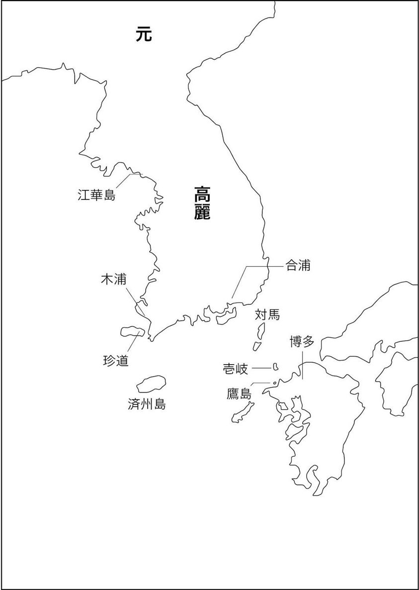
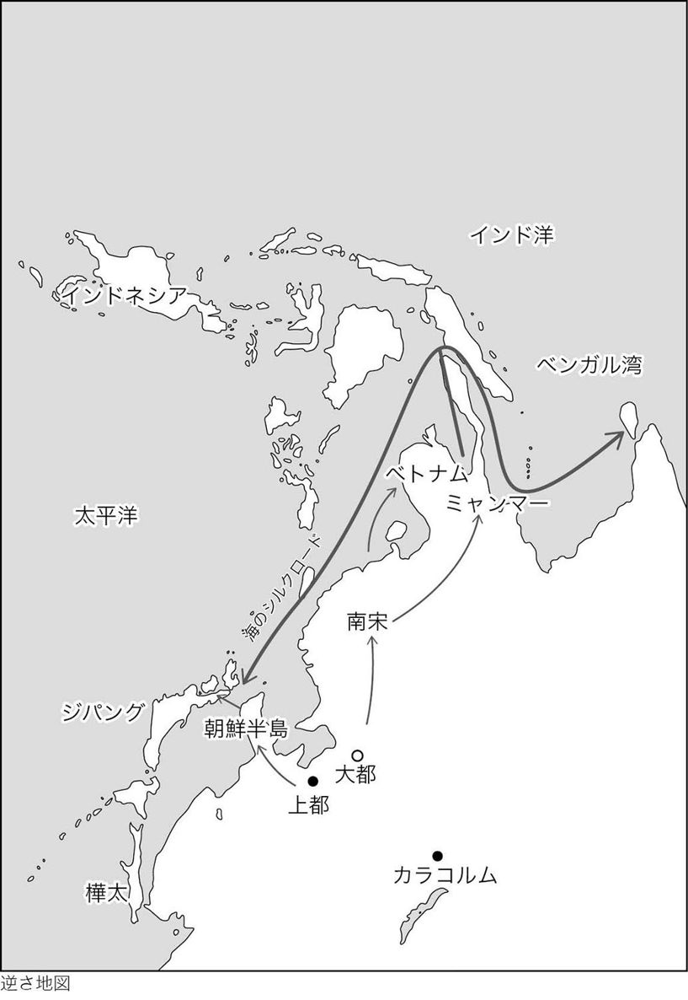
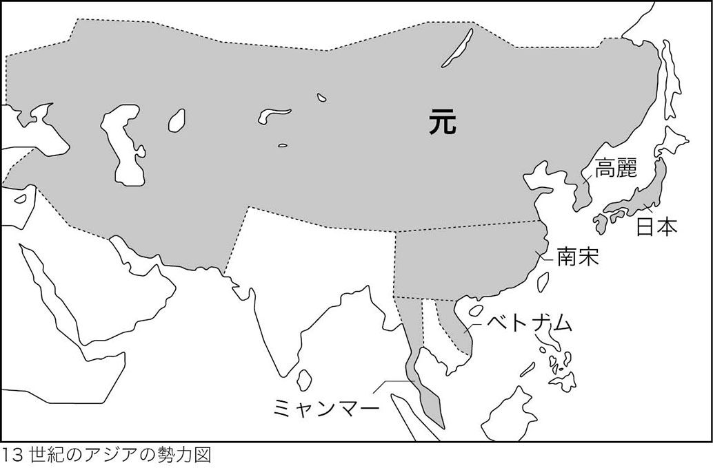
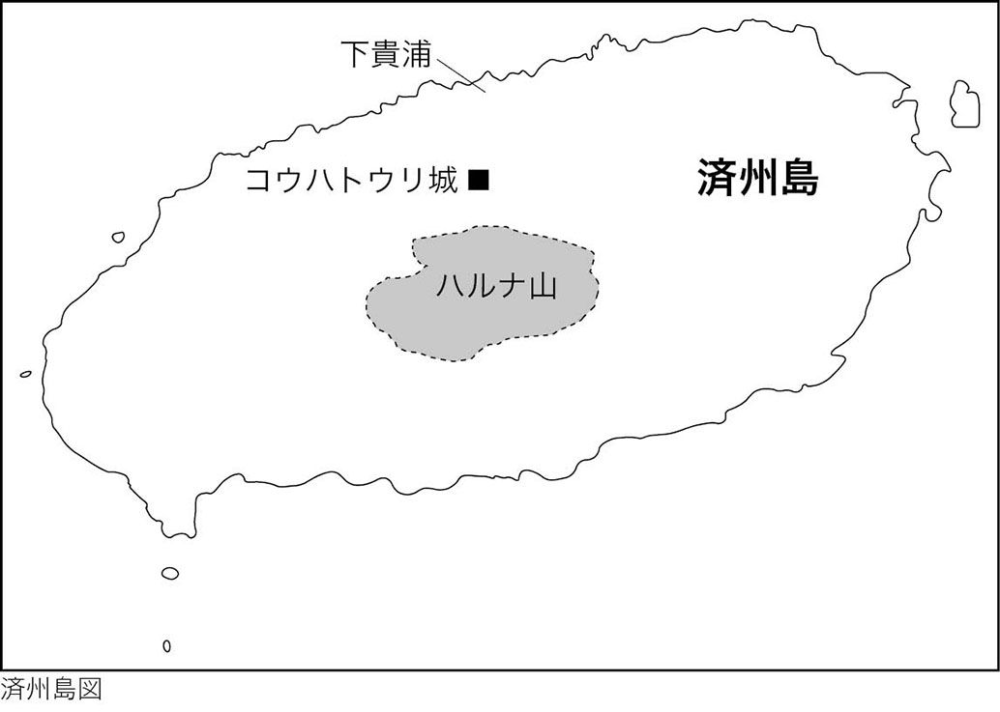
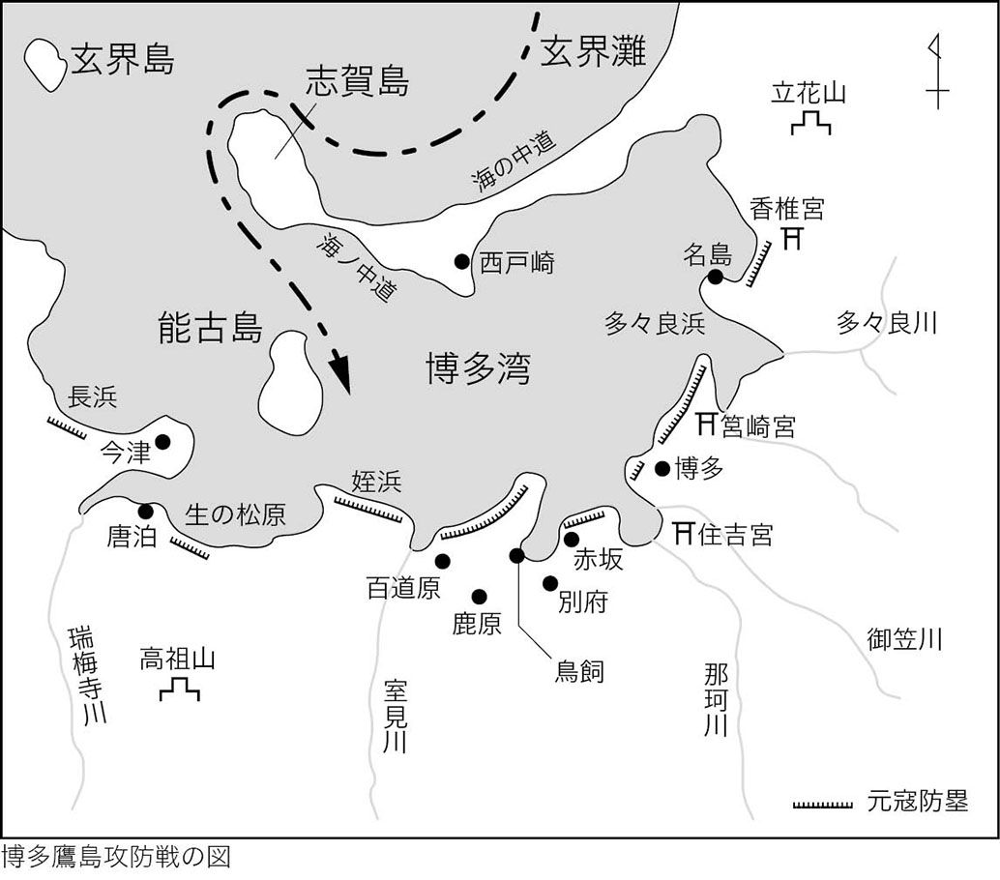
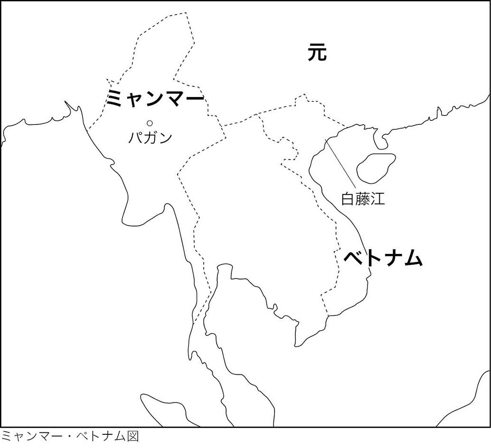
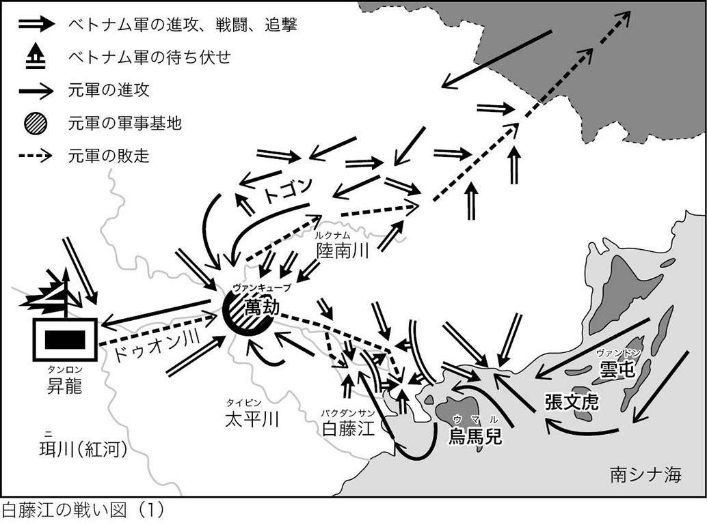
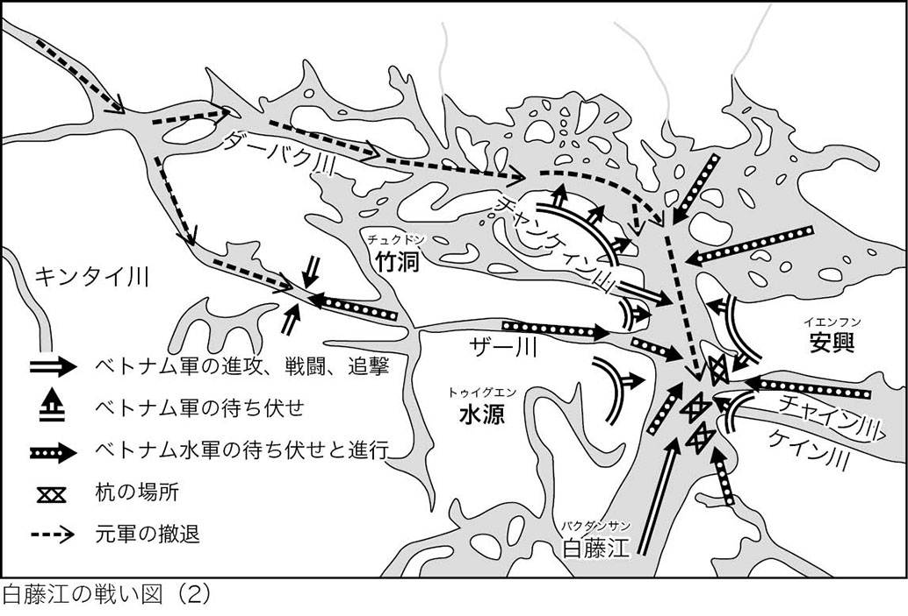

| 龍と麒麟の黄金伝説 クビライの野望編 | |
| 秋山 了 | |
| AKIYAMA RYO (2013) | |
龍と麒麟の黄金伝説
クビライの野望編
秋山 了
一二八一年（弘安四年・鎌倉幕府の時代）
時代は、今から約七〇〇年以上さかのぼる。
季節は、じめじめとした梅雨が明けて間もない、からりと晴れた初夏の頃である。
所は、九州北部の博多湾（現在の福岡県北部）の沖合。
穏やかな湾の西の空に、夕日が輝きながら次第に水平線に沈んでいく。
その赤い夕焼けを背負って、その平穏を破る大船団が、北西の海上から忽然と現れた。
その大船団の数は、約四〇〇〇捜。
当時の日本国内の総ての船を集めても、この数に届くまい。
圧倒的な数の大船団。
さらに驚くべきは、その攻め寄せてきた船団の船の大きさである。
大船の長さは、なんと約四十メーター。
重さは約一トン。
鎌倉時代の日本の造船技術からすれば、度胆をぬく大船である。
一艘に百人の兵と馬を乗せる。
その舷側は高く、竜骨は太く、喫水は深い。
日本海の荒波の波濤を圧していた。
博多湾に来襲してきたこの大船団は、アジア大陸に君臨する元（大元大モンゴル帝国）の皇帝クビライの日本征服の命を受けた軍団であった。
クビライは、アジア大陸の北方の騎馬民族モンゴル族の出身である。
統一した騎馬民族の軍団を引き連れ、まるで怒れる龍のごとく、圧倒的な力でアジア大陸の王朝を征服した。
征服したアジア大陸の東の端の王朝は、朝鮮半島の高麗王朝。
南では、大陸海南部の漢族の王朝であった南宋を滅亡に追い込んだ。
大陸を支配したクビライが、大陸の支配にあきたらず、海洋支配の野望を抱いて、日本への侵略に乗り出してきたのである。
押し寄せた大船団は、クビライの支配に隷属する高麗から進発した東路軍の四万兵。
南宋から進発した江南軍が十万兵。
合わせて十四万兵を乗せる合計四四〇〇艘の大船団である。
東アジア史上の最大の船団が、最大の兵力を乗せて、九州北部に攻め寄せたのである。
この大船団の日本への襲来は、世に「元寇（げんこう）」として知られる。
アジア大陸の東、太平洋の西に浮かぶ独立国である日本にとっては、初めて海外からの侵略を受ける最大の危機だった。
（これほどの大船団は見たことがない！）
圧倒する大船団を目の当たりに見た九州の日本人は怖れで息をのんだ。
だが、この大船団が攻め寄せた博多湾を目指して、その顔色に一片の怖れも見せず、勇んで防衛に駆けつける騎馬武者の軍団がいた。
鎌倉幕府の時の執権（幕府権力の最高幹部）である北条時宗から、日本本土防衛の命を受けた総司令官で、鎮西大将軍である北条実成が率いる九州・山口・四国などの武士団と、関東から応援に馳せ参じた鎌倉幕府の御家人である。
その勇んで駆ける軍団の中に、数人の若者がいた。
若者たちは鎌倉幕府の御家人でも、九州の武士団の一員でもない。
その若者たちは、一つの同じ思いを心に抱いていた。
（クビライの生きる証しが、大陸と海洋を征服する野望を果たすために戦うことであるのならば、われらが生きる証しは、そのクビライの野望を挫くために戦うこと）
野望にかられた怒れる龍のごときクビライに対抗するために、あえてその身をクビライとの戦いに投じた若者たちである。
実はこの時代、クビライと戦ったのは、日本だけではなかった
戦いはクビライの元王朝に接するアジア大陸のまわりの国々で起こった。
アジアの各地で独立自尊を守るために、様々な生まれの若者が、クビライとの戦いに挑んだ。
朝鮮半島の高麗の若者。
アジア大陸の海南地域の南宋の若者。
大陸の東方の海上に浮かぶ日本の若者。
アジア大陸からインド洋ベンガル湾につながるイラワジ川流域のミャンマーの若者。
そしてインドシナ半島のベトナムの若者。
征服欲にかられた怒れる龍に挑む若者たちが、戦いに身を投じた理由は様々であった。
父母と妹がクビライの軍団に討ち果たされた恨みもあった。
一族がことごとく討ち果たされた恨みもあった。
国が滅んだ恨みもあった。
生まれ育った故郷を守る思いもあった。
だが、戦った若者たちに共通していたのは、征服欲にかられて侵略を進めるクビライの大義のない強大な武力による侵略に対して、平和と民族の独立自尊の精神を守るところに、自らが命をかけて戦う大義があると信じた固い信念であった。
伝説にいう。
「大陸に君臨する怒れる龍があらわれ、大海を飲み込もうとするとき、麒麟が世にあらわれて龍の野望を倒す」。
例えていえば、クビライは、征服欲にかられて、アジア大陸の支配にあきたらず、平和を乱し、力で太平洋やアジア大陸南方の海も支配する野望を抱いた龍。
怒れる龍にひるまずに対峙する麒麟とは、伝説では龍・鳳凰・亀とならぶ四つの瑞獣（聖なる生き物）の一つと言われる。
性質は温厚で、独立自尊の平和を愛する。
虫を踏むことさえもおそれるほど殺生をきらう。
だが、世が乱れ、独立自尊の平和が大義なく侵された時は、平和を守るためにあらわれて、あえて戦いに臨み、その身を犠牲にして世を救う。
圧倒的な力を誇る龍の脅威に敢然と立ち向ったのは、平和を愛し、独立自尊の平和を守る大義のために、その身を犠牲して戦う麒麟のような若者たちであった。
いにしえの賢人は、こう云う。
「人はその肩に背負うものの重さによって、その人生の重さが測られる」
迫りくる未曾有の危機に直面した困難な時代に、麒麟のような若者たちは、それぞれの思いと、独立自尊の平和を守る大義をその肩に背負って、アジアの各地で壮絶な戦いを繰り広げた。
この物語は、クビライが率いる圧倒的な軍団に対して、降伏と隷属を潔しせず、平和と民族の独立自尊を守るために、命をかけて戦ったアジアの若者たちの戦いの伝説である。
目 次
主な登場人物
クビライ（元王朝の皇帝）
ゾリグ（クビライの親衛隊第一の戦士、元軍の若き将軍）
ソンジュ（高麗三別抄の戦士）
小太郎（日本の戦士）
ナギサ（小太郎の妹）
チョウソー（ミャンマーの戦士）
グエン（ベトナムの戦士）

伝説の話しは、元の大船団が博多沖に忽然と現われた弘安四年（一二八一年）から一〇数年さかのぼる。
朝鮮半島の西北部の沖合に、江華島と呼ばれる島がある。
江華島は、朝鮮半島を代表する漢江の河口に位置して、半島本土とは数百メートルにも満たない海峡でへだたれている。
一二三二年より、この島には朝鮮半島の高麗王朝と、その軍事組織である三別抄が、中国大陸の北方から朝鮮半島に侵略してきた元軍に対抗して立て籠もっている。
海峡が元の騎馬軍団の陸からの攻撃を防ぐ、自然の軍事要塞のような島である。
その江華島から海峡を小舟でわたり、その半島の海岸線から早馬で駆ければ、一刻もかからないでたどり着くことが出来る山あいに、人知れない隠れた寒村があった。
寒村には、朽ち果てているかのようなあばら家が、いくつか点在している。
「どっ、どっ、どっ」
あばら家の土間で横たわって寝ている幼いソンジュは、うとうととした夜明けのまどろみのなかで、地獄の奥底から響いてくる馬の駆けるような音を聞いたような気がした。
凍てつく寒い夜の暗闇は、夜明け前が一番深い。
隙間だらけのあばら屋の外は、空気さえも凍り付き、辺りはまだ真っ暗である。
ソンジュは寒さに耐えかね、薄汚れた布団を引き寄せた。
そして、寝返りをうちながら、夢うつつのなかで耳をすます。
「どっ、どっ、どっ、どっ、どっ、どっ」
まるで地獄から響いてくる軍馬の駆けるような音は、次第に大きくなり、そして近づいてくる。
（気のせいかな）
ソンジュは、まどろむ夢のなかで思った。
「どっ、どっ、どっ、どっ、どっ、どっ、どっ、どっ、どっ、どっ」
だが、馬の駆けるような音には、全力で駆ける馬の荒い息吹の気配が交じり始め、ソンジュの頭の芯を重くたたき始めた。
（これはおかしいぞ、音はだんだんと大きくなってくるぞ）
突如、ソンジュは寝たまま、大きく目を見開いた。
（違う。この馬の駆ける音は、夢の中なんかじゃない）
掛け布団を跳ね飛ばして飛び起きたと同時に、ソンジュはあらん限りの大声で叫んだ。
「母さん、スミョン、早く起きろ。元軍の騎馬軍団が襲って来るぞ！」
ソンジュの叫びに、ぼろ布団にくるまって、隣に並んですっかり寝こんでいたソンジュの母親と妹スミョンも飛び起きた。
（元軍の騎馬隊が襲ってくる！）
幼いスミョンの目は、恐怖で怯えている。
スミョンは震えながら左手で、あわてて防寒着を手元に引き寄せた。
「母さん、こわい！」
右手は、隣にいる母の手を、恐怖で握りしめた。
添い寝から飛び起きた母は、スミョンの小さな手を固く握りかえした。
スミョンの目をしっかりと見つめてせかす。
「スミョン、急いで、早く防寒着を着て」
服を着ようとするスミョンの手が、恐怖で震える。
無理もない。
元軍の騎馬軍団の襲撃にあって、生きのびることは不可能である。
幼いスミョンでさえも、その恐ろしさは知っている。
防寒着を羽織ったばかりの母が、狼狽を隠して急いで立ち上がった。
防寒着をスミョンに着せ、立ち上がったスミョンの両肩を握り、スミョンの目をしっかりと見つめて繰り返して言い聞かした。
「スミョン、心配しないで。母さんが一緒だから大丈夫だよ」
母の心も恐怖であふれている。
だが、その自分の恐怖に打ち勝とうとするかのように、幼いスミョンを励ます。
「スミョン、母さんと一緒なら、大丈夫だから。母さんの手をしっかり握って。
ついてくるのよ、わかったわね」
スミョンは震える手で、両肩にある母の右手を、すがるように固く握りしめた。
「わかった、母さん。ついていく」
スミョンは、怯えた小さな目で母を見詰め、母の言葉を信じてうなずいた。
母の目には、スミョンを励ます光がある。
だが実は母の心も、恐るべき元の騎馬隊への恐怖と絶望でおおわれている。
その恐怖と絶望のなかで、気丈な母は、スミョンを連れて、なんとか元の騎馬隊から逃げきるわずかな希望を信じた。
スミョンの母の信じる目を見て、母は思わずスミョンの震える体を引き寄せた。
そして、思いっきり抱きしめた。
まるで今生の別れを惜しむかのように。
母とスミョンがあわてて逃げる準備をしている間にも、血相を変えたソンジュは、二人をあばら家に残して、父からもらった護身用の刀を抱えて、あばら家の外に飛び出した。
この山間の村に、昔からいた住民は、すでに元軍と高麗王朝の長い戦いの戦火から避難しており、今はもういない。
そこに潜んでいたのは、高麗王朝の親衛隊である三別抄幹部の将軍たちの家族と、その護衛の者たちであった。
このところ、高麗王朝が、圧倒的な元軍との長き戦いに絶望し、元のクビライ皇帝に降伏する使者を送ったという噂が流れている。
既に、江華島の城壁の一部が、元軍への降伏の印として、高麗王朝によって取り壊しが始まっている。
だが、三別抄は朝鮮民族の自立を掲げ、高麗王朝が降伏しても、あくまでも元に抵抗する気概である。
万が一、高麗王朝が完全に降伏した場合、三別抄は高麗王朝と元の連合軍との対決を迫られる。
その場合、城壁の守りのない江華島に立て籠もって戦っても、元と高麗の連合軍の攻撃を受ければたやすく打ち破られる。
立て籠もって守るに堅い、次の拠点を探さなければならない。
元軍の騎馬隊の攻撃を避けるには、朝鮮半島と陸続きではない島が望ましい、
とすれば、次の拠点となるは、朝鮮半島の西南部に浮かぶ小島である珍島。
更に、南にある済州島であろう。
江華島から抜け出て珍島、済州島に向かう場合、混乱によって多くの非戦闘員である女子供が犠牲になろう。
そうなる前に、できるだけ非戦闘要員である女子供を、密かに隠し、先に非難させなくてはならない。
江華島から女子供をひそかに脱出させたのは、次の拠点となる朝鮮半島南方の海に浮かぶ次なる拠点となる、珍島、済州島に向かうためである。
その避難の途中に潜んでいたのが、この寒村であった。
だが、その避難戦略は裏目に出た。
元軍の情報収集には抜かりがなく、江華島から密かに脱出している一団の動きをつかんでいた。
そして、その情報をつかんだ元軍の騎馬軍団の動きは早い。
脱出を図る一団を打ち取るべく、襲撃をかけてきたのである。
この時、幼いソンジュの父の伊大升将軍（ユン・デスン）は江華島からまだ戻って来ていなかった。
デスン将軍は、高麗王朝の元への降伏にあくまでも反対するために、高麗王朝と三別抄との軍議に出向いたままなのだ。
この寒村にいるのは、デスン将軍が残したわずかな護衛と女子供だけである。
ソンジュがあばら屋から飛び出したとき、すでに三別抄の護衛の兵どもが抜刀して、村の東方の正面から聞こえてくる騎馬軍団の馬の駆け音に身構えていた。
村の東を見たソンジュは、あばら家を振り返って叫んだ。
「母さん、スミョン、村の西の林に隠れろ。そして海岸に出て、海岸伝いに南に向かって逃げろ！」
母が答えて絶叫した。
「ソンジュ、あんた何をしているの。あんたも早くおいで。逃げるのよ！」
デスン将軍の一人息子であるソンジュには、敬愛する父の留守の間、なんとしても母と妹を守る気概があふれている。
幼いながらも、果敢に抜刀した。
その刀を右手に構えて、母に叫び返した。
「母さん、おれはここで元の騎馬隊を迎えうって、母さんとスミョンが逃げる時間を稼ぐ。俺一人ならなんとかなる。すぐに追いかけるから、二人で早く逃げてくれ」
東に向かって構える護衛どもが、抜刀したソンジュに気がついて叫んだ。
「ソンジュ、お前はまだ幼すぎるぞ。戦いの足手まといだ。お前も母親と一緒に早く逃げろ」
護衛兵どもは、右手に剣を構え、東正面に向かって一斉に駆け出している。
正面からの敵に身を挺してあたって、女子供の逃げる時間を稼ぐ気である。
ソンジュは、再び後ろを振り返った。
母親とスミョンが手をつないで、西に駆けていくのを、その目でしかと確認した。
父から預かっていた護身刀を振りかざした。
そして大声で叫んだ。
「クビライめ、かかってこい。俺は、お前に負けないぞ！」
護衛兵どもの後ろを追って、一目散に東に向かって駆けだした。
先に駆ける護衛兵どもが、ソンジュの叫びと足音の気配に振り返った。
ついてくるソンジュの目を見た。
護衛兵どもは、そのソンジュの決死の眼差しにうなずいた。
「よし、ソンジュ、俺らについてこい。おくれるなよ！」
その護衛兵の眼前に、東から村に向かって駆けてくる恐るべき元の騎馬軍団が姿を現した。
先頭を駆けてくるのは、大太刀を振りかざした大柄のモンゴル将軍だ。
だが朝霧が深く、朝日を背にして、その形相は見極めることができない。
その先頭の将軍を見据えて、三別抄の護衛兵どもとソンジュが、刀を正面に構え、防衛陣形の構えに入った。
その時、ソンジュらの後方の西から、新たな大きな騎馬音と、女子供の絶望の悲鳴が聞こえた。
なんと、元の騎馬隊は、三別抄の避難集団が西方向に逃げるであろうと察し、村の西方向に、隠れた騎馬兵を配置して、逃走路を遮断していたのである。
東を守る三別抄の護衛兵どもの顔色が見る間に蒼く変わった。
「しまった。モンゴル兵は西への道をふさいでいる！」
東の道から向かってくる元軍に構えていた護衛兵がうろたえた。
勇猛な元軍の騎馬隊が、東からの道に地響きを立てて押し寄せてくる。
護衛兵は、この東からの襲撃に、その身を犠牲にしても固く守らなければ、前線が崩壊する。
そして、この村に潜んでいた総てのものは一気に蹴散らされる。
だが、囲まれた女子供を守って逃がすには、西に逃げる突破口となる道を開かねばならない。
ここで、護衛兵の守りの指揮が乱れた。
あるものは、攻め寄せる元軍の騎馬隊に正面から立ち向かおうと構えたままだ。
だが、あるものは、あわてて西方向に向かって、逃げる女子供の守りに駆け戻ろうとする。
その乱れの最中、東からの元軍の騎馬隊が、混乱した護衛兵どもに到達した。
立ち向かう護衛兵、西に向かう護衛兵、お構いなしに怒濤のように襲いかかってきた。
先頭に立つ元のモンゴル将軍の大太刀が一閃した。
「ずばっ！」
その太刀は、三別抄の護衛兵の首と背中を切り裂き、辺りに血が飛び散った。
将軍に続く元の騎馬兵も、大太刀を振るう。
三別抄の護衛兵は、東から襲いかかってくる騎馬隊の攻撃を防ごうとする兵。
女子供を助けに西に向かって駆けようとする兵。
東西入り乱れて混乱し、攻撃に対して全くの受け身の形勢となっている。
モンゴル兵は、混乱している護衛兵を狙って、大太刀を縦横無人に振り回す。
「ずばっ、ずばっ、ずばっ！」
護衛兵が、モンゴル兵の大太刀を受けて、バタバタと斃れていく。
無残にも、辺りに次々と血が飛び散る。
「なんじゃい、おまえら、手ごたえないのう」
「この俺さまに、立ち向かってこんかい」
馬上にある先頭のモンゴル将軍が、太刀を振り回し、薄笑いを浮かべて吐き捨てるように叫んだ。
騎馬軍団は受け身の三別抄の護衛兵どもを蹴散らしながら、馬上のまま村の中心を駆け巡り、三別抄の護衛兵の集団を包囲する態勢を固めてきている。
「このままでは俺たちも囲まれるぞ！」
「逃げ切れる者は西に向かった女子供を救って、南に向かって逃げろ！」
三別抄の護衛兵どもの絶叫が、辺りをこだまする。
襲いかかる大太刀を避けながら、護衛兵どもは女子供を守ろうと、西に向かって、必死で駆ける。
だが、多勢に無勢である。
三別抄の護衛兵の分は、圧倒的に悪い。
護衛兵どもは囲まれた。
一人一人、次々と打ち取られていく。
だが、元の騎馬隊の囲みから抜け出るように、西に抜けていく護衛兵もいた。
幼いが、身軽なソンジュも、元の騎馬隊の囲みの隙を見つけ、西に向かって駆けだした。
（早く母さんとスミョンを救って、南に逃げなくては）
（大切な二人を助けなければ、俺に二人の守りを託した父さんに顔向けできない）
ソンジュは、心の中で二人の救出の成功をひたすら祈る。
その抜け出たソンジュを、元軍が見逃すはずはない。
逃げる幼いソンジュをモンゴル兵が見つけた。
「おい小僧め、逃げ切れると思うなよ！」
ソンジュめがけて、騎馬隊の戦旗を掲げる長い棒を一振りした。
ソンジュの後頭部に、鈍い衝撃が走った。
衝撃のめまいをこらえ、ソンジュは必死で耐えた。
駆け続けようとする。
だが、足元はよろめき、意識が薄れていく。
よろめき、倒れていくソンジュのうつろな目には、悲鳴をあげて逃げ惑う女子供が見える。
それを守ろうとする三別抄の護衛兵どもが、必死に刀を振るっているのが見える。
混乱の極みであった。
その混乱の真ん中に、逃げていく母親とスミョンの姿が目に入った。
幼いスミョンが転んだ。
母親とスミョンの握った手が離れるのが見えた。
「母さん、スミョン！」
ソンジュは、よろめきながら、スミョンを助けるかのように手を伸ばして必死で叫んだ。
その瞬間、ソンジュの頭にもう一度衝撃が走った。
モンゴル兵の二度目の打撃を受けて、ソンジュは回転して仰向けに倒れた。
倒れたソンジュの虚ろな目に、立ちはだかるモンゴル将軍の薄笑いが見えた。
「小僧、甘いな。わが元軍の騎馬隊から逃げきれるとでも思ったか」
もう一度、モンゴル騎馬軍団の戦旗の棒が、ソンジュの頬に打撃を与えた。
ソンジュは、消え行く意識なかで、モンゴル将軍とモンゴル戦士の会話が聞こえたような気がした。
「ゾリグさま、この小僧、どうしますか？」
「雑魚は捨ておけ。三別抄の将軍を探し出せ」
あたりを悲鳴が響く中、ソンジュの意識は消えた。
それから、数刻がたった。
消えていた意識のなかで、ソンジュは戦の夢を見た。
ソンジュが立ち向かう相手は、巨大なモンゴルの将軍である。
将軍の振るう大太刀が、正面からソンジュに振りかざされる。
立ち向かうソンジュは、一度は必死で大太刀を受けた。
ソンジュの刀は、もろくも折れた。
二度目の大太刀を受ける刀はない。
ソンジュは、モンゴル将軍の大太刀を素手で受ける決死の覚悟を決めた。
夢のなかで、大太刀がソンジュに振り下ろされた。
（チクショウ、これまでか！）
夢のなかでソンジュが絶叫したその時、何者かに頬をたたかれた。
ソンジュの意識が、おぼろげに戻ってきた。
「ユン・デスン将軍。ソンジュは生きていますぞ」
薄く目を開けたソンジュの瞳に、父であるデスン将軍の姿が入った。
デスン将軍は江華島に出かけていたはずだ。
だが、元の騎馬隊に襲撃の知らせを聞いて、あわてて村に駆け戻ってきたのだ。
「ソンジュ、大丈夫か？」
デスン将軍が、ソンジュを急いで抱え起こした。
ソンジュは目を大きく開け、デスン将軍のソンジュを抱きかかえる腕を固く掴み、声を振り絞った。
「母さんとスミョンは？」
父デスンはソンジュの目を見詰めたまま、無言で答えなかった。
「父さん！」
「母さんとスミョンは大丈夫なの？」
ソンジュの悲痛な声が、繰り返して辺りに響く。
父であるデスン将軍は、口を固く結んで、無言のままである。
だが、ソンジュを見詰めるデスン将軍の目は、血走っている。
その血走った目が、母親とスミョンの悲しい運命をソンジュに知らせた。
ソンジュの目から、大粒の涙がこぼれた。
「なくな、ソンジュ！」
デスン将軍は、ソンジュの肩を揺すって一喝した。
だが、ソンジュの涙は止まらない。
デスン将軍は、ソンジュの目を見つめたまま、黙って着ていた帷子と刀をわたした。
「ソンジュ、これをお前に渡す。わしは江華島に戻る。高麗王朝が元に降伏した場合は、江華島から珍道に逃れる。そこで元軍と戦って、やつらに打撃を与えて思い知らせてやる。だが、珍島防衛に失敗した場合は南の済州島に向かう。お前はわしの手下と共に、先に南の済州島に向かえ」
デスン将軍の目は、怒りと覚悟が燃えている。
「もし、わしの消息が途切れた時は、わしの運命は、お前の母と妹スミョンと共にあると思え」
「だが、お前は決して、わしらと運命を共にしてはならぬ」
「生きて、生きて、生き延びろ」
「そして、クビライと戦い続けろ！」
デスン将軍は、その言葉を残すや否や、やおら立ち上がった。
そして、馬に飛び乗って、叫んだ。
「三別抄のものども、われらが一族の仇を果たす。江華島に引き返すぞ。急げ」
馬腹を蹴るや、後ろのソンジュを振り返らずに、再び江華島に向かって駆けだした。
デスン将軍傘下の三別抄の護衛兵が、三別抄の戦旗を掲げてぞくぞくと駆けて続く。
馬上のデスン将軍の心にあるのは、元軍との戦いの思いだけである。
（この村が襲われたうえは、すぐに元軍と高麗王朝の連合軍の総攻撃は始まるであろう）
（一刻の猶予もない）
（わが妻と、そして幼いスミョンの仇をうたねば、俺は死んでも死にきれぬ）
デスン将軍は、決死の覚悟が固まった。
「急げ、ソンジュ！」
残されたソンジュを、居残ったデスン将軍の手下の兵が、急き立てて馬に乗せた。
南に向かうソンジュは、馬上から村の方向を振り返った。
目に母とスミョンの面影が浮かぶ。
そしてデスン将軍の後ろ姿が、遠ざかっていくのを見詰めた。
敬愛してやまない父であるデスン将軍の言葉が、ソンジュの胸に響いた。
「ソンジュ、お前は生きて、生きて、生き延びて、クビライと戦い続けろ！」


伝説の舞台の時代は、一三世紀の半ば。
日本では、初めて武士が政権を握った鎌倉幕府の時代のことである。
この時代に、アジア大陸を制覇していた元に君臨し、昇る龍がごときクビライは、大陸から海洋制覇を目指して大陸周辺の王朝に侵略を開始した。
このクビライに対して、周辺の王朝の若者たちは、平和を愛する麒麟のように侵略に対して抵抗して戦った。
なぜクビライは、大陸の端の朝鮮半島を侵略して、海を渡って日本に攻め込んだのであろうか。
なぜクビライは、アジア大陸の南の海を目指して、東南アジアの国々への征服を開始したのであろうか。
そして、なぜ、この龍のごときクビライの率いる軍団に対して、周辺の王朝の若者たちは、平和を愛する麒麟のごとく戦ったのであろうか。
この問いに対する答えは、龍であるクビライと、麒麟である若者たちに聞かねばわからないであろう。
だが、戦いの背景である伝説の舞台として伝えられているのは、次のような言い伝えである。
地中海商人で冒険家のマルコ・ポーロは、故郷のベネティアから遠く離れた未知の土地であるアジアに向かって旅立った。
そして、その見聞きした様子を「東方見聞録」として記録に残した。
東方見聞録によれば、マルコの父ニコラと、叔父のマフィオは、中央アジアの高原に張られた大きなテントの中で、元王朝の第五代皇帝であるクビライハーンに直に謁見した。ハーンとは、モンゴル語で皇帝を意味する。
クビライの帝国は、元々はユーラシア大陸の中央に位置するモンゴル高原地方から興った遊牧民族の大陸国家であった。
その大陸国家の第四代の皇帝であったモンケが、一二五九年に中国大陸南方の漢族の帝国である南宋を攻略中に四川で急死した。
皇帝の跡目を巡って、兄クビライと弟アルクブケとの間に争いが起こったが、クビライは、弟を力で降伏させて第五代皇帝となった。
皇帝となると、ほぼ時を同じくして、王座を置く帝都を、大陸中央部のカラコルムから、中華平原の大都（現在の北京）に遷都した。
前出の逆さ地図をみてもらいたい。ふだん見慣れた地図の逆さまである。
これは、クビライが、その新たに王座を置いた大都の位置から見た世界である。
地図を見ての通り、大都に座って世界をみれば、世の人々がよく見る世界地図と逆さまの世界が見えるである。
実は、大都は大陸の中原の都市でありながら、中心に湖水を抱き、都市の内港である積水譚は、大河の川港である通州や白河などを通じて、海港である天津にいたる。
天津からは、さらに南部の海港である杭州や広州につながる。
そしてその先には、東南アジア、インド、アラブ、ヨーロッパの地中海世界との交易海路が広がる。
イスラム系、インド系、客家系の商人などが、金銀財宝や香辛料などの交易による富を求める海の交易ルートである。
すなわち、大都（北京）は、海につながっているのである。
クビライの目には、表紙の逆さ地図のように、大都を中心として広がる扇のように、朝鮮半島、日本列島、中国海南部、インドシナ半島、ジャワ島などが、真珠の首飾りのように連なって見えた。
その真珠の首飾りは、インド洋からアラビア海、遠く地中海世界にもつながる冨をもたらす「海のシルクロード」である。
そもそも、大陸の帝国に繁栄と富をもたらした「陸のシルクロード」に覇権を確立したのは、クビライの父祖であり、「草原の蒼き狼」と世界で恐れられた英雄チンギスハンである。
チンギスハンの生まれについては、謎が多い。
言い伝えによると、モンゴル高原のブルガン山の麓、深き青き水が流れるオルン川のほとりに、蒼き狼を父とし、白き牝鹿を母として生まれたと云われる。
チンギスハンの生まれ故郷のモンゴル高原は、ユーラシア大陸の中心の「へそ」の位置にある。
広くて荒涼たる土漠か、草原地帯である。
モンゴル高原から馬に乗って駆けて西に向かえば、ヨーロッパに着いてしまう。
西南に向かえばインドやイスラム世界。
東に向かえば朝鮮半島や、太平洋につながる東アジア地域である。
つまり馬に乗って駆け続ければ、やがてはヨーロッパや東アジアにたどり着く陸続きの世界の中央部が、モンゴル高原なのである。
この高原は、馬に乗り、弓を持って戦うことに長けた遊牧騎馬民族の支配する地域だった。
騎馬軍団同士の草原の支配をめぐる争いは「凄まじい」の一言に尽きた。
その凄まじさは、馬上から弓を討ち、大剣をふるって、激しく刃を交える壮絶な戦に勝利した勇者に確信を与えた。
「戦いに勝ったおれには、この草原と、この草原に生きる人々を支配する正当な大義がある」という確信だ。
この大義を背負って、騎馬民族は、馬にまたがって戦いに明け暮れた。
チンギスハンも馬にまたがって戦った。
そして、長い戦いの世界に覇者が現れた。
ついに、英雄チンギスハンが戦いに勝ち抜いたのだ。
チンギスハンは、十一世紀末に、遊牧民族が集合する大部族会議で、遊牧騎馬民族全体を支配する皇帝に即位し、大覇権国家を成立させた。
皇帝となったチンギスハンは、覇権の確立とともに、支配下の遊牧騎馬集団の繁栄を求めて、帝国の周り王朝の領土に、豊かさを求めて侵奪を開始した。
豊かさを求める侵略の戦いに大義があり、戦いの勝者には支配する大義がある以上、チンギスハンには当然のことである。
古くは、匈奴、契丹、突厥、韃靼などと呼ばれる北方の騎馬民族集団が、豊かさを求めて大陸を南下して略奪を行っているが、同じことである。
栄華を誇った中国いにしえの秦帝国滅亡の一つの理由は、北方からの騎馬軍団の侵入を防ぐために造営した万里の長城の建設の重い財政負担だったといわれる。
チンギスハンの騎馬軍団による侵奪のすさまじさは、騎馬による迅速な行動、比類のない勇猛果敢さ、馬上戦の熾烈さ、容赦ない残虐さで知られた。
侵奪は、まず獰猛な騎馬軍団による侵入から始まる。
目的は略奪と脅し。
徹底した略奪の後、疲弊した王朝に対して、戦わずして降伏するように使者を遣わす。
降伏勧告に従えばよし。
従わずに抵抗した王朝は、最終的には騎馬軍団の怒涛のような攻撃によって殲滅的な被害を受ける。
チンギスハンの攻撃によって消滅した栄華を誇った都市は数知れない。
後世に、おそれをもって伝えられる残虐さは、戦わずして降伏を強制するために、あえてチンギスハン自らが世に流した脅しであると言うものもいる。
だが、脅しとしての誇張があるにせよ、苛烈さは凄まじかった。
使者をうけた王朝は恐れおののいた。
王朝の殲滅を避けるためには、降伏しか道はない。
降伏した場合には命は長らえられるだろう。
ただ、降伏して隷属した場合は、民の大半は奴婢とされて搾取され、女たちは征服者に献上され、男たちは新たな侵略の楯として、次の征服の戦いに駆り出されるが運命だ。
チンギスハンは、覇者となって力による征服を繰り返した。
その帝国の版図は、西は現在の東ヨーロッパのハンガリー・ポーランドから、南はチベット、東は朝鮮半島に至る地域に広がった。
その広さは、地上の陸地の約四分の一にも及ぶ。
この支配を確立した広大な地は、古くから東と西の世界を結ぶラクダによる通商交易路であった「シルクロード」を囲い込んでいた。
チンギスハンは、容赦ない力による征服によって、その征服欲をみたして傘下の騎馬民族の繁栄を実現した。
と同時に、シルクロードに覇権を確立させ、通行と通商の安全をもたらした。
この通商交易路の確保は、膨大な冨をチンギスハンの手中にもたらすこととなった。
この偉大な大陸の王者であるチンギスハンの血を引き継ぐものがクビライである。
場面を、東方見聞録にあるクビライとマルコの父ニコラと、叔父のマフィオの謁見に戻そう。
謁見の際に、ニコラとマフィオは、日本について、次のようにクビライに述べた。
「ジパング（日本）は、大陸の東の海上一五〇〇マイルに浮かぶ独立した巨大な島国で、膨大な金を産出いたします。宮殿や民の家などは黄金でできているほど大量の金と財宝にあふれております」
クビライは、思わず身を乗り出して話を聞いた。
クビライは、大陸の富と権力を手に入れた王者チンギスハンの孫である。
海に浮かぶ黄金の国ジパングと、海がもたらす富と権力に興味がそそられたのは当然のことであろう。
大陸のまわりの海と王朝を新たに支配して、海が生み出す富と権力を手に入れる大いなる野望を抱いたに違いない。
大陸の王者チンギスハンの孫が、海の王者を目指して、アジア大陸の東と南に広がる海の支配に向かったわけである。
クビライは、大陸の海に接する近隣の王朝に対して、隷属と朝貢を求める詔書を持たせた使者を遣わした。
使者いわく。
「わが（クビライ）命令を受け取って受け入れない者は、目があれば目はつぶれろ、手があれば手はなくなれ、足があればかたわとなれ」
大国の力による支配を押し付ける、無礼で露骨な脅しである。
小国に対して、「戦うか、服従するか？」を選べと迫る傲慢な使者である。
クビライには、「服従して隷属すれば、それでよし。もし小国が抵抗して戦えば、戦いに勝った者に、その土地に生きる人々を支配する正当な大義がある」という遊牧騎馬民族の確信がある。
だが、使者を受ける王朝にとってみれば、「わが命令に従って服従しろ。受け入れなければ力によって征服するぞ」と脅してくる超大国の支配者にどこに大義にあるいえるか。
独立自尊の平和を守るために「その脅しのどこに大義があると言えるか？」、と、クビライに叫び返して当然である。
後の世の歴史家には、次のように言う者もいる。
「力による支配であっても、安定と平和、そして繁栄をもたらす大義はある」
だが、力による支配を狙うものが現れた時、支配に服従することを潔しとせず、民族の独立と自尊のために誇りと命をかけて戦うものが必ず現れる。
絶対的な支配者となり、力による安定と平和をもたらすクビライに大義あるのか。
はたまた、クビライの支配に抵抗して、独立自尊のために戦う者に大義があるのか。
「自らの命をかけて戦う大義とは何か？」
力による平和の大義と、独立自尊の平和を守る大義が、正面から衝突する問いである。
だが戦いの場に臨む双方の戦士にとっては、実はそのような問いかけは無用であろう。
戦場にでて戦う戦士は、自らが守るべきと信じるものを、決してひるむことなく守る。自分の信念に従って、守るべきものを守るために命をかける。
自ら信じる大義を守るために、命をかけて戦う。
これこそが、戦う者の大義である。
伝説の舞台は、海のシルクロードを形づくる大陸のまわりの海に接する国々である。
朝鮮半島の高麗。
中国大陸の海南地域の南宋。
大陸の東方の海上に浮かぶ日本（ジパング）。
インド洋ベンガル湾につながるイラワジ川流域のミャンマー。
インドシナ半島のベトナム。
アジアの各地で、大義を背負った若者たちは壮絶に戦う。

１ 夜襲
大元大モンゴルウルス帝国暦（元暦）至元九年（一二七二年）真冬
朝鮮半島の最南端、木浦港（モッポ）
ユーラシア大陸のはるか北方のモンゴル高原から、凍てつく強風が朝鮮半島に吹き降ろしてくる寒い闇夜のことである。
墨を塗ったような暗闇にまぎれて、三〇艘の黒塗りの「バートル」と呼ばれる駆逐艦の船団が、灯りを消したまま木浦湾の湾口をすりぬけるようにして湾内に侵入した。
黒い船団は、湾内の停泊する喫水が深い高麗王朝軍の「千料船」と呼ばれる大型輸送船に狙いを定め、ひたすらに漕ぎ寄せている。
吹き荒れる風音と深い暗闇が、忍び寄る船団の気配を消し去り、高麗王朝軍の見張りは近寄る船団にまだ気がつかない。
しのびよっていくバートル船団のそれぞれの甲板には、三〇名ほどの武装した戦士と漕ぎ手の水夫達が、身を屈めて潜んでいるのが見えた。
波がしぶく先頭を走るバートルの舳には、二人の精悍な男が獲物の千料船を睨むかのように、立ち見据えている。
一人は初老の男。
左腰に差した細身の刀である狭刀の柄を左手で押え、右手で舳先を堅く握る。
武装している装束は、高麗王朝の親衛隊であった三別抄の将軍の武装。
よく見ると、刃を受けて切り裂けた袖口には、歴戦の血の跡がいたるところに滲んでいる。
顎には髭を蓄え、色黒く海焼けし、頭の鉢巻の下の目は、不屈の意志の光を宿している。
男の名前は金通精（キム・トンジュ）。
高麗王朝への反乱軍である三別抄を率いる将軍である。
三別抄は、もとはと言えば高麗王朝の親衛隊であった。
だが、高麗王朝は、朝鮮半島に北方から侵入してきたクビライの元軍の攻撃に耐えきれず降伏した。
元軍はすでに中国大陸の大半を征服しており、半島に攻め込んできたクビライの元軍は、北方の騎馬民族と漢族との連合軍となっている。
そしてこの連合軍は、高麗王朝をも支配下におさめている。
騎馬民族と漢族の連合軍である元と、元に降伏した高麗王朝に対し、三別抄は叛旗を翻してあくまで抵抗を続けている。
つまり三別抄とは朝鮮半島の勇士からなる反乱軍である。
傍らに立つ、もう一人の男は若い。
この男も狭刀を左に抱え、右手には短弓を握りしめている。
その武装は、同じく三別抄の将軍のもの。
そのいたみ具合は更に酷く、まさに襤褸切れのようである。
顔の面影には、まだあどけなさが残る。
この若さで長くてつらい戦いを生き延びてきたのであろう。
その細く切れ長の鋭い瞳には、数えきれない多くの悲しみを、その近くで見た者の厳しさがある。
男の名前は、尹英樹（ユン・ソンジュ）。
金通精将軍とともに戦い続けた三別抄の尹大升将軍の忘れ形見。
江華島近くの村で、モンゴル騎馬隊に襲われて逃げ延びた、あのソンジュである。
デスン将軍は、ソンジュと別れた後は、城壁の守りのない江華島から珍道に逃れた。
珍島に立て籠もって元と高麗王朝の連合軍と戦ったが、ついに力つきて戦いに敗れ、珍島から済州島に向かう殿軍（撤退の最後尾の軍）を指揮して戦死した。
その父親の残した血の跡の残る戦闘服を身にまとい、遺志をついで戦うのがソンジュである。
先頭の黒塗りのバートルは、気配を消したまま首尾よく高麗王朝船団の旗艦とみられる大型の千料船に漕ぎ寄せた。
と同時に、先端に鉤爪がつけられている縄梯子が次々に敵千料船の甲板に投げ込まれる。
鉤爪が、甲板の高い千料船の舷側に食い込む。
梯子を思い切り引っ張って、食い込みを確かめた金通精が叫んだ。
「よっしゃ、ソンジュ、乗り込むぞ」
金通精が号令をかけるよりも早く、ソンジュは掛け声を発して身軽に縄梯子を駆け昇る。
「おぅ、トンジュ将軍、先にいくぞ」
縄梯子の音で、高麗王朝軍の千両船上の守備隊が襲撃に気がついた。
あわてて、その縄橋子を切り落とそうと夜衛兵二人が舷側から身を乗り出した瞬間、バートル甲板から三別抄の兵の矢が二人の喉元目掛けて放たれた。
「ぐわっ、ぐわっ！」
二人が、音を立てて海面に落ちる。
勢いよく最初に甲板に降り立ったのはソンジュ。
甲板上でソンジュに対峙するは、千料船の守備隊の隊長であろう。
「おまえら三別抄ものか、この裏切りの者め！」
赤色の派手な帷子をまとい、右正面に太刀を構えて吠えた。
背後に一〇名ほど高麗守備兵を従えている。
「アホぬかせ、どっちが裏切りものじゃ。お前らのほうが、国と民を捨てた裏切り者じゃ！」
ソンジュが、大声で啖呵を切った瞬間、隊長がかがみ込んで右足を「ぐっ」と踏み込んだ。
そのまま、右正面から太刀をソンジュに振るった。
太刀は、斜め左に身をかわしたソンジュの右頬をかすめた。
切り込んだ隊長に、返す刀の隙を与えず、今度はソンジュが右足を踏み込む。
と同時に、居合抜きの抜刀を左下から、隊長の喉元右上に切り上げた。
一瞬の技である。
太刀が、隊長の手元から甲板に音を立てて落ちた。
隊長は、そのまま落命した。
ソンジュは、すぐさま隊長の抜け殻の正面の腹を、右足で思い切り蹴り込んだ。
抜け殻が、隊長の背後の守備兵に吹っ飛んだ。
守備兵は、隊長の抜け殻をまともに受けて、後ろにあとずさる。
すでに逃げ腰である。
「ソンジュ、やるのう」
金通精が、悠々と甲板に降り立った。
三別抄の精鋭のものどもが続く。
高麗王朝軍の守備兵と三別抄の精鋭。
数の上では互角であろう。
だが、隊長をいともたやすく打ち取られ、高麗王朝軍の守備兵は浮足立った。
その隙を見逃さない。
ソンジュら三別抄の強者が得意の短弓を引き絞り、守備兵めがけて必殺の矢を射掛けた。
「ぐわっ、ぐわっ、ぐわっ」
矢は、正確に守備兵どもの胸元を貫いた。
「なんじゃ、ちょろいもんじゃのう」
後ろに構える金通精は、余りの高麗王朝軍の守備兵の手応えのなさにあきれ果てた。
後ろのいる守備兵の中には、すでに気おくれし、船から逃げ出そうとしている者も見える。
（こやつらは俺らの敵とは言えぬな）
金通精は、三別抄の精鋭を楯にして、不敵にも守備兵どもに背を向けた。
乗り込んだ高麗王朝船団の旗艦と見られる大型の千料船の舳に、まるで仁王のように立ち、回りを取り巻く三別抄のバートルに向かって下知を発する。
「ものども旗艦を乗取ったぞ。兵糧を積んでいる敵の輸送船を乗っ取れ。小物には目をくれるな。戦艦には火矢を射かけよ。焼き落とせ。おらおら、攻め鉦を鳴らさんかい！」
金通精は舳に仁王立ちにたったまま、次々と下知を繰り出す。
将軍の下知にあわせ、総攻撃の攻め鉦が鳴り響く。
三別抄の攻撃の攻め鉦は、早打ちの乱打だ。
実に攻める味方にとっては小気味のいい音が、まだ暗い未明の湾内に響く。
ソンジュの回りのバートルからは、敵船の船側に次々と縄橋子が投げ込まれている。
三別抄の味方の攻め手の喚声が挙がっているのが聞こえる。
「モンゴルと漢族の手先め、これでも、くらわんかい！」
高麗王朝軍の戦艦を目がけて、次々に火矢が射掛けられる。
兵糧船二艘が、三別抄に乗っ取られて湾口に向かって動きだしているのが見えた。
「おんどりゃ、早よ、船からどかんかい！」
三別抄に乗っ取られた輸送船の手負いの高麗の守備兵が、次々と海に蹴落とされる。
（よっしゃ、まずは、兵糧船の乗り込みには成功したか）
敵のやつらは油断していた。
高麗の輸送船にたいした護衛は乗っていまい。
（乗り込んでしまえば、こっちのものだ）
あとは、乗っ取った船で木浦の湾外にでる。
三別抄が立て籠もっていた江華島と珍島は、もうとっくに陥落している。
最後の砦として立て籠もっている南の済州島に向かうのみだ。
このあたりの海域は、三別抄の水夫どもが生まれ育った海。
地の利はこちらにある。
追われたところで、返り討ちだ。
五艘の戦艦の船倉からは、火が出ているのが見てとれる。
焼き討ちで燃え盛る戦艦の火が海面を照らしている。
あたりは、その燃える火で昼間のように明るくなっている。
高麗の守備兵の戦意は低く、形勢は三別抄が圧倒的に押している。
ソンジュは夜襲の成功を確信した。
「トンジュ将軍、うまくいったな」
「おう、乗っ取りは一山越えたぞ。そろそろ引き揚げの潮時じゃの」
と、金通精が応じた。
その時、屋形の奥から、高麗王朝軍の将軍装束の男が姿を見せた。
高麗王朝軍の主将である金方慶（キム・バンギョ）である。
威厳を湛えた顔に、深い皺が刻まれている。
皺は、朝鮮半島に侵略してきた圧倒的な元軍に長く抵抗してきた高麗王朝軍を率いてきた苦悩の跡であろう。
金方慶将軍は、深夜のこと、あわてて胴丸だけはつけたのであろうか、肩の武者袖と太ももの胴楯さえもつけていない。
夜襲にうろたえ、右往左往する水兵たちを叱咤する。
「あわてるな、押しもどせ、敵の数はすくないぞ」
（あそこにいるは、バンギョじゃ）
三別抄の金通精が、高麗王朝の金方慶将軍を見つけた。
金通精は、若くから名のうれた弓矢の名手でもある。
素早く背中に背負った短弓を引きよせるや否や、矢を放った。
放たれた矢は、間髪をいれず、金方慶将軍の頬をかすめて、屋形に突き立った。
「おい、どうじゃ、バンギョ、驚いたか」
命のやり取りの最中とは思えぬ、不敵で笑みのこもった声で金通精が叫んだ。
（くそ）
冷や汗をかいた金方慶将軍が、いまいましげに見返した。
金通精の得意顔の目と、目と目があった。
お互い髭面の顔は、まるで、昔なじみの子供のように薄く笑った。
金通精と金方慶将軍の二人は、もとは同じ高麗王朝の軍事組織である三別抄の将軍であった。
高麗王朝が元との長き戦いに絶望して降伏する前は、ともに元軍に対して命をかけて戦った仲間であった。
だが、二人はわかれた。
一人は、あくまでも元軍に抵抗する三別抄の将軍に。
もう一人は、降伏した高麗王朝への忠誠を守り、元に抵抗する三別抄を反乱軍とする高麗王朝軍の将軍となった。
金方慶将軍にとっても、横暴な征服者である元軍と共に生きるのは、決して本意ではない。
だが、高麗王朝が生き延びるには、他に選ぶ術はないと絶望して決心した。
刻まれた皺は、悲しい決断を物語る。
「トンジュ、わざわざ出張って焼き討ちとは、ご苦労なことよな」
すきを突かれた悔しさの負け惜しみか、冷ややかな笑みを浮かべている。
「おう、挨拶がてらじゃ、少々の食い物を頂戴するわ」
金通精は、まるで町の市場に立ち寄ったような物言いである。
「乗っ取りをかけ、わが高麗王朝の戦艦に火矢を射掛けるとは不敵なやつじゃ」
「ああ、火矢による焼き討ちのことか？」
自慢の髭を撫で付けた。
「今夜は闇夜の濃い夜でな。少し灯りが見とうて、悪いが船に火をつけさせてもろうたわ」
「船を焼いたところで、元軍と高麗軍は船をつくるぞ。兵糧も集める。きりはないぞ」
「おお、船を作ってくれ。食糧も集めてくれよ。また参上するからよ」
金方慶将軍は呆れはてた。
そのあきれ果てた顔には、見放したような哀れみが浮かんでいる。
「トンジュ、おのれら三別抄の抵抗は、クビライの大軍に対して無駄じゃということが、まだわからぬか」
「分からぬのう」
「無駄死になるのじゃぞぅ」
「無駄死になるかならぬは、わしらが決めること。おぬしやクビライが決めることではないわ！」
と、金通精は、金方慶将軍に向かって、忌々しげに吐き捨てた。
「よし、わかった。トンジュ。いずれおのれの首を刎ねることになろう。首でも洗ってまっておれ」
「おう、済州島でまっておるわい。いつでも来い」
と、威勢を示して金通精が応じた。
そのとき、金通精に並んで金方慶将軍を睨みつけるソンジュの目に、金方慶将軍の後ろに、モンゴル戦士と漢族の兵の集団が現れるのが見えた。
その中にひときわ巨漢の異形の鎧姿がいる。
六尺を超える長身で、大柄のモンゴル戦士である。
日にやけた顔にはひげを蓄え、目には勇猛さにあわせて、酷薄さが光を放っている。
極太な腕は、左手に大太刀を軽々とかかえる。
（あそこいるモンゴルの戦士は、モンゴルの将軍ではないか）
ソンジュは、その瞬間、左腰にさしている狭刀の柄に右手をかけた。
（このモンゴルやろう、目にものみせてやるぞ！）
殺気だったソンジュは、舳先から屋形に向けて、猛然と突進した。
その勢いのまま大跳躍。
「モンゴル野郎め、この太刀をくらえ！」
と叫ぶと同時に、異形の鎧めがけ正面上段からの抜き身で太刀を見舞った。
渾身の力を込めた突っ込みだ。
だが、モンゴルの将は、駆けよせるソンジュの太刀筋を、やすやすと見極めた。
悠然と大太刀を抜刀した。
三尺五寸もある青竜刀である。
横刀でソンジュの刃をうけた。
「くっ！」
衝撃は、攻めたはずのソンジュの手元にはしった。
大太刀の男は剛力であった。
ソンジュは、すぐさま右斜めから、二度目の二の太刀を横殴りに打ち込んだ。
力の差がある剛刀に対しては、決して受け太刀に回ってはならない。
受けては力で押し込まれる。
ただひたすら攻めるべし。
更に、横に飛んで三度目に三の太刀を、斜め左正面から振るう。
ソンジュは、次々と斬り込んでいく。
だが、籠手と脛当てで、いとも容易く防がれた。
「なんじゃ、お前の腕はそんなもんかい」
モンゴルの将は、ニヤリと笑みを浮かべた。
突然、右手の大太刀を横殴りにはらった。
ソンジュはとっさに太刀すじを避けて、後ろにのけぞった。
はらった大太刀の起こした風が、ソンジュの横顔をなぐった。
かわしたのは、紙一重。
一瞬でも遅れていれば、首は胴から切り離されていたであろう。
「ほう、身が軽いの」
思いもかけない俊敏さに、モンゴルの将が嘆息した。
大太刀をソンジュの正面に突き出した。
そして、そのまま、ずいと、一歩、二歩と、踏み込んでくる。
ソンジュは間合いを取って、すり足で後ずさる。
大男は、力まかせで、じりじりと押してくる。
「おまえ、高麗三別抄の落ちこぼれの者か。名をなのれ」
「おまえこそ、名をなのれ」
「けっ！」
モンゴルの将は、嘲笑った。
「おまえなぞに名をなのる云われはないが、冥途の土産に聞かせてやるわい。クビライさまが第一のケシクのゾリクよ」
（ケシクとはクビライの側近の親衛隊ではないか。それも、その第一のケシクとは）
ソンジュは、驚いた。
（クビライが最も信頼する側近中の側近である第一のケシクがここまで出向いているとは、元軍の三別抄の基地への攻撃はちかい）
ソンジュは、済州島を取り巻く切迫してくる状況に、鳥肌が立つような寒気を覚えた。
ゾリクが、大太刀の切っ先をソンジュ向けて睨みつける。
「おれか、おれは、三別抄のユン・ソンジュ」
ソンジュが応じた。
「おっ！」
ゾリグの目に驚きが光った。
「三別抄のユン・ソンジュとは、珍島で死んだ尹大升将軍のせがれか？」
「そうだ、ユン・デスンは、おれのおやじだ」
ゾリグの目が、にやりと笑った。
「そうか、因縁じゃのう。ユン・デスンは俺が討ち果たしたわ」
今度はソンジュの顔に、驚きが走った。
「この俺が、この刀で、首と胴を一撃で切り離してやったわ」
太刀を上下に振り、にやにやと笑いながら言い放った。
（こいつが、おやじの仇）
ソンジュの目が血走り、刀の柄を持つ手に力がこもった。
「おい、お前、見覚えがある顔をしておるぞ」
突然、ゾリグがいぶかしげにソンジュの顔を見詰めた。
「お前、数年前、江華島の近くの村に、女どもと潜んでおった小僧ではないか？」
ソンジュの脳裏に、凄まじい稲妻が走った。
（この男、もしや村を襲って母さんとスミョンの命を奪った敵将か？）
（とすれば、こいつはおやじだけではなく、母さんとスミョンの仇！）
ソンジュの顔面は怒りで赤く染まった。
「かっ、かっ、かっ。やはりそうか、俺はお前の一族全員の仇となるな」
ゾリグは楽しそうに笑いながら、間合いを詰めてくる。
「ソンジュ、お前は仇を討ちたいと思わぬのか？」
薄ら寒く、いたぶるような、見え透いた親しみを込めるような、言い振りである。
そして、ソンジュに気取られぬように、徐々に間合いをさらに詰めてくる。
「ほら、かかってこんかい」
呼び込むように声をかけながら、間合いを詰めたゾリグが右手の刀をはらう殺気を見せた。
そのゾリグの殺気の瞬間、二間ほどソンジュは跳躍して飛び戻った。
ゾリグは、殺気を気取られたことに、驚きの表情を浮かべた。
その驚きの顔に、ニヤリと笑みが浮かんだ。
（おっ、こやつ、なかなかの使い手じゃ、戦う相手として面白い）
「ソンジュ、俺はお前のおやじと家族の仇じゃぞ」
にやにやと、いたぶるように笑う。
「お前も、おやじらと同じように首と胴を切り離してやる。さあ、かかってこんかい」
ゾリク、わざと隙をみせた。
不敵にも、大太刀を左手に持ち替えてだらりと下げ、右手のひらで呼び込む隙をみせた。
ソンジュは、斜め上段に構えた切っ先の狙いをゾリクにあわせた。
「おやじと母さんと、哀れなスミョンの仇め！」
ソンジュはメラメラと怒りに燃える目で、ゾリグの目を見据える。
そのまま、狭刀を斜め上段から真正面に向けた。
すり足でゾリグの右横に回り込みながら、じりじりと間合いをはかる。
刀の構えは、真正面のまま、ゾリグの隙を伺う。
その時、「うおっ！」と、ゾリグの右横合いから、ゾリグの護衛の漢人の護衛兵二人と、高麗兵一人がソンジュに斬りかかってきた。
ソンジュは、「かっ！」と、吠えざまに、刃をかわし、身をひるがえして横に飛んだ。
そのまま、ソンジュの剣が一閃して、漢人の護衛兵の喉首を一刀のもとに切り裂いた。
さらに、横から打ち込まれる刀を跳ね上げ、漢人兵の胸元を一突き。
続けざまに、大きく剣を回して、高麗兵の利き腕を切り裂き、甲板に跳び戻る。
「くっ！」
軽く息を吸って、ゾリグに向かって刀構えを整えるソンジュの足元には、急所をやられた二名の漢人兵がすでにこと切れていた。
「ほっ、ほっ、ほっ」
ゾリクの口許に、思わぬ笑みが浮かんでいる。
（なかなか、やるのう）
生まれつきの戦士であるゾリグにとって、戦いは晴れの舞台である。
戦いの舞台で舞うゾリグにとっては、敵であろうが味方であろうが、刀の見事な腕前は、見事の一言につきる。
むしろ、命のやり取りをする戦場で、見事な腕前を持つ手応えのある敵に合いまみえてこそ、ゾリグにとっては、舞台で舞う面白さが引き立つというものだ。
ゾリグにとって、手応えのない敵と戦うことは、面白くもなにもない。
高麗王朝が元に隷属してきて以来、このところは面白くない戦いであった。
（久しぶりの手応え、てっ、ところか）
ゾリグは、うきうきしてきた。
「この雑魚どもが、よけいな邪魔すんじゃねえ！」
ゾリグは、獲物を横取りされた猛獣のように、倒れた兵士を罵った。
まだ息のある高麗兵は、利き手の動脈を切られ、必死で利き手を抱えて身悶えている。
傷は致命傷になるほどは深くない。
早く止血すれば、生き延びることはでき、右手も自在に使えるまで回復するであろう。
だが、すぐに止血しなければ、このまま死ぬであろう。
ソンジュは刀をはらって、倒れて身悶える兵の首に切っ先をあて、止めをさそうとした。
そのとき、高麗兵の恐怖で、かっと見開いた目が、ソンジュの目に入った。
みればソンジュよりも若い、まだ小僧である。
（モンゴルのやつら、こんな年端もいかぬやつを戦いに駆りだすとわ）
（こいつも、あわれな小僧よ）
（じゃが、モンゴルが来なければ、こやつは、おれと同じ高麗人として共に生きていたやもしれぬ）
ソンジュの心に不思議な感情が走った。
こいつは敵である。
いつか、また俺らを襲ってくるであろう。
情けは無用。
だが無益な殺生は、俺の趣味ではない。
「小僧、命を惜しめ」
ソンジュは切っ先を、小僧の喉元からはらった。
そして、後ずさりしながらゾリグとの間合いをはかった。
敵方の雑兵どもの新手が屋形から出て、舳先に向かって回りを囲んできている。
（このままでは、囲まれるな）
あたりを見回すと、三別抄が乗っ取った高麗の兵糧船は湾口に向かって進んでいる。
大船の戦艦のあちこちで、火の手も上がっている。
高麗王朝の応援部隊のバートル（駆逐艦）と小舟が、港から漕ぎ出して来ているのも見えた。
（囲まれると犬死となる）
（おやじ、母さん、スミョンの仇のゾリグを、ここで見逃すは残念だが、引き揚げの潮時か）
と、ソンジュが思った瞬間。
「ソンジュ、兵糧船は乗っ取った。逃げるぞ！」
舳先のかなたから、金通精の呼び声がきこえた。
金通精は、金方慶将軍と、高麗王朝軍の旗艦の舳先で、互い切り結びあっていた。
だが、金通精の、今回の奇襲の目的は、兵糧を奪うことにあった。
金方慶将軍と切りあって勝負をつけることではない。
金方慶将軍と、激しく鋭い剣を交えたのは、時間を稼ぐためである。
深追いして切り結び、逃げ時をのがすのは禁物であることは、はなから承知である。
回りの様子を横目で伺いながら、夜襲の成功を確認するや否や、逃げ時を見逃さなかった。
金方慶将軍の隙を見つけるや否や、疾走して船楯を飛び越えた。
そして、攻め寄せていた三別抄のバートル船上に跳び戻っていた。
悠然とソンジュに、奇襲から撤退する逃げの呼び声をかける。
「おーい、ソンジュ、逃げるぞ。早くもどってこい！」
ソンジュの周りはみるみる囲まれてくる。
（仇うちは、次にまみえるときか）
「ゾリグ、また会おう。その時、わが一族の仇を果たさせてもらう」
金通精の呼び声を聞くと同時に、ソンジュはゾリグに背中を見せた。
屋形から舳先に向かって駆けぬけた。
そして、船楯を思いっきり蹴って飛び越え、海面に向かって飛び込んだ。
「ほう！」
ゾリグは、その身軽さに驚き、思わずうなった。
舳先に駆け寄って下の海面を覗き込む。
海面に飛び込んだ音と渦が見えると思いきや、ソンジュは身軽にも、ゾリグの乗る旗艦から離れ出しているバートルの甲板に、「トン」と軽い音を立てて飛び移っていた。
「ゾリグ、次にあったときは覚悟しろ。首をとってやる」
ソンジュが、ゾリグの顔をまぶたに焼き付けるかのように凝視して叫んだ。
ソンジュの乗る三別抄のバートルは、みるみる離れていく。
（チェ、仕損じたか、逃げ足の速いやつめ）
ゾリグは刀をはらっておさめつつ、今度は、命拾いした小僧の高麗兵を横目で一瞥した。
「けっ、命を惜しめか。戦いの最中に寝言を言うんじぇねぇ」
と、吐き捨てた。
ソンジュたちの姿はもう港の闇に消えていた。
この前の日、ソンジュが朝鮮半島本土に放った密偵より報告があった。
一昨日より、高麗王朝軍が基地とする朝鮮半島の最南端の軍港である木浦港（モッポ）に、元軍の征東将軍であるキント、漢人部隊を指揮する高麗人の洪茶丘将軍、そして高麗軍指揮官の金方慶将軍が集合している。
半島の東部の金海に駐屯する元軍の警備の本隊は同行しておらず、船団の警護はゆるいとの情報であった。
征東将軍とは、日本に攻め入るクビライ直命の大将軍である。
元軍と高麗の連合軍は、日本へ攻め込む戦艦と兵糧船の準備を急いでいる。
準備が整えば、木浦に停泊する高麗軍の戦艦も、朝鮮半島南部のもう一つの基地である合浦港に集結している元軍と高麗軍の連合軍に合流する。
そして日本に攻め込む戦略である。
だが、日本に向かうまえに、日本攻撃に邪魔となる目障りな反乱軍である三別抄が立て籠もる済州島に押し寄せるであろう。
済州島に攻め寄せる攻撃の前に出鼻を挫くしかない。
木浦港に夜襲をかけ、高麗の戦艦を焼き討ちして、兵糧船を奪うには、今夜のような漆黒の闇夜は、出鼻を挫く夜襲の絶好の機会であった。
北からの風を避け、港近くの岩陰に潜んでいた甲斐があったというものである。
金通精とソンジュの夜襲は、成功であった。
２ 高麗の悲劇
ソンジュらによる木浦港への夜襲の時点から、少し話をもどそう。
高麗王朝、いや高麗の民の運命は、実に哀れである。
アジア大陸を征服した元の騎馬軍団が、朝鮮半島に侵入を始めたのは一二三一年である。
さかのぼって数えると、元軍の侵入によって朝鮮半島の国土が蹂躙され始めてから、金通精とソンジュの木浦港への夜襲の時点までは、すでに四十年以上がたっていることになる。
一二三一年の元の侵入が始まって間もなく、高麗王朝は元の騎馬軍団による掠奪を避けるため、朝鮮半島本土から西岸の沖合の江華島に本拠を移し、元軍に抵抗した。
海峡を隔てていれば、騎馬軍団の陸上からの直接的な攻撃を避けられるからである。
高麗王朝の元軍への抵抗の主力は三別抄と呼ばれる軍事組織であった。
高麗王朝自体は、本来は文民政権であり、武家を中心とする政権ではなかった。
したがって、高麗王朝の軍は、戦闘する軍としては強力ではなかった。
その戦闘力の不足をおぎなうために、高麗王の親衛隊として三別抄が組織された。
『別抄』とは精鋭からなる特別部隊を意味する。
左別抄、右別抄、そして元の捕虜となったが、首尾よく逃亡してきた兵で構成される神義軍の三つの部隊からなる。
その生い立ちからして、三別抄は高麗王朝に忠誠を誓った反クビライの軍事組織であった。
だが、三別抄を主力とする高麗王朝の抵抗も、元軍の圧倒的な力に為す術はなかった。
元軍は江華島の力のない高麗王朝を無視して、抵抗のないことをいいことに、半島本土で掠奪を繰り返した。
四〇年間の繰り返される掠奪によって、国土は荒廃、民は流亡。
数十万人が捕らえられ、死んだものは数しれない
力のない高麗王朝は、民の保護を放棄したどころか、自らの財政を支えるために、かえって民を収奪するありさまであった。
一方で、三別抄による抵抗以外でも、朝鮮半島各地で、元の支配に抵抗する民衆の自然発生的な義兵による抵抗は続いた。
だが、これもクビライの騎馬軍団の敵ではなかった。
ここに至って、高麗王朝は元の長き苛酷な圧迫に耐えることに絶望した。
一二七〇年、高麗王朝の国王である元宗皇帝の世継ぎの子シムが、クビライに降伏したのである。
そして、反クビライである三別抄に解散命令を出し、クビライに忠誠を誓った。
シムは後に忠烈王と王名を名乗った。
忠烈王の忠とは、クビライに対する「忠」である。
これ以降の高麗の王は、「忠」の一字を王の名に持つ。
この命令に対して、三別抄は、軍の解散と、高麗王朝の元に対する忠誠と隷属に反発した。
「民を見捨てた王に、王の正当性はない」と大義を掲げ、高麗王朝一族の一人である温王をあらたに高麗王に擁立して元に抵抗を続けた。
守りの城壁が破壊された江華島は、高麗王朝と、元に明け渡したが、さらに南の拠点である珍島に移動して独自の抵抗運動に転じた。
この三別抄の抵抗運動を率いたのは斐仲孫将軍である。
珍島を拠点として、朝鮮半島本土各地で抵抗を続けた。
だが、その抵抗は虚しかった。
元と高麗王朝の連合軍による珍島攻略戦に破れると、さらに南にむかって逃れ、済州島を本拠とした。
斐仲孫将軍は、珍島の攻防戦で戦死した。
だが、三別抄が元と高麗王朝軍の攻撃を受けて江華島から脱出する際に、高麗王朝の身分制の基礎となっていた図籍と賎籍を焼却した。
身分制の基礎資料を破壊し、しいたげられていた奴婢を解放し、高麗王朝の身分制を否定したのである。
これによって、斐仲孫将軍は、民からは、奴婢を解放した英雄とされる。
高麗王朝には、身分制を否定した逆賊と記録された。
金通精は、戦死した斐仲孫将軍のあとをついで、済州島の三別抄を率いている。
斐仲孫将軍と金通精と共に戦って、江華島の戦いで散った三別抄の尹大升将軍のたった一人残された忘れ形見がソンジュである。
ソンジュが生まれた時は、既に元の朝鮮半島への侵略は始まっており、ソンジュは生まれてこの方、戦いのない世界は知らない悲しい生まれである。
クビライの軍が、朝鮮半島に侵入し、各地で人員と木材を徴用して造船を急ぐのは、クビライの命に従い、黄金の国ジパング（日本）攻略が目的である。
その前に邪魔となる済州島を攻め寄せるであろう。
攻め寄せる圧倒的な元に対して、単独で対抗できない三別抄は、元の攻勢に対して対抗する戦略を探した。
その戦略は、次にクビライが狙っている日本との軍事同盟であった。
三別抄は、軍事同盟を結ぶ目的で、高麗国王の名で日本へ親書を送り、交渉を進めようとした。
三別抄と幕府の交渉を仲介したのは、海上交易を生業としていた蝦夷地の安東党、九州の松浦党などの水軍であった。
この交渉の過程で、ソンジュは、安東党や松浦党の使者に面会して説いた。
三別抄と鎌倉幕府の軍事同盟が、日本への侵略を狙う元と高麗の連合軍への防衛戦略として極めて重要であること。
そして、済州島に押し寄せる元軍に対して、鎌倉幕府が援軍を派遣し、元と高麗の連合軍に共に対抗することを必死で説いた。
この交渉を仲介した松浦党の水軍の一門の一人に、小太郎という若者がいた。
航海術に長け、知勇を誇る。
使者の一人としてソンジュや金通精、済州島で会って、朝鮮半島の情勢に通じていた。
小太郎だけでなく、水軍のサムライはみな、いつも海外に目を向けていた。
朝鮮半島だけでなく、大陸の海南部にある漢族の王朝である南宋の緊迫した情勢にも通じていた。
元は朝鮮半島だけではなく、強力な水軍を有する南宋も攻略していた。
朝鮮半島、南宋に次いで、元の侵略の脅威が日本に迫っている。
明日は我が身に降りかかる脅威である。
水軍のサムライは、日本に迫る大きな危機に対処するために、三別抄との軍事同盟が元の日本侵略を防ぐ防衛手段であることを幕府に強く説いた。
小太郎も、三別抄と鎌倉幕府との軍事同盟が、元軍の日本への侵略を牽制すると考え、金通精やソンジュらの説く軍事同盟の成立を幕府に必死に進言した。
だが、時の鎌倉幕府は、詮議を重ねた上で、これを無視することを決定した。
なぜなら、三別抄からの親書は、数年前に送られてきた高麗王朝からの親書と矛盾していた。
数年前に鎌倉幕府が受け取った高麗からの親書は、元に屈服した高麗王朝からの書状であった。
その親書には、元への朝貢は有益であると書かれていた。
ところが、三別抄からの高麗王朝名義の親書は、元の横暴と残虐を唱えていたからである。
鎌倉幕府は、大国であるクビライの元と、降伏した高麗王朝と、あくまでも抵抗する三別抄が入り乱れる朝鮮半島の事情には疎かった。
島国として、まだまだ外の情勢に目を向ける余裕はなかったのである。
ソンジュ、金通精、松浦党、安東党、そして小太郎。
皆が、迫りくる元軍の脅威に対して、鎌倉幕府が三別抄と協力して対峙するように努力を重ねた。
だが、その努力はむなしかった。
三別抄と鎌倉幕府の同盟はならなかった。
ソンジュは、木浦港への夜襲に成功して、済州島に凱旋する船上の舳先に一人で立ち、暗い眼差しで朝鮮半島本土を見詰めた。
『木浦港の最前線に、クビライの親衛隊であるケシクが出向いているということは、日本へ攻め寄せる準備が整ったのであろう。日本へ攻め込む前に、済州島にクビライの大軍が押し寄せてくるに違いない。いよいよ、クビライとの決戦だ。だが、日本の鎌倉幕府との軍事同盟は成らなかった。我ら三別抄だけで、クビライの大軍と戦うことになる。決死の覚悟しなければならない。』
暗き風雲が済州島に向かってくるのを感じた。
３ 済州島陥落
元暦至元十年（一二七三年）四月
朝鮮半島沖、済州島
済州島は朝鮮半島の最南端に位置する火山島である。
近くを暖流である対馬海流が流れており、島の南部は温暖な気候であるが、北部の冬は北西からの風が強く吹き、島の南北の気温差は激しい。
島の中央には標高二〇〇〇メーターに近いハルナ山がそびえ、火山性の溶岩洞窟群とオルムと呼ばれる小高い丘が点在している。
石が多く、土地は痩せている島である。
島の北西にある竜頭岩に立つ見張りの眼前に、百六十艘の船団が、忽然と姿をあらわしたのは、北西からの北風がおさまった、春うららかな日であった。
乗り込んでいるのは、モンゴル兵が二千人、漢人兵が四千人、高麗兵が六千人。
水夫も含めれば、総動員数で二万兵からなる大軍であった。
島を攻める二万の軍団を率いるは、モンゴルの将軍キント。
漢人部隊の指揮をとるのは洪茶丘将軍。
高麗軍の将軍は金方慶将軍。
そして、モンゴル人ケシクであるゾリグ。
三別抄が最後の砦として立て籠もるのはコウハトウリ城である。
コウハトウリ城は、今の済州市から西二五里にある。
外城壁は三百里に及ぶ。
外城壁の内部に中城壁、さらに内部に内城壁が構築されている。
城の東西には川が流れ、南はハルナ山の急斜面がある。
北は緩斜面だが守りは固めてある。
コウハトウリ城には二万人が立て籠もる。
だが、老人、女子供も多く、剣を手にして戦えるのは数千しかおるまい。
城の正面の湾の港は、下貴浦とよばれる。
連合軍の船団は、下貴族浦の港の東西から、左翼軍、中軍、右翼軍の三軍に分かれて上陸を開始したのだった。
ソンジュら三別抄は、正面の下貴浦には、前縁防衛の砦を築いた。
済州島には丘が沢山ある。
この丘はオルムと呼ばれる。
そのオルムにも柵を設け、防衛線を張っていたが、分散上陸には対応ができなかった。
元と高麗の連合軍は、散発的に抵抗を見せる三別抄の攻撃を蹴散らして、先ず上陸地点に拠点を確保。
その拠点陣地から、更にオルムを超えて、コウハトウリ城に向かって進撃を開始した。
連合軍が上陸した日から三日たった。
その三日の間に、オルムに築いた前線基地の防衛の柵は、攻め寄せる元と高麗の連合軍に、既に突破されている。
三別抄が最後の砦として立て籠もるコウハトウリ城に連合軍が肉薄する。
コウハトウリ城の前線の砦の前の防衛柵が築かれた最後の小高い丘は、高麗の兵に覆われていた。
元軍と高麗王朝軍の最前線で、柵を攻めてきた主力は高麗兵であった。
高麗の兵は寄せ集められた弱兵だが、背後には圧倒的に優位な元軍が控えている。
元軍の督戦部隊が、抜刀して高麗兵の背後から突撃を命令する。
督戦部隊とは、最前線の兵士が、怖気づいて逃げ出さないように、後方から前線の兵士を監視し、逃げ出す味方の兵士がいれば、容赦なく切り倒す部隊である。
前に進めば、敵である三別抄に正面から衝突する。
退けば、背後の元軍の督戦兵に切り倒される。
攻める高麗の歩兵にとっては、進むも地獄、引くも地獄である。
ソンジュらは城を出て前線の柵の防衛にあたって防いだ。
だが、防衛側も兵力の損耗が激しい。
土嚢を超えて高麗兵が突撃を繰り返しながら前進してくる。
じりじりと、中城に後退を余儀なくされた。
「前方の最後の柵と外城壁は破られたぞ！」
「中城に立てこもるぞ、急げ！」
ソンジュは生き残った三別抄のものどもに大声で怒鳴った。
守りの柵を乗り越えて、高麗の兵が追いすがってくる。
「おんどりゃ、三別抄をなめるじゃねえぞ！」
ソンジュは兵を急き立てながらしんがりで、剣を振うが、多勢に無勢である。
（中城門内に入れば、一息はつける）
兵士たちは、ひたすらコウハトウリ城の中城門に向かって駆けた。
中城門の櫓からは、金通精が矢面で防戦の指揮をとる。
高麗兵に向かって防ぎ矢が飛んでいく。
ソンジュは、追いすがる敵兵をかわして、なんとか中城門に撤退した。
「中城門を閉じろ！」
ソンジュは叫んだ。
そして、中城門の櫓にかけ上る。
金通精は、櫓の真ん中で仁王立ちとなって防ぎ矢の指揮していた。
「トンジュ将軍、守りを固めよう。中城から打って出て戦っては、戦力が違いすぎて不利じゃ」
ソンジュは息をきらせて叫んだ。
「うむ、そうじゃ」
金通精は大きく頷いた。同じ考えである。
こうなっては、中城に立て籠もって守りを固め、隙を見て敵に一撃を与えるしかない。
幸い、籠城戦に備えて、兵糧は蓄えてある。
数か月は持ちこたえられる。
その間、城外に忍び出て襲撃を繰り返す。
そこに勝機はある。
だが、その勝機を逃せば、あとはない。
（この籠城戦が、三別抄の最後の戦となるか）
中城門内で一息ついたソンジュは、刀の柄を握りしめてつぶやいた。
「ゾリグ、バンギョ将軍、攻めてこい、迎え討ってやるぞ」
ソンジュと金通精の二人が、長期の籠城戦の覚悟を決めた。
と、その時、中城の外正面よりかちどきを上げる大きな喚声が響いた。
ソンジュと金通精は、驚いた。
まさか、この堅牢な中城壁に、正面から向かって攻め寄せるとは。
二人は急ぎ城壁に駆けより、櫓の上から攻め手の正面を見据えた。
中城に撤退する三別抄の兵に追いすがっていた高麗兵の固まりを、左右に追い払うかのように、中城門の正面に攻め方の将が騎馬で悠然と姿をあらわした。
先頭に立つのは、ゾリグと金方慶将軍である。
見間違えることはない。
（とうとう、きたか）
（籠城戦の正面からくるとは）
ソンジュと金通精は、驚きを隠せない。
堅牢な城塞に向かって、正面突破の攻撃をしかける、兵の損耗を度外視した攻撃である。
元軍の銅鑼が勢いよく打ち鳴らされ、三別抄が立て籠もる城のまわりに響きわたる。
いよいよ総攻撃が始まる合図である。
主力のモンゴル兵、漢族の精鋭兵力の投入である。
「正面からくるぞ！」
ソンジュは叫んだ。
「防ぎ矢を放て！」
「ものども、三別抄をすりつぶせ！」
守りのソンジュと、攻め方のゾリグが叫んだのは同時であった。
先ずは、高麗兵が突き進んでくる。
切り込んでくるのは、新手の高麗兵の肉弾攻撃である。
砦からの防ぎ矢で、バタバタと倒れながらも、中城の正面の斜面を駆け上がってくる。
後ろには督戦部隊である元軍の精鋭が控えているから命がけである。
「裏切りものどもめ、やっちまえ！」
櫓の上から、防ぎ矢と投石が始まった。
最後の戦いに、砦に蓄えた守りである。
惜しむことはない。存分に敵にあじあわせてやる。
矢に射られ、石を顔面にうけ、高麗兵が倒れていく。
「おう、おまえら思い知ったか！」
櫓の上から、守りの固さを誇って三別抄の守備兵が見下ろして叫ぶ。
無謀な正面攻撃であった。
いたずらに攻め込む兵を失うのが目に見えている。
矢と投石で傷だらけの攻め方の高麗兵が怯んだ。
その時であった。
「ドガーン！」
あたりに、耳をつんざく轟音が響いた。
（なんだ、この爆音は！）
驚いたのは、立て籠もる三別抄の兵だけではない。
攻める高麗兵も驚愕している。
轟音はただの脅しの音ではなかった。
音が終わって爆煙が消えた正面をみると、中城門がもろくも崩れ落ちている。
（これは、噂にきくクビライの新兵器の回回砲か！）
ソンジュは、色をなしてつぶやいた。
回回砲とは、いまのキャノン砲の原型に近いといえるかもしれない。
シルクロードを伝わってきた火薬を、いち早くクビライは戦場に取り入れた。
投石機をつかった「破裂弾」である。
守り側は、その音と威力に度肝を抜かれた。
中城の正面門には火の手が広がっている。
守り手は轟音に驚き、われを忘れて逃げ惑う守備兵さえいる。
「ドガーン、ドガーン、ドガーン」
二度、三度、そしてもう一度。
回回砲が爆音をあげた。
正門の壁が砕け散る。
正面がポッカリと、開けた。
「よし、いまじゃ」
ゾリグが、叫んだ。
率いるモンゴル騎馬軍団の主力の突入である。
「者ども、突っ込むぞ！」
ジリグは叫ぶと同時に、馬腹を蹴って、崩れ去った城の正面に向かって馬を駆った。
「おおっ！」
蒙古軍の精鋭騎馬隊が喚声をあげ、抜刀してあとを追う。
回回砲の砲撃で崩れ果てた瓦礫を、騎馬で乗り越え、場内に進入していく。
正面の門を突破すれば、中城の奥の内城へと大道が続く。
ゾリグ率いる騎馬隊は、その大道を怒濤のように駆け進む。
そのあとを、高麗兵と漢人の徒歩部隊が続く。
ゾリグの騎馬軍団は暴れまわった。
縦横無人に大太刀を振るい、逃げ惑う籠城部隊をかけ散らす。
大太刀を正面から受けて、三別抄の守備兵の首が飛び、鮮血が飛び散る。
蹴散らされるのは籠城部隊だけでない。
立てこもった住民も、馬に蹴り殺され、モンゴル兵に切り殺され、突き殺されていく。
悲鳴がいたるところであがった。
城内は大混乱におちいった。
「うろたえるな。民を守れ！」
金通精は櫓から下りて、正面の門から内城の奥に向かって続く大道で声をからして叫ぶ。
が、皆が我先に、内城奥のハルナ山に向かって逃げ惑う。
三別抄の籠城部隊の指揮は崩壊しつつあった。
（これはいかん）
ソンジュが金通精に向かって叫んだ。
「トンジュ将軍、ここは俺が防ぐ。内城の奥へ退け」
内城の奥の三別抄の本部は、まだ守りが固い。
そこで、もう一勝負できる。
「いや、ここで迎え撃つ」
金通精は、籠城戦の敗戦をさとった。
金通精は、敵の主力が雪崩こんでくる大道に立って、卒然と覚悟を決めた。
「城の奥に追い詰められて斬られるより、堂々と正面にて刃をまみえて死ぬだけよ」
金通精は抜刀して、大道中央に仁王立ちにたった。
「ソンジュ、おまえは逃げ落ちろ」
「何を言うトンジュ将軍。ここは何とか城の奥に逃げて、クビライ軍に一矢報いるぞ」
ソンジュは、金通精の左手を掴み、何とか奥へ逃げるように促す。
だが、金通精は、ソンジュの掴んだ腕を振り払って、繰り返した。
「ソンジュ、おまえは逃げ落ちろ。そして、生きのびて、お前のおやじと母と妹スミョンの仇をはらせ」
金通精の声は、もはや若き部下のソンジュへの戦いの命令の声ではない。
今まで、無敵を誇るモンゴル騎馬軍団を相手とする過酷な戦場で、共に苦しい戦いを戦った戦友に贈るかのような、最後の声の響きである。
「お前は生きて、お前の母と妹スミョンの仇をはらせ！」
「そして、この俺の――」
金通精の最後の言葉が、クビライとの戦いのさなかで倒れる無念の思いで途切れた。
そして、その無念の思いを振り切って、ソンジュへの最後のはなむけの言葉を振り絞った。
「そして、この俺の無念の思いを、お前が俺に代わって果たせ！」
金通精のソンジュを見詰める目は、覚悟と無念の思いで血走り、その体は、刀を右手に固く握りしめ、武者ぶるいに勇ましく震えている。
ソンジュは、その金通精の勇姿を、その目にしかと見据えた。
江華島の決戦に向かう死を覚悟した父デスン将軍が、ソンジュに残した言葉が、ソンジュの心に蘇った。
『ソンジュ、お前は生きて、生きて、生き延びて、クビライと戦い続けろ！』
二人の覚悟と無念の思いが、あらあらしくソンジュの心を駆け巡る。
（おやじデスンとトンジュ将軍、この二人の思いを、俺が背負ってクビライと戦わなければ、俺以外の誰が戦う）
ソンジュは、二人の思いが乗り移ってきたことを感じた。
「わかったぞ、トンジュ将軍！」
ソンジュは、声の限り叫んだ。
金通精も、その叫び声を聴いて、ソンジュが自分の思いを抱え込んだことがわかった。
そして、ソンジュの目を見て、満足気にうなずいた。
ソンジュは決心した。
（俺は、何としてでも生きのびてクビライと戦い、仇を果たす）
ソンジュは覚悟を抱えて、「だっ」と、大同の横を走る小道の一つに駆けこんだ。
「達者でな」
金通精は、ソンジュの背中に向かって、やさしく声をかけた。
が、もうソンジュには聞こえていないだろう。
なだれをうって乗り込んだ元と高麗の精兵は、馬を下りて刃を振るい始めている。
名だたる三別抄の精兵が、枕をならべて討ち死にしていく。
正面の真ん中を、金方慶将軍が指揮をとる騎馬隊が突っ込んでくる。
大道を攻め込んでくる金方慶将軍の精兵が、必死で抵抗する三別抄を手当たり次第に打ち取って回りを囲い込む。
金通精の護衛は、すべて打ち取られた。
馬上の金方慶将軍と、仁王立ちした金通精が大道のど真ん中で対峙した。
金方慶将軍が下馬して抜刀した。
二人のまわりを、攻める高麗兵が囲む。
「通精、木浦以来じゃの」
「おう、方慶、元気にしておったか」
かつては、ともに元軍と戦った仲間同士である。
その昔の仲間であった金方慶将軍を、金通精は睨みつけた。
「おう、木浦でお前が言ったように、首を洗って待っておったわ」
「通精、回りは囲んだ。おとなしく、俺の縄をうけて降伏するか」
「あほぬかせ、お前なんぞに縄をうたれてたまるか」
金通精は、にやりと笑った。
「方慶、お前がつかえる高麗王朝の忠烈王に告げよ。民を見捨てた王朝の王に、王の資格はないぞ！」
金通精の最後の言葉となった。
金通精は、いきなり自分の首に刃をあてた。
そして、思い切り喉元を掻き切った。
喉元から血がほとばしる。
その血が、胸元と刀を赤く染める。
金通精の手元から、刀が音をたてて大道におちる。
そして、赤く染まった体が、ぐらりと崩れ落ちた。
その崩れ落ちる金通精を、金方慶将軍が唖然としてみつめる。
「通精！」
攻める高麗王朝軍の金方慶将軍にとっては、反乱軍である三別抄の将軍金通精の最後である。
勝利であると言っていい。
でもなぜか、金方慶将軍の目が悔しさににじみ、かすんでくる。
「このばかやろう！」
つぶやく金方慶将軍の目には、勝利の喜びはない。
運命に切り離された仲間の最後であった。
ゾリグの騎馬隊は暴れ回っている。
既に勝敗は決している。
騎馬兵が、正面のど真ん中の大道を縦横無尽に駆ける。
そして、騎馬隊は左右の小道にひろがって、敗残兵を徹底的に打ち取る掃討戦に入っている。
守備兵であろうが、女子供であろうが見境はない。
大太刀を振りまくる。
至るところで、悲鳴があがる。
親とはぐれて逃げ遅れたのか、一人の少女が小道の入り口に座り込んで泣き叫んでいる。
ゾリグの部隊は、少女の悲鳴などには一向にかまわない。
泣き叫ぶ少女が目に入らぬかのように、ゾリグを先頭に小道に駆け入る。
金通精と別れ、落城の混乱を利用して逃げ落ちようとして、小道に身を隠していたソンジュの目に、その少女の姿が入った。
その少女の泣き叫ぶ姿は、元の騎馬隊に襲われた村で、まさに母親と一緒に逃げ惑った妹スミョンの姿と同じであった。
スミョンを救うことが出来なかった悔しい思いが蘇った。
ゾリグの騎馬隊が、少女を馬蹄で蹴散らして、蹂躙せんとしたとき、小道に身を隠していたソンジュは、思わず飛び出した。
少女を抱え込み、一回転して騎馬兵の馬蹄をさけた。
そのまま、転がって、少女を小道の脇道に押し隠した。
そこなら馬蹄に蹂躙されることはあるまい。
運がよければ、命だけは助かるだろう。
ゾリクは、目の前を一回転したソンジュを見逃すわけはない。
馬上のゾリグの酷薄な目と、ソンジュの目があった。
「そこにおったか、ソンジュ。この期におよんで、まだ女子供を助けるか」
「子供の命を奪っても、しかたなかろう！」
ソンジュが、ゾリグの無差別な苛烈さを責めるように言い返した。
「ほう、ソンジュ、お前は心やさしいのう。
だが、やさしいだけでは生きていけぬぞ。
このおれのように、強くなくては戦いの世界では、生きていけぬぞ」
ソンジュの性根を見定めるように、ゾリグは馬首をめぐらす。
「ゾリグ、やさしさだけでは生きていけぬとぬかすか。
大きなお世話だ」
「お前に、教えをこう言われはない。
お前のように、元軍のように強くても、やさしさなくば、生きていく意味はないぞ！」
ソンジュの心の底からの絶叫である。
母を失い、スミョンを失い、またここ済州島で、多くの無力な民の命が奪われた。
ソンジュは、その無力な人々への憐みの思いがあふれている。
だが、ゾリグは、ソンジュの心の叫びにも無表情である。
「やさしさが生きる意味か。
それが、お前が選んだ生きる道か。
へっ、笑わせるな。
ならば、やさしく生きのびる強さをわしに示してみよ。
ソンジュ、ここがお前の最後の死に場所じゃ」
ゾリグは馬上で、大太刀を頭上に大きく振りかざした。
「けりをつけるぞ。ソンジュ！」
ゾリグがソンジュに向かって、正面から騎馬でおそいかかった。
鉈のような大太刀が風を切って、ソンジュの真正面に向かってくる。
「がっ！」
と、ソンジュは、大太刀を顔の正面で受けた。
なんとか防いだが、受けた刀は、もろくも叩き折られた。
「なんじゃ、お前はやさしいが、そのうえ刀までもやさしく、脆いのか？」
「かっ、かっ、かっ！」
と、ゾリグは、高笑いしながら、馬首をめぐらせた。
再び、ゾリグの大太刀を見舞われれば、それが最後だ。
ソンジュの剣は、あわれにも根本まで折れて、ソンジュの手元に受ける剣はない。
ソンジュは、折れた剣を投げ捨て、思わず右脇にさした父デスンの形見の小太刀を抜いた。
小太刀では、大太刀を受けきれるわけがない。
無念だが、これがソンジュの最後の抵抗となる。
「覚悟しろ、ソンジュ。お前の最後じゃ！」
ゾリグがニヤリと笑って、再び馬腹を蹴って駆けだした瞬間、ゾリグの後ろから一本の矢が放たれた。
その矢は、ゾリグの背中から、ソンジュに向かって飛ぶ。
後ろから来る殺気を感じたゾリグは、思わず体を左横に傾けた。
矢が、ゾリグの右脇をかすめ、そのままソンジュの足元に突き立った。
ゾリグは、その崩した馬上の態勢から、ななめに剣を振るって、ソンジュのわきを駆け抜けた。
振るった大太刀はソンジュの左肩を袈裟がけした。
だが、あさい。
「チィ、仕損じたか！」
馬首をめぐらせたゾリグは、矢の放たれた方向を睨んだ。
なんとゾリグの味方である高麗兵の小僧ではないか。
その顔に、ゾリグは見覚えがあった。
「お前、木浦湾で命拾いした高麗の小僧か？」
ゾリグが驚いて叫んだ。
ソンジュに切られた傷ついた右手に包帯をしている。
だが、止血が早く、うまく治療できたのであろう。
その右手の動きは回復しており、自由自在に動いて二本目の矢を固く掴んだ。
高麗兵の小僧は、必死の眼差しで二本目の矢を引き絞っている。
その矢の先は、ソンジュか、はたまたゾリグか。
矢先はゾリグに向けられた。
「お前、俺を狙ったか？」
ゾリグが吠えた。
「兄い、借りをかえしたぞ、逃げ落ちろ！」
小僧が、ソンジュに向かって叫んだ。
高麗の小僧の一族も、元の騎馬軍団に討ち果たされて、蹂躙されたか。
親兄弟を失ったか。
命を救ったソンジュに恩を感じたか。
それとも、ソンジュに失った兄の面影をみたか。
最後に、ソンジュを「兄い！」と呼んだ。
ゾリグが素早く馬腹を蹴って、小僧に向かって駆けた。
小僧の必死の二本目の矢は放たれた。
ゾリグは矢を軽く右にかわした。
小僧が、三本目を必死で構えようと急ぐ。
が、ゾリグは小僧のかなう敵ではない。
遅かった。
「この野郎！」
叫びとともに、ゾリグの大太刀が横に一閃した。
小僧の首が、宙にとんだ。
ソンジュも驚いた。
この場所で、あの命を救った高麗兵の小僧と出会い、その小僧に助けられるとは。
そして、小僧がゾリグに打ち取られるとは。
小僧も無念であろう。
その無念を、今ここで、おれが果たしたい。
だが、ソンジュは、決心している。
ソンジュはここで死に果てる気はない。
おやじはゾリグと戦って死んだ。
母とスミョンも、ゾリグとの戦いの最中に散っていった。
金通精将軍も、討ち死にした。
三別抄の将が次々に討ち果たされていく。
三別抄は滅亡するであろう。
高麗兵の小僧も、おれを助けてゾリグに切って捨てられた。
（チクショウ、俺は生きるぞ、なんとしてでも生きて、みんなの無念をはらすぞ）
「ゾリグ、この勝負、おまえに預ける」
ソンジュは、素早く身を翻し、ゾリグが小僧を打ち取った瞬間に再び横の小道に逃げ込んだ。
「ソンジュ、また、逃げるか。卑怯ものめ」
「ああ、逃げるさ」
ソンジュは振り返らずに、元軍と高麗軍の連合軍が、三別抄の敗残兵の掃討戦で混乱する小道をぬって城外に向かって駆けた。
（卑怯者め）
ゾリグの言葉が、ソンジュの胸にこだました。
（なんとでも言え。クビライとお前に一矢報いずに、死ねるものか）
（おれは、一人になってもクビライとお前と闘うぞ）
ソンジュの覚悟は、戦いを続ける覚悟である。
ソンジュは、唇を噛みしげながら、何度もつぶやいた。
「チクショウ、チクショウ！」
小道沿いの建物に飛び込み、高麗兵の死骸からもぎ取った高麗兵の軍服に着替えた。
この装束で城を抜け、そのあとは農夫に扮する。
（おれはこの島から逃げ落ちる。逃げ落ちて、またクビライと戦う）
高麗軍は、『三別抄の落人はハルラ山を越えて南に逃げるであろう』と見るであろう。
だが、ソンジュは、その裏をかいた。
万が一に備え、金通精将軍を落とす脱出路を考えてあった。
それは、警戒が手薄な北斜面である。
北に向かうと、鍾乳洞があり、いくつかの洞窟がある。
そこに身を潜め、いくつかの洞窟と抜け道をぬって海岸にでた。
海岸の寒村で、あらかじめ用意していた小船に乗って、一人で沖合に向かって漕ぎ出した。
目指すのは、まずは日本の五島列島である。
済州島に一番近く、約百八十キロメートルの距離がある。
その後は、鎌倉幕府と三別抄の軍事同盟の交渉を仲介した松浦党の小太郎のいる九州を目指す。
ソンジュは、三別抄の最後の抵抗の死地を脱した。
済州島陥落は、元の歴で言えば至元一〇年（一二七三年）。
陥落後は、日本攻略の重要な拠点として、元の直轄地となり、クビライ直轄の総官府の支配下に入った。
「モンゴルの島」とよばれる。
モンゴル軍は軍馬としてモンゴル馬を島に持ち込んだ。
今でも、モンゴル馬が駆け巡る島である。
戦って散った金通精将軍の夫人の詠んだ歌は今も残っていると聞く。
北天暗雲 南向進行（北から暗い雲が南に向かってくる）
国運衰弱 風前燈火（国の勢いは衰え、風前の灯である）
救国烽火 三別抄軍（国を救うために、三別抄が立ち上がった）
蹶起義挙 江都都邑（江都を都として、義のために決起して戦う）
衆寡不敵 江都島別（だが相手は大軍で敵わず、江都を去る）
珍島遷都 抗蒙巨波（珍島を新たに都とし、抗蒙のうねりを起こす）
蒙傀謀者 傀儡徒薫（だが、モンゴルの傀儡と手先があらわれた）
珍島聖都 火海人殺（珍島は攻め込まれ、火の海となり、多くの人が殺された）
天指耽羅 紅城明月（天は次に耽羅を示し、立て籠もる城の月は明るい）
哀願松都 期必解放（ああ、必ず松都（首都）を解放することを誓う）
（著者意訳）
合掌
１ 大都（現在の北京）
元暦至元一〇年（一二七三年）真冬
大都 大明殿
大都は、モンゴル高原の砂漠からの凍てつく寒風にのる黄砂に吹きすさばれていた。
数歩先さえもかすんで見える。
砂を避けるために被り物で体全体を覆うが、覆ったところで砂は遠慮なく隙間から入りこむ。
みな砂まみれとなる薄暗い日であった。
この日、大都大明殿の龍王の間に、大都には珍しいラテン系の色目人と見られる三人の異邦人が参上した。
一〇年ほど前に、クビライに謁見し、クビライに黄金の国ジパングについて進講したベネティアの商人であるニコラ・ポーロとマフィオ・ポーロ。
そして今回はニコラの息子であるマルコ・ポーロの三名である。
クビライの機嫌はすこぶるいい。
済州島を陥落させ、来年には、いよいよジパング（日本）に向かう計画が着々と進んでいる。
「クビライ様、われらに下命なされた教皇さまからの手紙と、エルサレムの聖なる油を携えて、再び御前に参上いたしました」
三名は、頭をたれたまま、最大限の謙譲と敬意をあらわして申し述べた。
一〇年以上前に、ニコラ・ポーロとマフィオ・ポーロがクビライに謁見した際に、クビライがキリスト教の教義と文物に興味を示し、両名に直命が下された。
その時の下命は、
「キリスト教の信仰にあつく、キリスト教の教えと学芸技術に優れている賢者を百名、わがもとに遣わしてもらいたい。また、キリストが聖なるものであるという証も見てみたい」
それから十年が経つ。
再び、この東方の地で得ることのできる絹や陶器などの貿易による富を求め、太陽の光がさんさんとする西の交易都市ベネティアから、コンスタンティノーブル、中央アジアのクリミアを経て、この砂にまみれた大都にたどりついた。
賢者百名を引き連れてくることは果たせなかった。
無理もない、百名を連れてくるには、あまりにも過酷で長き旅路である。
その過酷さは、クビライも十分に承知。
「ごくろうであった」
クビライの野太い声だ。
「確かに教皇の手紙と、聖なる油は受け取った。頭をあげてよい、無用に構えるな」
約束をたがえずに戻ってきたものどもへの労わりであった。
三人は、クビライの顔を直視しないように恐る恐る頭をあげた。
マルコが見たクビライは、背丈が六尺をこえる大男である。
辮髪と呼ばれるモンゴル人特有の丸く作った髪形を結った頭に冠をかぶり、黒々とした髭をたくわえ、目元は切れ長に細く、酷薄な面影をたたえている。
黄金色の龍の文様をかたどった玉座に、金糸の縁取った玉衣をまとい、昂然としている。
「わしらは、いよいよ、そちたちから聞いた、国中に金や銀、宝石が多くあふれているジパングに向かう。
ジパングには、わしの配下の杜世忠や周福らの使者を遣わし、朝貢と国交について申しいれておるが、一向に返事がない。
わしの使者は、切って捨てられたのであろう」
忌々しげにつぶやいた。
「畏れ多いことでございます」
マルコたちは、首すくめた。
「いやいや、そちたちを責めておるのではない。
済州島に立て籠もる高麗の三別抄は、このわが親衛隊第一のゾリグが半年前に成敗した」
クビライは脇に控えるゾリグに、頼もしそうに目をやった。
そして、右に居並ぶ将軍と側近たちをマルコに示した。
「これらのものどもを見知っておけ、商売の役にたつぞ。
高麗の次はジパングの成敗じゃ。
攻め方の将軍は、クドンと洪茶丘。
このものどもは、朝鮮半島の高麗王朝を降伏させるのに大きな功績をあげた。
この二人は高麗王朝の軍勢を従えて、ジパングに一気に攻め込む。
ジパングのやつらはひとたまりもあるまい」
「かっ、かっ、かっ！」
と、大笑するクビライは、余裕しゃくしゃくである
「ジパングについで、大陸に海南部で、まだわしに抵抗を続けている漢続の王朝である南宋を成敗する。
攻め方の将軍は、ハンブンコ、ヒンドー、アラチムル。
ヒンドーは、わがモンゴルの勇将じゃ。
ハンブンコは、わしに仕える前は南宋の勇将じゃった。だが、南宋の王朝に未来はないと見て、南宋を見捨ててわしに仕えておる。
アラチムルは、わしに忠誠を誓った高麗王朝の王子の一人じゃ。
このものどもは、わしが征服した国の勇士たちじゃ。
わしは、わしに従う勇士どもには、大いに活躍してもらい、恩賞をとらせる。
わしに従う甲斐があるというものじゃ。
だが、わしに手向かうものは、徹底的にたたきつぶす」
クビライの顔には、圧倒的な力による征服欲が、そのまま表れている。
「南宋攻略には、工夫をこらすぞ。
南宋のやつらは、書や詩が得意でのう。
口はたつが、陸上の戦いにはからっきし弱い臆病ものじゃ。
わしらが攻めると、城に立て籠もって出てこぬ。
だが、さすがに海につながる大河をかかえる国じゃ。
水軍は強い。
わしらは、馬で陸の上を駆けまわる戦いは得意じゃが、海上の戦いは不慣れじゃ。
欲しいのは南宋の水軍じゃ。
これは、無傷で手に入れたい。
ジパングの侵略に、役にたつからのう。
そこでここにいるバヤンには、謀略を命じておる。
南宋の将軍同士に仲間われをさせて、降伏させる作戦じゃ。
バヤンは、馬で戦っては敵のいないモンゴルいちの勇将じゃが、実は策士でな。悪知恵もなかなかのものじゃ。なあバヤン」
モンゴルの勇将バヤンが、苦笑いしながらクビライに目礼した。
「バヤンは、わしの命に従ってすでに手を打っている。
南宋いちの猛将と呼ばれるロブンコウ将軍は、バヤンの謀略で、戦わずして我らに降伏するであろう。
南宋を攻め落とした先は、南宋の南西にあってアジア大陸からインド洋ベンガル湾につながるイラワジ川流域のミャンマーじゃ。
そして、南宋の南東にあるインドシナ半島のベトナムじゃ。
ミャンマーとベトナムを征服すれば、大陸の南の東南アジアの海はわしがおさえたことになる。
ミャンマーに攻め込むのはわが息子の雲南王フチゲと、孫のエセンテルムが攻める。
ベトナムはモンゴル将軍であるトゴン、ウマル。
そして、前は南宋の水軍の将軍で、今はわしに仕える勇将である張文虎の三人じゃ」
右に居並ぶ将軍が一斉に目礼した。
クビライは、今度は左を見た。
左には、力ではなく、その頭脳によってクビライに忠誠を尽くす側近である文臣が控える。
ムスリム財務官僚であるアフムドと、ムスリム商人ホジュコウ。
モンゴル育ちの漢人である張恵と、モンゴル育ちの高麗人の官僚チョウイ。
多種多様な人種と生い立ちであるが、いずれもクビライが股肱の臣である。
「このものどもが、わしの目であり、耳であり、わしの手足じゃ。
どうじゃ、大陸の周りの海は、総てわしが手のうちじゃ」
「かっ、かっ、かっ」
と、大笑いする。
「おぬしらの神である教皇とも海を経て繋がろう。
商売さえできれば、神の教えの違いも関係あるまい。
アフマドのようながめついイスラム商人も喜ぶであろう。
なあ、アフマド」
「御意にございます」
アフマドと呼ばれた側近が神妙に答えた。
アフマドは、帝国の国事の相談にあずかる枢密院のクビライ側近の一人である。
もとの生業はシルクロードを駱駝の行商で行き来したムスリム商人である。
そのがめつい金勘定の才能をかわれて引き立てられ、帝国の財政役を任されている。
「このものどもは、わしに従うふりをして、裏では大金を稼いでおるぞ」
「めっそうもない」
アフマドが苦笑しながら答えた。
「よい、よい、わしの目はごまかせぬぞ。
だが、売上の三〇分の一は、タムガ（売上印紙税）として、わしにちゃんと納めておる。
それが、おれが決めた分け前じゃからのう」
クビライは機嫌よく、マルコに盃を向け、ワインをあおった。
「そちらも、わしに従い、大いに稼ぐがよい」
にやりと笑った。
「じゃが、三〇分の一はわしによこせよ。さもないと、お前の首と胴が離れるぞ」
自分の首に手をあてて、冗談めかして言うが、その目は笑っていない。
そして、破顔大笑した。
「かっ、かっ、かっ！」
クビライは、顎もとの髭を左手でなでつけた。
（西方の大海の先に、富と異国の文化ありか）
（そして、東方の海上に、黄金の国ジパングありか）
（わしの力をもってすれば、得られぬ物などなかろう）
「今宵は、ジパングを征服し、財宝を手にいれる前祝いじゃ、存分に飲んで楽しんでいけ」
手元のワインを一気に飲み干した。
「者ども、わが帝国の威光を世界に広めよ、海にむかうぞ！」
クビライの、吠えて燃え上がるような大音声が宮殿に響いた。
２ 日本国対馬侵攻
元暦至元一一年（一二七四年）の秋
日本国対馬 小茂田浜
一〇月五日
日本と朝鮮半島を隔てる日本海に浮かぶ対馬の西海岸は、険しい荒磯が多い。
その荒々しい海岸線の隙間に小茂田浜と呼ばれる浜がある。
この浜は、砂洲浦ともいわれ、日本海の荒波から岩礁によって守られた約五〇〇メートルの遠浅の海が続くのどかな砂浜である。
この遠浅の浜辺は、子供たちの磯遊びにはもってこいであった。
砂浜には、一人の老人、二人の若い男、一人の若い娘、そして子供が二人。
二人の子供は、その老人の一族の孫である。
老人は、二人の子供たちと若い娘が磯遊びに戯れている姿を、目を細めて見つめている。
老人の名前は、宗資国。
対馬は日本本土と朝鮮半島の間にある日本を守る最前線である。
宗資国は、その守りを担う武士団を率いる守護代である。
すでに年は六八才になるが、その身にまとった装束の下には、若いころより衰えたとはいえ、まだまだ若い武士に引けを取らない頑強な肉体が隠されている。
その目はやさしさにあふれている。
孫たちと戯れるのが、もう老人である資国の、今の何よりの楽しみである。
一人の若い男の名前は小太郎。
もともとは、肥前の国（今の長崎県）の鷹島の松浦党の男である。
肥前の国の鷹島とは、九州の北西部の入り組んだ海岸線の湾内に浮かぶ島である
天然の良港として水産が盛んだが、住民は海洋術に長けていることより、古来より船で戦う水軍のサムライの基地としても有名である
松浦党とは、その勇猛な海で戦う男たち集団である。
小太郎は、水軍の男として、海で生を受け、海に生きる。
大海原のように、屈託のない若者である。
得意とするは、中尺の投槍。
その投槍で、小船の上から器用に魚をとる。
子供と戯れている若い娘の名前はナギサ。
ナギサは小太郎の妹で、小太郎と同じく水軍の勇士の血をひいている。
幼いころより兄小太郎らと一緒に海山を駆け回って、剣と弓の技を身につけている。
その腕前は並みを水軍の男を凌ぎ、褐色に日焼けした面影からは、男勝りの女に見える。
だが、その眼差しに湛えるやさしさは、限りなく深い。
海のやさしさと、厳しさの両方を知る水軍の娘である。
松浦党の一門である小太郎とナギサは、対馬の宗資国の家で、宗資国を父とも慕って育った。
松浦党は、得意の操船技術を駆使して、自由自在に九州北部、対馬、朝鮮半島の南部などを行き来している。
当然のこととして、松浦党の水軍の親方の一人であった小太郎とナギサの生みの親は、対馬に船でたびたび立ちより、宗資国と長きにわたる交流があった。
小太郎とナギサも、幼いころより、生みの親に、たびたび宗資国の家に連れていかれ、資国をまるで実の叔父のように慕っていた。
ただ、不幸にして、小太郎とナギサの生みの親は、一〇年前に九州北部を襲った大嵐の際に、まだ幼い二人を残して海の犠牲となった。
松浦家の叔父、叔母、従兄弟、一族はみな鷹島に住まうが、小太郎とナギサは、両親が早世していらい、実の叔父にように慕っていた資国をたよって、対馬の宗資国の家の世話になって育ったのである。
そして、遠浅の浜辺にいる最後の若い男は、三別抄が立て籠もって戦った済州島から逃れて来たソンジュである。
ソンジュは、済州島が陥落したあとの脱出先として、一人で小船を漕いで、日本海に浮かぶ五島列島を目指した。
済州島と日本の五島列島は、約一八〇キロメートルの距離である。
荒波を乗り切るには命がけであったが、ソンジュの心の「生き延びてクビライと戦い続ける」という信念が、ソンジュの命を救った。
ソンジュは、五島列島から九州に向かい、三別抄と鎌倉幕府の軍事同盟の仲介をした松浦党を訪ねた。
もともと、対馬の宗資国の一門や松浦党は海の民である。
海の交易の行き来や、嵐で遭難した場合の救助で、朝鮮半島の南部や済州島の人々とは交流があった。
加えて、ソンジュは鎌倉幕府と三別抄の軍事同盟の成立に尽力した若者である。
ソンジュを助けない理由はない。
松浦党は、ソンジュを助けた。
そして、ソンジュと同じく鎌倉幕府と三別抄の軍事同盟の成立に尽力した小太郎のいる対馬にソンジュを送った。
その対馬で、ソンジュと小太郎は再会した。
三別抄と鎌倉幕府の軍事同盟の成らなかった以来の再会であった。
それ以来、ソンジュは資国の側近の一人として、小太郎と共に資国に仕えている。
ソンジュは済州島から逃れてきて以来、宗資国の一門や、松浦党の小太郎に、元と高麗の連合軍の来襲の危機を訴え続けている。
だが、危機は喉元に迫らないと、なかなか理解しがたいのであろう。
資国は、九州の大宰府にある鎌倉幕府の九州防衛の拠点に、ソンジュから聞き取った三別抄の戦いの内容を報告しているが、危機感は薄く、鎌倉や大宰府からは目立った防備強化の動きは来ていない。
ただ資国は、このところ毎日、海岸線に出ては、元軍の船団があわれまいかと、沖合をみつめるのが日課となっている。
今日は、一〇月にしては、まだ穏やかな気候である。
資国は、日課として海岸線に出てきたが、この穏やかさは、資国の孫娘であるチサと、その弟である太助の磯遊びにもよかろうと、チサを連れてきて、遊ばしている。
万が一に元と高麗の連合軍の偵察隊が小船で上陸して、襲ってくる危険はありえる。
小太郎とソンジュは、資国の側近として、資国とチサとナギサの護衛のために同行している。
ナギサは子供が大好きである。
「ナギサ姉さん、こっちにおいでよ」
助国の孫娘であるチサが、波打ち際から声をかける。
ひざまで波にひたしているチサの弟である太助が、チサに水をかける。
「きゃ！」
チサがかわいい悲鳴をあげる。
「よしなさい、太助。いたずらばかりしていると、鬼がくるわよ」
ナギサが笑みを浮かべながら、太助をたしなめる。
資国は、目を細めて子供たちの戯れをみつめる。
と、その時、波打ち際の太助が、小さな指で沖合を指さした。
「じじい、たくさんの船だよ！」
「なに！」
資国の目が、みるみるとひきしまった。
目を細めて、遠いはるか沖合をみつめた。
沖合に黒い点が見える。
その黒い点は数を増しながら、みるみる大きくなってくる。
そして見つめる資国の目に、雲霞のごとき大船団が飛び込んできた。
「とうとう来たぞ！」
ソンジュが、立ちあがってつぶやいた。
「元と高麗の連合軍じゃ、見たこともない大軍じゃ」
小太郎は、圧倒された目で、茫然とみつめる。
資国も、立ち上がった。
「ナギサ、チサと太助をつれて本家屋敷にもどれ。
そして、宗本家の屋敷ものどもに、戦えないものは、すべて山の奥に逃れる準備するようにつたえろ。
小太郎、ソンジュ、対馬のすべての戦える男どもに、戦いの準備をして、本家屋敷に集結するように伝えろ！」
小太郎とソンジュは、血走った目をして、既に駆けだしている。
「急げ！」
資国の顔は一変している。
孫の磯遊びを、目を細めてみていた先ほどまでの好々爺の表情は消え去っている。
よわい六八まで武士として生きてきた本領が蘇っている。
体全体に力がみなぎっているのがわかる。
資国も、本家屋敷に向かってかけだした。
黒い点々のようにみえた船団は、朝鮮半島の南部の合浦（ガッポ）から出航してきた千料舟と呼ばれる大型の戦艦三〇〇捜、バートルと呼ばれる中型の駆逐艦三〇〇捜、汲水小船と呼ばれる小型船三〇〇捜。
合わせて九〇〇捜の船団だ。
対馬の沖合の海を覆い尽くす。
攻めてきた総司令官は、元のモンゴル人将軍である征東都元帥クドン将軍。
漢軍は、東征右副都元帥である洪茶丘将軍。
東征左副都元帥は漢人の劉復亨将軍。
昭勇大将軍である高麗王朝の王子の一人であるアラチムル将軍。
高麗王朝軍の主将は金方慶将軍。
そして、クビライの側近であるケシクの筆頭であるゾリグ将軍。
軍勢は、元軍二万、高麗軍六千、合わせて二万六千の大軍である。
一〇月六日 未明
この大軍団に対して、宗資国の本家屋敷の前に対馬の戦闘力と呼べるすべてが集結した。
騎馬武者八〇騎。
徒歩武者四〇〇人。
これがすべてであった。
だが、対馬でこれだけの武士が一同に勢ぞろいすることは初めてでもあった。
資国の顔は、一兵も欠けることなく勢ぞろいした武士の者どもの面構えに満足気である。
「みなの者に告げる。昨夕、小茂田浜に元と高麗の連合軍が上陸した。大軍である。
対して、対馬の戦えるものども総てが、ここに集結した」
資国は、居並ぶ武士たちの目を見つめた。
どの眼も、悲壮感はなく、ひるまぬ決死の眼差しである。
資国は、満足げに続ける。
「喜べ、いよいよ我らが本領を発揮する時ぞ！」
「おうっ！」
と、一斉に喚声があがった。
「これから総攻撃をかける。
男子一生の働き場とこころえよ。
一歩もひくことなく、最後の最後まで戦うぞ！」
資国は出陣にそなえ重ねて激励をとばす。
出陣はまもなくである。
だが、決死の覚悟に出陣のその前に、資国にはやることがある。
小太郎、ナギサ、ソンジュ、そして資国の側近の一人で、近習である兵衛と呼ばれる武士を呼び入れた。
近習とは、対馬の守護代である資国の身辺近くで、資国の護衛や、特別な直命を受けて動く親衛隊である。
資国は、四人の若者を前に、険しい顔つきで下知をだした。
「兵衛、落とせる女子供、年寄は、総て山奥に隠せ」
資国は、元と高麗の連合軍が襲ってくる日が、いつか来ることを予知していた。
そして、できる限りの対策を練っていた。
「兵衛、ナギサ、二人は一緒、チサと太助を山の奥に隠せ。
兵衛は、そのままチサと太助を護衛して、隠しとうせ。
みつかるなよ。
ナギサ、お前は、チサと太助を隠したその後は、島の西岸の小和田浜の北にある荒磯に向かえ」
島の北西の岩肌するどい荒磯には、夏に小太郎、ソンジュ、チサ、太助と夏の舟遊びに行っている。
「ナギサ、小太郎、ソンジュ、荒磯にある小屋と小舟、覚えているな」
ナギサと小太郎とソンジュの三人がうなずいた。
「ナギサ、お前は一人で、先にその小屋に向かえ」
島の西北のあれた海岸線は、船で航海するには危険なところである。
うかつに船で乗り出せば、隠れた岩礁に乗り上げて、座礁転覆する。
だが、その荒い海岸線には細い船の航路がある。
その細い船の道をたどれば、外海に出て九州をめざせる。
資国は、夏に舟遊びをしたのは、あらかじめ隠れ場所と脱出路を、ナギサと小太郎とソンジュに教え込んでいたのだ。
ナギサは資国の下知に、不安げな顔をしている。
「資国さま、チサと太助は、山に隠すのか？」
ナギサは不安を隠せない。
資国は重ねて言い聞かせた。
「チサと太助は幼い。海をこえるのは無理じゃ。山の奥深くに隠すのがいい策じゃ」
「でも」
ナギサの不安はおさまらない。
「幼い二人が海をこえるのは無理じゃ、足手まといになろう。
心配するな、兵衛がついておる。
小太郎、ソンジュ、お前ら二人は、わしらと別れて行動して、小和田浜の裏手の小山にひそめ。
元と高麗にみつからないように、小山から元と高麗の戦力をよく観察し、わしらと元高麗の戦いの様子を頭に焼き付けろ。
そして、戦いの帰趨を見極めたところで荒磯の小屋に向い、ナギサと合流して鎮西奉行武藤殿がおられる九州の大宰府に向かえ。
大宰府に、対馬の危機をお伝えしろ」
「なぜじゃ？」
小太郎とソンジュが、同時にいきり立った。
「なぜ、俺らに元軍と戦わずに、大宰府に行けと言うのか？」
「資国さま、おれらは戦うぞ！」
と、小太郎とソンジュが大声で抗った。
「この、バカものめが！」
資国が、二人を大声で一喝した。
「お前らの仕事は、元の来襲を大宰府に至急に伝えることじゃ。
元と高麗の連合の戦力を、つぶさに観察して、その戦い方を九州の大宰府に知らせることじゃ。
さもなくば、九州の大宰府は、元と高麗の連合軍の奇襲を受けて、その戦力もしらぬままに戦うことになる。
これは、守る側に大いなる不利じゃ。
大いなる危難じゃ。
航海に長けたお前ら以外に、この危難を伝えるものはおらぬ。
やつらは、対馬に攻め込んできた勢いのまま、次は、九州の平戸や博多に向かう。
一刻の猶予もならぬぞ。
急ぎ、しらせよ！」
だが、小太郎とソンジュの目は、まだ抗っている。
その目は、この命をかける戦場から、二人が逃げることは卑怯であるとの思いが宿っている。
そして、ここで戦場を捨てて逃げることは、二人が命を惜しむことになることを恥じる目である。
資国は、その二人の目を凝視して、諭すように言う。
「小太郎、ソンジュ、わしはお前らが卑怯で、命を惜しんでいる、と言っているのではないぞ。ここでお前らが、わしらと共に小和田浜で戦わないことは、卑怯でも、命を惜しむことでもない」
「わしは、お前らが、生き延びて、元と高麗の連合軍の急襲を、急いで大宰府に伝えることが、国を救うことになる、と言っているのだ」
小太郎とソンジュの目は、不満にあふれ、二人はまだうなずかない。
資国は、小太郎に向かって諭した。
「小太郎、わしはお前の親父に代わって、お前をサムライとして、水軍の一人として、恥ずかしくない男に育てたつもりだ」
「われらがサムライにとって、命をすてるはたやすい。だが生き延びる勇気をもって、より大きな試練に立ち向かうのが、本当のサムライぞ」
「おまえに、その勇気がわかるか？」
「生きて大きな試練に立ち向かう、その勇気を持てという、わしの命令がわからぬか？わしの命令が聞けぬというのか？」
小太郎は、身じろぎもしないまま、抗う固い両こぶしを握り締めて、資国を見つめる。
「小太郎、わしは、お前をそのような腰抜けに育てた覚えはないぞ！」
資国が、大声で一喝した。
資国の目は、有無を言わせぬ威厳があふれている。
小太郎と並んでいるソンジュには、資国の言葉で、江華島の決戦に向かう死を覚悟した父デスンの最後の言葉が蘇った。
（ソンジュ、お前は生きて、生きて、生き延びて、クビライと戦い続けろ！）
クビライの軍と済州島で戦って散っていった金通精将軍の最後の無念の言葉が蘇った。
（ソンジュ、おまえは逃げ落ちろ。そして、生きのびて、父母とスミョンの仇を、はらせ。この俺の無念の思いを、おまえが果たせ！）
ソンジュが、資国の前に居並らぶ小太郎の肩を、右手で強く握った。
小太郎は思わずソンジュの目を見た。
そして、そのソンジュの握る力と目の光の強さに、生きて戦い続けるソンジュの覚悟を悟った。
小太郎は、資国の言葉に固くうなずいた。
「資国さま」
「その命令、しかと承知いたしました！」
「必ずや、大宰府に対馬の危機を伝えて、そして戻ってまいります！」
小太郎が、資国をみつめて応えた。
だが、その小太郎の目が、涙で濡れてくる。
資国は、小太郎の目をみて笑った。
「よく言った。小太郎。
だが、なぜに泣く。
心配は無用じゃ。
わしらは、サムライの本懐をはたす。
おまえらも、サムライのつとめを果たせ。
そして、大宰府からの援軍と一緒にもどってこい」
資国も小太郎も、大宰府からの援軍などが、間に合わないことは百も承知。
だが、小太郎は涙をこらえて応えた。
「資国さま、俺らが戻ってくるまで、持ちこたえてくだされ」
「おう、たよりにしておるぞ」
資国は、満足そうに大きくうなずいた。
未明、資国率いる騎馬武者八〇騎、武者四〇〇人。合計四八〇名のサムライは、小茂田浜に駆け向かった。
資国の軍は、上陸した大軍と正面から向かいあった。
資国に対峙するは、上陸した高麗軍の先鋒と元軍の督戦部隊。
督戦部隊をひきいるはゾリグであった。
ゾリグは、既に資国らの攻撃を察知して待ち受けていた。
両軍は浜で正面から対峙する。
「わしは対馬守護代、宗資国である」
資国が、名乗りをあげる。
「ここが日本の対馬と知って寄せてきたか。
おとなしく立ち去れ。
さもなくば、わしらが刃をうけるぞ！」
戦いに臨んで、正々堂々と名乗りを上げる。
日本古来の武士の伝統である。
正面の背後にいたゾリグが、左右の近習とともにせせら笑った。
「なんじゃ、あのじじい、名乗りをあげてどうする気だ」
「戦いは、勝たねば意味なかろう、名乗りは無用やんか」
元来、奇襲を繰り返す騎馬隊は、隠密行動が基本である。
表だって名乗りをあげて攻撃を予知させるとは、愚の骨頂である。
「あのじじいの肝を、冷やしてやれ」
ゾリグが、親衛隊である近習どもに射かけ矢を命じた。
射掛けた矢は、音をたてて鋭く資国に向かった。
だが、資国は抜刀して軽く切り落とした。
資国の馬が、戦いの開始を知ってか、前足を蹴り上げていななく。
手綱を絞り、資国が叫ぶ。
「おぬしらは、名誉を知らぬものどもと見た。
わしらが刃にかかって死に果てよ。
みなのもの、遠慮はいらぬ、ことごとく切りはたせ！」
「おう！」
と、資国の配下のサムライが、前面に展開した高麗部隊に、抜刀して一斉突入を開始した。
数のうえでは資国の軍は、圧倒されている。
だが、その士気と気概においては、対馬一兵が高麗一〇兵にあたる勢いである。
たやすく打ち取れるものではない。
対馬のサムライは、多勢に囲まれ、刀傷を全身に受けながらも高麗兵をバタバタと打ち取る。
資国は奮戦する。
日本刀を振り回し、声をからして激励する。
「みなのもの、やつらをことごとく打倒せ！」
「おう、おう！」
対馬のサムライの皆が、まさしく鬼人のごとく刃ふるう。
「お前ら、なにを手こずっとんじゃい」
見かねた督戦にひかえていたゾリグが、後方からのそりと前面にあらわれた。
「高麗のものどもは、役にたたんのう。雑魚どもは、どかんかい」
日本軍正面の高麗兵を、大太刀の握った手で「ぐっ」と押しのけた。
その目の前で、必死の刀を振るう資国をめがけ、駆け足でかけよる。
そして、真正面から大太刀を一撃みまった。
「がっ！」
突然の攻撃を、横刀で受けた資国の太刀が折れた。
ゾリグの目を睨んで、資国が罵った。
「お前が名誉しらずの大将か？」
「けっ、しゃらくさい！」
ゾリグは資国が脇差を抜いて構える暇を与えず、ゾリグの大太刀が助国を右肩から袈裟懸けした。
資国の右肩から血がほとばしり、顔面を血で染めた。
が、資国は倒れず、ゾリグを睨んで脇差を抜いた。
「わが故郷を、お前らの好きにはさせんぞ！」
そして、ゾリグをめがけて、一歩、一歩と詰めよる。
「しつこいやっちゃ」
ゾリグが、今度は左肩から袈裟懸けした。
が、助国はまだ倒れない。
顔を血で染めて、脇差を構えて一歩、一歩とゾリグにつめる。
対馬守護代宗資国、最後の仕事である。
一歩、一歩、また一歩、ゾリグに立ち向かう。
本来ならば、一撃で憤死するはずである。
（こやつら、死をおそれぬか？）
ゾリグの心に、かすかな感情が浮かんだ。
が、そんな感情は、虫けらほどの価値もない。
「はよう、あの世にいきさらせ！」
ゾリグが、今度は正面から刃を振り下ろした。
（我らが戦いを大宰府に伝えてくれ）
資国のこころに残るただ一つの願いである。
「小太郎、ソンジュ、頼んだぞ！」
切られた瞬間の資国の最後の叫びであった。
資国が前を向き、目を大きく見開いて「ドッ」とたおれ、息絶えた。
「ムッ？」
資国を、し止めためたゾリグは、資国の最後の言葉を聞き逃さなかった
「このじじい、確か、ソンジュ、といったな？」
すぐさま、振り返ってモンゴル兵の近習部隊に怒鳴った。
「逃げたものがおる。急ぎ探し出せ」
「辺りに潜んでいる敵はいないか、逃げた敵はいないかを探る探敵の部隊は、もう出しております」
近習の一人がすぐさま応じた。
「そうか、ならば探敵をふやせ。絶対に逃すな」
（あの逃げ足の速いソンジュじゃ、易々とはつかまるまい）
（ソンジュと、何人かを取り逃がしたな）
「ちぇ」と、舌打ちながら、ゾリグは刃の血を拭きはらった。
その時、小太郎とソンジュは、戦いを見下ろせる山陰の木の上にひそんでいた。
元軍の放った探敵の兵二名が、目の下で辺りの様子を伺っている。
遠目に、資国が打ち取られる様が見て取れた。
資国が倒れる瞬間の目の当たりに、小太郎がおもわず息を飲み込んだ。
（資国さま！）
その飲んだ息の気配をさとられた．
探敵の二名が木を見上げた瞬間、二本の矢が飛んだ。
一本は、ソンジュが放った短矢。
もう一本は、小太郎の放った中尺の投槍。
二本の矢は、二人に喉元につきささった。
声をあげる間もなかった。
倒れた二人の傍らに、小太郎とソンジュは降り立った。
「小太郎、いくぞ」
ソンジュが、戦場の浜を見つめ続ける小太郎に声をかけた。
「おう」
小太郎は、未練を断ち切った。
そして濡れた目のまま、戦場に背を向けた。
背後では、まだ戦いの喚声が続く。
対馬のサムライは、最後の最後の一兵まで戦う覚悟であろう。
小太郎とソンジュは駆けた。
戦いへの思いは残る。
だが、後ろを振り返る猶予はない。
涙をぬぐって、二人はかけた。
ナギサが、小茂田浜の先の荒磯にかくしてあった小船で待っていた。
そして三人は平戸、大宰府に向かってこきだした。
小太郎の思いは一点であった。
（大宰府で、対馬の危機と資国さまの戦いを伝える）
対馬の戦いの様子は、少ないながら記録（一谷入道御書）に残る。
去文永十一年（太歳甲戊）十月ニ、蒙古国ヨリ筑紫ニ寄セテ有シニ、対馬ノ者カタメテ有シ、総馬尉（そうまじょう）等逃ケレハ、百姓等ハ男ヲハ或八殺シ、或ハ生取（いけどり）ニシ、女ヲハ或ハ取集（とりあつめ）テ、手ヲトヲシテ船ニ結付（むすびつけ）或ハ生取ニス、一人モ助カル者ナシ、壱岐ニヨセテモ又如是（またかくのごとし）
文永十一年、攻めてきた元軍は、対馬の防衛軍を打ち破った後、島内の住民をことごとく殺戮、あるいは捕虜にした。女の手に綱を通し、船壁にならべて矢玉除けの楯にした。一人も助かるものはいなかった。壱岐の島も、同様であった。（著者意訳）
また、言い伝えによると、対馬や壱岐、その他の襲撃した地で、二百人の少年少女を捕えて拉致したと伝えられる。
これらの少年少女は、元軍が朝鮮半島に帰国後に、王妃に献上されたと伝えられる。
以来、九州では子供をしかる時に、「ムクリコクリがくるよ」と、たしなめる。
蒙古の鬼、高麗の鬼、のことである。
小舟で博多に向かう小太郎はつぶやき続けた。
「チクショウ、チクショウ！」
その小太郎の肩を、ソンジュがだいた。
同じ思いを抱え込んだ。
対馬守護代 宋資国 戦死
宗家の騎馬武者八〇騎 戦死
宋家の武者四〇〇人 戦死
住民の死者、囚われとなった者 数しれず
その後、元軍は壱岐、肥前海岸、博多に向かった。
一〇月十四日
元軍は、壱岐を襲撃して制圧
壱岐守護代 平景隆 戦死
平家の武者一〇〇余騎 戦死
住民の死者、囚われとなった者 数しれず
一〇月一六日から十七日
元軍は、肥前（現在の長崎県）沿岸の松浦郡及び平戸島・鷹島・能古島の松浦党を襲撃。
松浦党は、全滅を覚悟で戦った。
その一人一人の勇士の名前は歴史に残されていない。
だが、その勇士たちを代表するサムライの名前が記録されている。
その名誉ある名前は次の通りである。
松浦党 佐志房 戦死
松浦党 佐志直 戦死
松浦党 佐志留 戦死
松浦党 佐志勇 戦死
松浦党 石志兼 戦死
松浦党 石志二郎 戦死
松浦党 山代階 戦死
松浦党の郎党数百人 戦死
住民の死者、囚われとなった者 数しれず
十月二十日
対馬と壱岐を制圧して勢いに乗った元と高麗の連合軍は、九州北部の博多湾に来襲。上陸しやすい早良郡辺り（今の福岡市）に大挙して上陸した。
迎え撃ったのは、小太郎とソンジュの急報を受けて、あわてて防錆態勢に入った鎮西奉行少弐（武藤）資能が率いる九州の御家人菊池武房、竹崎季長、白石通泰他の軍勢である。
赤坂、鳥飼潟などの博多湾沿岸全域で遭偶戦が戦われた。
九州の御家人は、蒙漢と高麗連合軍の集団戦法や、「てつほう（鉄砲）」と呼ばれる火薬弾に苦しめながらも、よく戦って奮戦した。攻め方の元軍の将を負傷させる。
上陸した連合軍は、このまま博多に居座るかとも思われた。
だが、突然、十月末に撤退を開始した。
撤退した理由は、御家人の抗戦の強さもあろうが、抗戦によって兵糧の手当が思うにまかせず、孤立する恐れを抱いたとも思われる。
ゾリグにしてみれば、騎馬隊の襲撃のように、本格的な攻略に先立つ偵察戦のつもりであったのかもしれない。
一〇月二七日
元軍と高麗軍は、出港してきた朝鮮半島南部の合浦港に帰還。
ただ記録されるべきは、帰途、連合船団は嵐に遭遇した。
そして、その嵐による損害は一万人を超えたとされる。
かくして、クビライの君臨する元の、日本に対する一回目の来襲の戦闘はおわった。
文永の戦闘に関して、元朝の官吏である王憚の記録が残っている。
日本のサムライの特徴として、甲冑、刀、弓の姿形や威力を評したあとに、こう続ける。
「人はすなわち勇敢にして、死をみることを畏れず」

１ 鎌倉建長寺
元暦至元年一八年（一二八一年）真冬
鎌倉建長寺
建長寺は、鎌倉幕府第五代執権である北条時頼によって創建された禅宗の寺院である。
開山は南宋から渡来の禅僧である蘭渓道隆。
そのため、僧坊は南宋から渡来の修行僧も多い。
国際色ゆたかな異国情緒漂う寺である。
この時の住持は無学祖元。
無学祖元は、蘭渓道隆の後継の導師である。
一二七九年に、八代執権時宗の招きに応じて南宋より来日した。
その後、日本に帰化し無学派の祖となる。
解脱を果たし、性格は豪放磊落。
すなわち悟りの境地に達している大人物として知られる。
その無学祖元からの使者が、対馬から逃れ、九州大宰府に元の襲来をしらせた小太郎、ナギサ、ソンジュの三人に来た。
その時、三人は、九州北部の博多の宗像大社に身をよせていた。
宗像大社は、古くから朝鮮半島や大陸との海上交通や交易の海上路の安全を守る神を祀っているとして信仰を集めていた。
そのため、大社の神官や、神事に努める神職の者は、朝鮮半島や中国などの海外の事情に理解が深い。
元に襲われた対馬から逃れてきた小太郎、ナギサ、高麗王朝から逃れてきたソンジュの三人に、救いの手を差し伸べていたのである。
三人が、宗像大社で、鎌倉から受け取った命は短い。
「博多から鎌倉に上れ」
「鎌倉・建長寺の住持、無学祖元を訪ねよ」
命は、それだけであった。
三人は命に従い、急いで鎌倉に上って無学祖元を訪ねた。
まだうす暗い、早朝の建長寺の禅堂。
無学祖元は三人を、禅堂に呼び出した。
その一人の平服の武士をともなって三人の前に現れた。
「待たせたのう」
無学祖元は、ともなった武士を先に奥の上座に通して、三人に向き合った。
「朝餉はすませたか？」
「いや、まだ」
小太郎が答え、三人はいぶかしげに平伏した。
「こちらにおられるは、時宗さまじゃ」
三人は驚いた。
あらためて、深く頭を下げた。
「無用じゃ」
時宗が静かに頭をあげるように促した。
まじかに見る時宗は若い。
だが、若さに似あわない苦悩が奥に見える。
無理もあるまい。
元に如何に対処するか。
戦うか、和睦を選ぶか。
和睦すれば、戦いは避けられる。
ただ、和睦は隷属を意味する。
クビライの使いを受けた王朝は、総てこの対立で二分された。
幕府は割れて、朝廷も割れた。
いや、北条家の兄弟も割れた。
時宗の異腹の兄は、時宗と対立した。
意見が割れれば、裏切りと謀略もあろう。
時宗は兄を切った。
断固たる戦う意志である。
元軍は再び押し寄せる準備を急いでいるであろう。
時宗は迫りくる元と高麗の連合軍の戦いぶりを知らずにはいられなかった。
じきじきに、元と高麗の戦士と会いまみえて者たちから、クビライ率いる軍団の戦いぶりの様子を聞きたいと思った。
そのために、済州島から逃れてきた三別抄のソンジュ、対馬から脱出してきた小太郎とナギサを鎌倉に上らせたのである。
無学祖元も、元が南宋を攻撃して滅ぼしたさまを目撃している。
時宗は上座から立ち上がって降りてきた。
時宗、導師、小太郎、ナギサ、ソンジュはまるで仲間のように円座を組んだ。
「導師から、そちたちに会って話しを聞くのは面白いぞ、とのおおせじゃ」
穏やかな口調である。
「特にソンジュは高麗のものじゃ。
導師は元に滅ぼされた南宋の僧。
わしの側に仕えるものには、二人が元の間諜ではないかと申すものもおる。
じかに会って話しを聞くは、あやういと申す。
じゃが、わしは、あえて直に会って聞いてみたいのじゃ」
時宗は、単刀直入に切り出した。
「おぬしらの知るクビライが軍の戦いは如何なるものじゃ？」
導師が頷いて、目でソンジュに語るように促した。
ソンジュが語った。
朝鮮半島での元との四〇年の戦い、三別抄の長い抵抗、済州島陥落の最後の戦い振り、そして金通精将軍の無念の最後。
小太郎が語った。
押し寄せた九〇〇艘の大船団、対馬武者の戦い振り、住民の悲劇、そして宗資国の無念の最後。
時宗も無学祖元も、両目を閉じて聞いている。
ソンジュ、小太郎、いずれの話しも無念の思いがこもる。
その無念が、時宗の瞼に焼きついていくのがわかる。
話を終えた小太郎が、導師に向かって問うた。
「導師、南宋の戦いはどうじゃった？」
二人の話を、目を閉じて聞いていた無学導師が、「かっ」と、目を開いた。
そして、南宋の滅亡について語り始めた。
「元が南宋に対する圧力を強めたのは、日本への一度目の襲来があった文永の役のあとじゃ。
日本を攻めるには水軍が不可欠じゃ。
まず、南宋の水軍を手に入れ、その水軍で日本に向かってくる策じゃ。
中国大陸の南部は、大河と湖に守られた水の国、東には海が広がる。
南宋の水軍は強いぞ。
ムスリム商人ホジュコウと申す政商がまず南宋の本格的な攻略をクビライに進言した。
海上貿易の利権が欲しかったのじゃろう。
元の暦でいうと至元一三年（一二七六年）、雲南王フチゲに、南宋攻略の命が下った。
フチゲはクビライが息子じゃ、偵察戦ではなく本格的な攻撃じゃな。
攻め込む将には、モンゴルの勇士バヤンが任命された。
だが、クビライは、バヤンに無益な殺生と破壊を禁じた。
南宋の強力な水軍と交易海路を手に入れたいんじゃ。
破壊しては、元の子もない。
当たり前のことじゃ。
バヤンは命を惜しまぬ勇士であったが、実は頭の回転の早い策士でもあった。
都市を一つ、また一つと包囲して、大型投石器（回回砲）を駆使して攻め立てた。
その一方で、南宋の守る側の将の裏切りを誘う懐柔策を施した。
そして、降伏した将は厚遇したんじゃ。
モンゴル軍の壊滅戦は名高いが、降伏した将が厚遇されるとなると裏切るものがあらわれる。
南宋は落日の国でな。
王朝内部に権力の対立を抱え、時には包囲された都市を守る将と兵を見捨てることさえあった。
このバヤンの懐柔策は効を奏して、南宋を裏切る将が多数あらわれた。
王朝内部の分裂と裏切りにより、支援を絶たれた主将のロブンコウがついに降伏した。
臨安は無血開城して、杭州も無血開城した。
それでも、南宋の宰相である買似道は、王家と共にさらに南に逃れて抵抗を続けた。
クビライは逃げる南宋を攻めるに、南宋の降将を前面にたてて、南宋の残党を攻め立てた。
高麗王朝軍と、高麗王朝親衛隊であった三別抄が戦った高麗と同じじゃ。
南宋の兵士と、南宋の兵士どうしが戦う無益な戦いじゃった。
大元大ウルス至元一六年（一二七九年）、ついに南宋は滅亡した」
無学祖元は、あらためて合掌した。
そして、時宗に向き直って続けた。
「クビライは、南宋の水軍を手に入れましたぞ。
蒙漢・高麗の兵は、一回目の偵察戦と盛られる、前に攻めよせてきた文永の役の戦いで、日本のサムライの戦い方を見知った。
滅亡した南宋の兵を吸収して、いまは兵を整えていましょう。
聞けば、高麗の忠列王は、こうクビライに進言していると。
『日本は一島夷にすぎないにも関わらず、険阻（攻めるのに難しい地形）をたのんで服さず、あえて官軍にあらがっています。臣が思いますに、日本が元の徳に報いることはないでしょう。願わくは、あらためて戦艦を造って兵糧を積み込み、日本の罪を唱えて討伐すれば、必ずや成功するでしょう』
高麗の忠烈王は、モンゴル貴族の附馬高麗国王なり、高麗に征東行省が設置されたとの話じゃ。
時宗どの、クビライの元はかならず攻めてきますぞ！」
「元はかならずくるか」
時宗はつぶやいた。
「導師、元は如何に攻めてくると思うか？」
時宗の問いに、無学祖元は思案気に顎をなでながら応じた。
「前の元の来襲の文永の役は、偵察戦じゃろう。
次に攻め寄せてくるときは、先ず上陸して足場を築く策にでましょうぞ。
日本は海を隔てていて、支援の軍団や兵糧を後で送り込むのは困難。
とすれば、長期戦を覚悟の大軍が、大量の兵糧を準備して攻め込んできましょうぞ。
その大軍には、元が滅ぼした多くの南宋の将軍が参戦させられましょう。
上陸して九州の北部を占領して足場を築いたあとは、兵糧は占領した九州で、自力で調達することになりましょう。
とすれば、滅ばした南宋の大量の敗残兵を、土地を開拓して食料を調達する屯田兵として大量に抱え込んで、一気に攻めてきましょう。
加えて、南宋攻めの戦略を見れば、次回は懐柔策をとることもありますぞ。
足場を築いた後で、日本の朝廷や鎌倉幕府の内部分裂を狙う策もこらしましょう」
導師は時宗の目を、まっすぐに見つめながら言葉を続けた。
「元の大軍がくれば、必ず日本にも裏切りものもあらわれましょう。
いや、もうすでに裏切っているものが居るかも知れぬ。
クビライの元の侵略に備えるには、まず鎌倉幕府の御一門の一致団結が肝心。
そして、日本を守る心を一つにする決心が大事じゃとおもいますぞ」
時宗はうなずいた。
「その通りじゃ、と思う」
と、その時、突然ナギサが口をはさんだ。
「時宗さま、クビライの軍を日本から撃退すれば、チサと太助はもどりましょうか？」
ナギサの言葉に驚いた時宗と導師は、ナギサを見つめた。
ナギサの目は、涙で覆われている。
「チサと太助はもどりましょうか？」
ナギサの口調は、時宗を問い詰めるかのように厳しい。
「時宗さま、元軍が対馬から去った後も、島に残したチサと太助の行方がわかりませぬ。
クビライの軍を倒せば、二人は戻りましょうか？」
時宗に挑むかのように正面からみつめるナギサの目から、大粒の涙がこぼれ落ちた。
「これ、ナギサ、ひかえよ」
小太郎が、ナギサの肩を強く抱きすくめた。
「あのとき、あたいが対馬から一緒につれて逃げればよかった！
攻め込んでくる元を撃退すれば、二人はもどりましょうか？」
ナギサは、目に涙をためながらも、なおも時宗を問い詰める。
無学祖元と時宗は目を見合わせた。
ナギサが言うのは、対馬に残された幼い子供たちのことであろう。
元が襲来した対馬の惨状からすれば、もはや、生きてはいまい。
いや、生きているかもしれぬ。
だが、生きていても、朝鮮半島の奥深くに連れ去れているであろう。
モンゴル貴族か高麗の貴族に捕虜として献上されたか。
はたまた、奴婢として一生を過ごすことになるか。
二度と対馬の地を踏むことはあるまい。
異国の地での、過酷な運命である。
どうすることもできぬ。
ナギサが、時宗の目を凝視する。
「時宗さま、クビライは日本の黄金が欲しいというものがおります。
もしクビライが、黄金が欲しければ、そんなものはくれてやれ！
その代わり、チサと太助を返せ！」
ナギサが、心の底からクビライに向かって叫ぶかのように、時宗に向かって叫んだ。
時宗の心に、ナギサの怒りと、悲しみと、憤りが入れ混じった思いが突き刺さった。
時宗が見たナギサの目は、悲しみの涙で溢れている。
そして、その顔は、まるで総ての人々の悲しみと悩みを背負っているかのように深い。
まさに、仏の涙である。
時宗は、思わず立ち上がった。
目に涙をためたナギサの正面に座り、居ずまいを正した。
まるで、慈悲深い釈迦仏に、真正面から向き合うかのようぁ。
「ナギサ、お前の悲しみの声を、わしはしかと聴いたぞ。
じゃがな、わしの思いも、聞いてくれぬか」
時宗は正座したまま、両太ももに置いた手に力を込めて、ナギサの目に向かって語りかける。
「ナギサ、よく聞いてくれ。
クビライの軍団は龍のごとき勢いを持つ大きな嵐じゃ。
わしら一人ひとりは、大きな嵐に翻弄される木の葉のようなものじゃ。
クビライの嵐が来れば、チサや太助のように、また木の葉はたくさん散るであろう。
大きな嵐に吹き曝らされて散る木の葉に、わしは無力じゃ。
だが、木の葉は木に茂り、木は森をなす。
わしが守るのは、木と森じゃ。
木と森があれば、また葉が茂る。
かなしいかな、それが大きな嵐に向かって、ただ一つ俺ができることじゃ」
「では、チサと太助は、大嵐にさらされて、散っていった木の葉と申されますか？」
合点がいかぬナギサは、さらに時宗を突き刺すように問い詰める。
「クビライは何が欲しいのでしょうか。
黄金でしょうか。
黄金は日本にはございません。
それとも、ただただ日本を征服したいのでしょうか。
大陸は十分に大きいと聞きます、大陸で十分ではありませんか。
聞くと、大陸の南や西の方でも、クビライとの戦いで多くの民が犠牲になっている
沢山の孤児、沢山の捕虜がうまれている。
クビライはそんな戦いを繰り返して、何を得ようというのでしょうか。
大陸だけでなく、海が欲しいのでしょうか。
それとも、ただただ人を支配したいのでしょうか。
世界をすべて手に入れたいのでしょうか。
クビライとは、平和に暮らすことはできぬのでしょうか」
時宗は、じっとナギサの目を見つめた。
「ナギサの言う通りじゃ、クビライの戦いでたくさんの民が犠牲となっておるわ。
クビライが戦いを求める理由は何か、あやつは平和に暮らせぬのか」
首を傾けて、思案気につぶやく。
そして、「ふっ」と一息はいて、横に座る導師に問うた。
「導師、どうじゃ。おぬしには、クビライは、何を考えているか、わかるか？」
無学祖元が、時宗とナギサの目を、交互に見つめた。
剃り上げた頭を撫でながら答えた。
「時宗殿、それは難しい質問じゃの。
わしには、わからぬわ。
クビライの戦う理由は、豊かな財宝であろうかのう。
わしは、財宝を得たところで、むなしかろうと思う。
なぜ征服の戦いを繰りかえすか？
クビライに聞いても、わからぬかもしれぬ。
クビライの一生は、征服の戦いに明け暮れる一生なのであろう。
戦いそのものが、クビライの生きる証なのであろう。
であれば、クビライが生きている限り、この後も、果てしない征服の戦いと犠牲は続くに違いない」
「導師さま、では征服が生きる証のクビライに、日本が降伏せずに平和を求めることはありえないと申されますか」
ナギサの声の、悲しみと悩みは、さらに深い。
「ナギサ、わしも南宋クビライと南宋の戦いの最中に、お前と同じ悲しみと悩みに向き合った。だが、わしにはわかったのじゃ。
誰もクビライの生きる証を変えることはできぬわ」
「では、導師さま、クビライの侵略の戦いをやめさせる方法はないと申されますか」
ナギサの問い直す声は、絶望に駆られている。
「そうじゃ、やつの戦いをとめる手段はないであろうな」
無学祖元の声には、深い悲しみと悩みを超えた、無常の乾いた響きがある。
と、その時、突然、導師の言葉を、正座のままで聞いていた時宗が立ち上がった。
「導師、わしはよくわかったぞ！」
「ナギサ、あやつの考えることなど、わしにはどうでもよいわ。
お前も、クビライの考えていることなぞ、忘れて捨て去れ。
大事なことは、試練に向き合った時に、お前がお前自身で考えていることじゃ。
このわしが、考えていることじゃ」
怒れる仁王のように立って、両手の拳を握りしめている。
そして、声高に言い放った。
「わしが許さぬぞ！
わしは、クビライのやり方を断じてゆるさぬぞ。
まず慇懃無礼に脅してくる。
脅しに屈せぬものには襲撃で力を誇示する。
合わせて懐柔と裏切りを誘い出し、そして同士打ちをさそう。
征服した民を、さらなる征服に駆り立てる。
わしは断じて許さぬぞ！」
時宗の口調は、毅然そのものである。
「脅しで朝貢を求めるは無礼千万。人を人と、国を国と思わぬ扱い。
そのような脅しに屈して隷属を受け入れれば、民は奴婢となり、待つのは国の荒廃じゃ。
わしは決心しておる。
クビライを、わしは断じて許さぬ！」
時宗の断固たる言葉が禅堂に響きわたる。
ナギサが、その勢いに驚いた。
「導師さま、あたいはこわい！
あたいは、クビライと戦って、これ以上の無益な犠牲がでることがこわい！」
ナギサは、目の前に両手を揃えて握りしめる。
「チサや太助がいなくなったように、クビライの大きな嵐で、小太郎兄やソンジュや、皆がいなくなる気がしてこわい！」
ナギサの拳が、大嵐に翻弄される木の葉の運命に怯えるかのように震える。
その震える拳を、無学祖元の節くれだった手が、やさしく包んだ。
「そうか、そうか、ナギサは正直じゃの、大きな嵐がこわいか」
導師の目には、ナギサへの慈愛がこもっている。
「ナギサ、わしの話を聞いてくれ。
わしは元の至元年一二年（一二七五年）の年に、南宋温州の能仁寺にて元軍に包囲された。
わしは死に行く覚悟を決めていた。
寺を取り囲んだ元軍に、最後に辞世の漢詩を読ませてもろたんじゃ。
乾坤孤筇を卓つるも地なし
喜びを得たり、人空にして、法もまた空なることを
珍重す、大元三尺の剣
電光、影裏に春風を斬らん
これは「臨刀偈」といってな。
死を春風のように受け入れる詩じゃ。
この詩をきいて、元軍はわしが悟りを開いていると思ったのじゃ。
その悟りに、元軍は感心して、わしを刃にかけずに黙って去った」
語る導師の言葉と居ずまいは、まさに悟りを開いた禅僧の趣である。
「じゃがな、正直を言うとな、実はわしは死ぬほど怖かったのじゃ」
今度は剃げあがった頭をたたき、にやりと笑って、ペロリと舌をだした。
「こわいのがバレルのが、またこわくてな。
そこで、死ぬのはこわくないと、虚勢を張ってみたわけじゃ。
これがの、案外とうまくいったわ」
と、導師が大笑した。
「そうか、導師とあろうものも怖かったか？」
と、叫んだまま立っていた時宗がつられ、大笑いした。
「そうじゃ、みんな怖いんじゃ」
小太郎もソンジュも、みなの笑いが弾けた。
ナギサも涙目で、つられ笑いをした。
「ナギサ、死がこわくないものなぞ、おらぬぞ！」
急に真顔になった導師が、ナギサの目を覗き込んだ。
「死に向き合うはこわい。
それが自分であっても、自分の身近なものであってもじゃ
だが、死に向き合ったとき、怯んではならぬ
生きることは、死ぬこと。
死ぬことは、生きること。
無から生じて、無に帰する。
大事なことは、怯ます、おそれず生きること。
自分が信じることに、生きること。
クビライの望むことは、わしらにはわからぬ
征服した民に、黙っておとなしく、クビライの命令を聞けと言うのじゃろう。
命令を聞かぬものには『死ね』、と言うのじゃろう。
クビライは、思うがままに生きているにちがいない。
わしらは、クビライに力ではかなわぬかもしれぬ。
だが、クビライに勝つ道が一つある。
力ではなく、心でクビライに勝つことじゃ。
おぬしらの心は、クビライの思いのままにはならぬ。
クビライが思うなりにはならぬ、おぬしらの決心じゃ。
おぬしらがクビライに勝つには、おぬしらが思うがままに生きることじゃ」
ナギサが、「じっ」と無学祖元の目を見つめ返す。
その目に、無学祖元は正面から応える。
「ナギサ、時宗どのに問いたいのであろう。
元との和平の道は無いのか、と問いたいのであろう。
だが、その問いは無用じゃぞ。
クビライへの答えは、既にしめされておる。
時宗どのは、クビライの使者である杜世忠どもを鎌倉の竜の口で処刑した。
そして、先ほどの時宗どのの言葉を聞いたであろう。
『クビライ、断固許すまじ！』
わが故国に、クビライが勝手気ままに攻め入るのであれば、わしらは死ぬまで戦う。
三別抄の金通精どのの戦いの心意気じゃ。
対馬の宗資国どのの戦いの心意気じゃ。
そして、時宗どのの、おもうがままの戦いの心意気じゃ」
時宗は、黙って頷いた。
導師は、今度は小太郎とソンジュに向き合った。
「小太郎、ソンジュ、どう思う。おぬしらにナギサの気持ちがわかるか？」
小太郎は、ナギサの肩を強くゆすって、叫んだ。
「ナギサ、おれは死ぬのはこわくないぞ。
だがな、俺は、死ぬのを怖いと思って先だっていった者の心を背負っていると信じている。
対馬で打ち取られた民の心じゃ。
いなくなったサチや太助の心じゃ。
戦った散った宗資国どのの一族の心じゃ。
鷹島で打ち取られた我が一族の者どもの心じゃ」
もちろん、ソンジュにも思いがある。
「おれにも。ナギサのようなスミョンがいたぞ。
おやじ、おふくろもいた。
だが、その総てがクビライの軍に打ち取られた」
ソンジュの言葉が途切れた。
「おれの妹スミョンは、どんな怖いおもいをして死んでいったか。その哀れな妹を、おれは守ってやることが出来なかった」
ソンジュの目には、無念の涙を浮かぶ。
「おれは、クビライと戦うぞ！」
ソンジュが、右手を握りしめて断固として言い切った。
「クビライが生きる証が、征服のために戦いをすることなら、俺らの生きる証は、そのクビライと戦うことだ。俺らが、クビライと戦って、思うがままに生きなくては、俺らには何の生きる意味もないぞ。
ナギサ、俺らは断固として戦うぞ！」
小太郎とソンジュが、声を揃えた。
「どうじゃ、ナギサ！」
導師が、腹に力を込めてナギサに問うた。
ナギサの目の涙は、もう枯れ果てていた。
ナギサも海に生きる水軍の娘。
海の上の水軍の運命は、荒々しい海に翻弄される。
悲しいかな、思いのままにはならないことが多い。
だが、悲しい運命であろうが、逃げてはならない。
悲しくて厳しい運命であろうが、あきらめずに運命に立ち向かって戦うのが水軍の教え。
そして、その運命との闘いの過酷さは、ナギサも十分に承知。
導師が言うように、クビライに隷属しないで平和を求めることは、言葉遊びの戯言にしか過ぎない。
ただ、チサと太助を残してきた無念さが、ナギサの悲しみの声となって思わず出た。
水軍の娘として、運命に立ち向かう意気は、男どもに負けるわけはない。
きっと、眼差しをあげて言い切った。
「わかった。あたいはクビライと戦う」
「そうじゃ、それが、おぬしらの、おもうがままの生きざまじゃ」
無学祖元導師は、続けてこう言い放った。
「クビライの勢いは龍じゃ、立ち向かうのは命がけじゃ。
だが、古来の言い伝えを一つおしえよう。
竜が土より出でて、大地と大海を怒気で覆わんとするとき、麒麟が現れ龍を制する。
龍のはく気は、正気と怒気がある。
クビライの気に大義があれば、それは正気じゃ。
抵抗するものはすべて滅ぶであろう。
大義がなければ、それはただの怒気じゃ。
わしは、クビライの気は、大義のないただの怒気じゃと思う。
怒気であれば、その怒気に真っ向から戦えば、その怒気はいずれ滅びる。
時宗どのも悩んでおられた。
戦うか、隷属か。
だが、もう迷いはなかろう。
これ以上、悩んでも、考えても、それは無用じゃ。
竜が土より出でて、大地と大海を怒気で覆わんとするとき、麒麟が現れ龍を制する。
クビライが龍の気は、平和を乱す、ただの怒気じゃ。
平和を守る麒麟は、時宗どの、そしておぬしらじゃ。
正気を進め。
ただ、ひたすらおぬしらの信じるところを進め」
導師は、悠然を立ち上がって、禅堂の書机の引き出しから硯と和紙を取り出した。
そして、一気に書をしたためた。
莫煩悩（おもいなやむなかれ）
驀直去（まくじきにされ）
導師が書いた意味は、すなわち、
『くよくよ悩むことなく、真すぐに進め。』
その書を、時宗に、小太郎に、ソンジュ、そしてナギサに示した。
「この書の意味は、おぬしらに送る言葉じゃ。
悩むことなかれ。
ただ、ひたすら信じるところを真すぐに進め。
すなわち、驀直前進（ばくちょくぜんしん）じゃ」
「渇！」
導師は大音声を発した。
その声に、建長寺の朝霧が晴れたかのようである。
朝日が堂内に差し込んできた。
時宗が、その朝日に目を細め、眩しげに見つめた。
「導師、かたじけない。いい話しを聞かせてもらった」
時宗の顔には、一切の迷いは見えない。
大悟を得た禅僧のようである。
時宗は、小太郎、ソンジュ、ナギサらを振り返った。
「わしは、わしが思うがままに生きて、クビライと戦う決心じゃ。
おぬしらも、思うがままに生きよ」
一言残して、時宗は立ち去った。
導師が、小太郎、ソンジュ、ナギサに向かっていった。
「そうじゃ、おぬしらも、ばくちょく前進じゃ。
ナギサ、思うがままに生きよ。
おもうがままに生きる小太郎とソンジュについていけ。
そして、その生きざまをみとどけよ」
「わかった、導師さま」
ナギサは吹っ切れた。
一片の迷いもなかった。
「小太郎とソンジュについていく。そしてクビライと戦う」
「そうか、そうか、おぬしらは平和と、平和を守る大義を愛する麒麟たちじゃ」
「良きかな。良きかな」
「渇！」
大音声を響かせ、無学祖元も去っていった。
２ 武士の本懐（博多湾戦記）
元歴至元一八年（一二八一年） 夏
夕闇が迫りくる博多湾
百騎の騎馬武者が、大宰府から博多に向かって全速でかけぬける。
向かうは、博多湾沿岸の防衛の要所である。
今津、生きの松原、百道、箱崎、香椎。
これらの地は、博多湾に面する松林におおわれた海岸線である。
馬上の武士たちは浮き立っている。
「やっと、きたか」
元と高麗の連合軍の前の襲来からすでに八年がたつ。
「まちかねたぞ」
「おう、待っているだけでは、守りの用立てに金がかかってこまるわ」
「そうじゃ、そうじゃ」
「くるなら早く来いとは、このことじゃけんな」
大軍に向かう悲壮感は全くない。
むしろ、うきうきとして、高揚した気分で馬を駆っている。
戦いの厳しさは十分承知。
サムライとしての腕の見せ所と心得ているに違いない。
まるで祭りに向かうかのようなさまである。
なかに小太郎とソンジュとナギサも見える
「遅れるな、ナギサ」
小太郎とソンジュは、大宰府から博多に向かって駆けに駆ける。
ゾリグに立ち向かうために。
博多湾に来襲してきたのは、先ず高麗から進発した東路軍の四万兵である。
その後に、南宋から進発した江南軍十万兵が続く。
合計で日本に襲来したのは、四四〇〇艘の大船団である。
間違いなく東アジア史上の最大の兵力と船団の動員規模である。
（これほどの大船団は見たことがない！）
見る者は息をのんだ。
また、この大軍を率いる将軍らの人種の顔ぶれは多彩である。
元が征服したアジア各地から、クビライの命令によって参戦した将軍たちである。
モンゴルの将軍、漢人の将軍、騎馬民族出身の将軍、高麗王朝の将軍、南宋の将軍、モスリム系の将軍。
将軍らの出身と名前、その戦歴をたどるのも容易なことではない。
主な将軍は次の通りであるが、そのいずれの将軍も、クビライがアジア大陸の覇権を確立する戦いで、輝かしい戦歴を有する。
総司令官は、日本行省右丞相 アラカイ将軍（阿塔海）
東路軍（朝鮮半島から日本へ攻め込む軍）
東征都元帥 クドン将軍
東征都元帥 洪茶丘将軍
征日本都元帥 金方慶将軍
東征左副都元帥 アラチムル将軍
管高麗征日本軍万戸 朴球将軍
管高麗征日本軍万戸 金周鼎将軍
漢軍万戸 也速解睨将軍
漢軍上百戸 張成将軍
郎将 康彦将軍
郎将 康獅子将軍
江南軍（中国南部から海をわたって日本に攻め込む軍）
日本行省右丞相 ハンブンコ将軍
日本行省左丞相 李庭将軍
都元帥 ナンギャダイ将軍
都元帥 ハラダ将軍
管軍万戸 カラダイ将軍
管軍万戸 イエスダル将軍
管軍総官 楚鼎将軍
招討使 王国佐将軍
水手総官 陸文政将軍
寄せてきた大船の大きさは四十メーター、百人の人と馬を乗せる。
いかりは七メーター、重さは一トンの大船である。
舷側高く、竜骨太く、喫水深く、波頭を圧する。
江南軍は、その大船に十三万石の食糧と農機具を装備している。
長期戦を想定し、上陸して耕作する計画である。
いや、占領したまま居座るつもりであろう。
博多に攻めてきたのは、まずは東路軍であった。
一方、日本側の守るサムライの顔ぶれは、東国から下って来た関東の荒武者。
長崎平戸、瀬戸内の剽悍な水軍のものども。
そして九州の御家人、すなわち九州男児。
いずれも強者揃いである。
総司令官は鎮西大将軍の北条実成。
鎮西奉行 少弐資能
鎮西奉行 少弐経資
関東御使・軍奉行 合田遠俊
豊後守護 大友頼康
肥後守護 安達盛宗
薩摩守護 島津久経
肥後守護代 少弐景資
筑後御家人 香西度資
豊後御家人 都甲惟親
豊後御家人 都甲惟遠
肥後御家人 少弐資時
肥後御家人 竹崎季長
肥後御家人 菊池武房
肥後御家人 白石通泰
肥後御家人 福田兼重
肥後御家人 福田兼光
肥後御家人 山代栄
肥後御家人 龍造寺家清
肥後御家人 龍造寺季時
肥後御家人 藤原資門
薩摩御家人 島津長久
薩摩御家人 比志島時範
薩摩御家人 西牟田永家
伊予御家人 河野通有
加えて、六波羅から関東の御家人宇都宮貞綱率いる六万の軍勢が九州に向かう。
戦いの役者が揃った。
３ 博多湾上陸攻防戦
クビライの命令による総攻撃開始の日の早朝、先鋒として、元軍と高麗軍を主力とする東路軍四万兵による大規模な博多湾上陸作戦が開始された。
南宋の兵を主力とする江南軍一〇万兵は、はるばる大陸の南の海から博多に向かってきており、攻撃開始の日に少し遅れている。
だが、まもなく博多湾に到着する。
その到着の前に、東路軍が上陸して拠点を築いておく戦略である。
クビライ率いる元軍のモンゴル式の戦法は、左翼軍、中軍、右翼軍の三軍にわけるのが常道である。
まず、三方から陽動作戦をおこなって相手方を攪乱する。
攪乱に乗じて守備の手薄な戦線を見定め、一気に主力を投入して守りを撃破する。
東路軍も、モンゴル式戦法を駆使した。
右翼軍は今津、生きの松原辺りに上陸。
中軍が、博多湾の真ん中あたりの松林の茂る百道辺りに上陸。
左翼軍が、箱崎辺りに上陸した。
三軍のいずれかが上陸して拠点を確保して守りを固め、江南軍の到着を待って、大宰府へ突き進む戦略である。
日本側の守りの戦略の主眼は、元の主力部隊の上陸を阻止することにある。
上陸を許して陸上で戦えば、高麗や南宋の軍に加えて、屈強なモンゴルの騎馬部隊の含む十四万兵の大軍との正面対決となる。
六波羅から援軍で向かってきている六万の軍勢が九州に到着しなければ、日本軍は劣勢である。
なんとしても日本本土への上陸は許さず、元軍を海上に釘づけにしておかねばならない。
博多湾上陸の攻防をめぐり、湾のいたるところで、日本軍による元軍の上陸阻止の局地戦、肉弾戦、乱戦が始まった。
小太郎とソンジュとナギサは馬を駆って、上陸阻止の遊撃隊に参加した。
戦場を駆け巡り、形勢不利とみえる戦いに弓を放ち支援する。
そして、主力が投入された場に駆けつけ、上陸を阻止する。
小太郎とソンジュが、中軍のよせた百道辺りの海岸線に出た時、既に激戦が始まっていた。
怒声が響き渡っている。
「あいつらを、海から上がらせんなよ！」
「海に、たたっきおとせ！」
いずれの海岸線も、一進一退の激戦となっている。
元軍は、高麗兵を先方として、犠牲を返りみずに上陸を試みる。
だが、日本側の守りもかたい。
元軍の上陸は阻まれている。
先鋒に続き元の主力部隊が、ゾリグを先頭に、小船に分乗して上陸作戦を開始した。
百道に上陸してきた中軍が、元軍の主力部隊であった
向かう海岸線では、先鋒の部隊が、まだ上陸できずに日本軍と乱戦を繰り広げていた。
ゾリグが、はるか船上から、博多湾の海岸線を見渡す。
「まだ上陸しておらぬのか。高麗兵は、とろいのう」
だが、海岸線に近づいたゾリグが、海岸を見て驚いてつぶやいた。
「なんじゃ、これは？」
高麗兵が上陸に手間取っている理由が、ゾリグにようやくわかった。
「日本軍は、じゃまくさい仕掛けをこらしたな！」
ゾリグの部隊の正面に広がるは、石築地と呼ばれる防塁である。
博多湾の海岸線に沿って高さ三間（五メートル）ほどの壁が長々と築かれている。
その前には上陸を遮る逆茂木、乱杭が撃ち込まれている。
小舟に分乗して砂浜に上陸するのを、海岸線で阻止する日本軍の戦略である。
防塁の上の陸側は、馬がけができる斜面となっていた。
見ると、防塁の上からは、海岸線の上陸兵に、さかんに射かけが行われている。
これは、集団戦法をとって上陸を図る元軍に大きな障害となった。
ゾリグの前回の攻めのときは、日本武士は「鉄砲（てつはう）」と呼ばれる火薬弾の威力でおされた。
青竜刀は大太刀で、日本刀のような切れはないが、鉈のような力がある。
青龍刀の威力に驚いた。
その威力で、やすやすと上陸ができた。
だが、今回の守りは違った。
上陸を阻止する備えができている。
ゾリグは、心中で身構えた。
（こやつら、戦いを知っている）
（侮れぬか）
が、引き連れているは四万の大軍である。
（かまわぬ、日本軍など押しつぶしてしまう）
大声で下知を出した。
「みなのもの、船を浜に押しよせろ。
押して、押して、押して、日本軍を押しつぶせ。
昼までには、全軍上陸するぞ！」
百道を守りは、伊予水軍の将、河野通有。
その河野の正面の百道に、ゾリグの主力が来襲したのであった。
日本軍の戦略は、石築地の上から矢を放って元軍の上陸を阻止する戦略である。
だが、河野は、あえて石築地を背にして、その前の浜に防戦線を引いていた。
そして、海岸線上で元軍の上陸兵と切りあっていた。
これでは、せっかくの石築地が役に立たない。
むしろ、逃げ場を塞がれて、不利である。
だが、石築地の上からではなく、海岸線で戦うという日本の水軍のサムライの面目をみせつけたいのか。
それとも、刀を交えては負けることはないという、守る日本のサムライの意地を、元軍にみせつけたいのか。
攻め寄せてくる元軍の主力と、石築地を背にした河野勢は果敢に剣を交えている。
「無茶じゃ！」
「河野の爺の意地なゃ、かなわんばい」
勇猛を持ってなる九州の御家人も、これには驚いた。
のちに有名となる「河野の後ろ築地（うしろついじ）」である。
だが、意地と面目と意気だけでは、戦は有利には戦えぬ。
河野勢がゾリグにおされている。
「河野勢の助太刀に回れ」
「主力は、河野どのが守ってちょる百道に上陸したらしいちゃ」
「はよ。加勢にいかにゃ」
日本軍に、大声がかかる
「主力は百道じゃ！」
声を聞いた小太郎、ソンジュ、ナギサはすぐさま、防塁を百地に向かってかけた。
（主力がいるところに、仇のゾリグがいる）
三人は百道に向かって駆けて、駆けて、駆けて、駆けついた。
石築地の上からみると、河野勢がおされている。
正面戦は、意気だけでは勝てない。
元軍の精鋭部隊が投入されているのである。
まともに対峙しては、宋資国どのの二の舞になる。
海岸線では、火薬弾である鉄砲が破裂し、ゾリグの精鋭部隊が青竜刀を振り回す。
河野勢が、大太刀の鉈の様な威力におされている。
だが、ここに上陸されては、博多湾に広がる防衛線に穴があく。
河野勢は、大太刀に、果敢に身をさらして上陸を妨げる。
元軍は、ここに穴をあけようと突進を重ねる。
双方が必死の戦いである。
ナギサも、築地の上から、助太刀の短弓を射かける
ソンジュから教えてもらった短弓である。
「いたぞ、ゾリグだ！」
小太郎とソンジュが、河野と切りあっているゾリグをみつけた。
河野通有がゾリグに力でおされている。
ゾリグの剛刀を正面から受け、じりじりと力任せに押し伏せられそうである。
「河野どの、加勢つかまつる！」
小太郎が叫んだ。
と、同時にソンジュの弓から放たれた矢と、小太郎の中尺の投げ槍がゾリグに向かって飛ぶ。
ゾリグが、叫び声の殺気を感じて、右に身を傾けて矢と投槍を躱した。
河野通有は、その一瞬のすきに、横に飛んで危機を脱した。
「ちぇ、敵の主将を、し止めたと思ったのに、邪魔をしやがって」
ゾリグが忌々しげに、その矢と投槍を見た。
対馬で探敵に放ったモンゴル兵が打ち取られていた、あの矢ではないか。
やられた一名の兵の喉元に矢が突き立っていた。
もう一名の喉元には中尺の槍が刺さっていた。
見覚えのある矢と槍である。
（この矢は放ったのはだれか？）
ゾリグは矢と槍の飛んできた方向を振り返えった。
「邪魔立てしおったな。お前らは、おれらが対馬で取り逃がしたものか？」
放った二人を凝視して吠えた。
「うんっ！」
よく、見ると、ソンジュだ。
「なんじゃ、ソンジュ、お前、こんなところにいたか」
「ゾリグ、おれは言ったぞ、また会おうとな」
ソンジュが、ゾリグを睨み返す。
ゾリグは、もう一本の槍を放ったものをにらんだ。
小太郎が、日本刀の切っ先をゾリグに向けて構える。
「お前の名は？」
「対馬の宗資国が家臣、小太郎」
「対馬の資国とは、おれが討ち果たした、あのじじいか？」
「そうだ、お前は資国どのの仇」
「かっ、かっ、かっ！」
と、ゾリグが愉快そうにわらった。
「そうか、そうか、おれは、おのれら二人の仇か、かっ、かっ、かっ！」
ゾリグは愉快でたまらぬらしい。
なおも笑い続ける。
突然、真顔になった。
「なら、じじいの後を追って、お前も死んだらどうじゃ」
ゾリグがいきなり小太郎に駆け寄って、青竜刀を正面から小太郎に振り下ろした。
小太郎は、かろうじて刀で受けた。
強烈な一撃だ。
衝撃は、手を伝わって、胴から足へと響く。
その瞬間、ソンジュがゾリグの正面に短刀を投げ放った。
ゾリグは顔をわずかに傾けて躱した。
短刀はゾリグの頬をかすめ、切り傷をつけた。
「ちぃ！」
ゾリグが、左手で血をぬぐって大太刀を下げた。
「じゃまくさい奴らじゃのう。
じゃが、今日は、お前らと遊んどる時間はないでな。
ものども、こやつらを片付けてしまえ」
ゾリグが後ろに下がりながら命じた。
と、同時に、ゾリグのモンゴル兵の精鋭部隊が前面に飛び出して、二人に襲いかかった。
ゾリグ配下の精鋭である。
いずれも、ゾリグに劣らぬ剛刃である。
その精鋭らが、二人を数人がかりで襲う。
精鋭の大男と、刀を正面から交えては、力の差は歴然としている。
ソンジュと小太郎は、防戦で精一杯である。
じりじりとおされる。
「なんじゃ、お前ら、情けないのう。
俺に手向かうは、一〇年、早いんちゃうか。
わしの手下のもので十分じゃの」
ゾリグは背後で悠然と腕を組んで、カラカラと大笑する。
囲まれた二人は必死で防戦する。
だが、剛力のゾリグの精鋭どもにどんどんと押され、海際におし込まれた。
もう、あとには逃げ場がない。
必死の二人の形相が変わっていく。
だが、二人が奮戦する間に、河野通有率いる河野勢が態勢を立て直していた。
河野通有が、大声で河野勢に叫んだ。
「あの二人の若武者を絶対に打ち取らせるな！」
勢いを盛り返した河野勢が、二人を囲むゾリクの精鋭部隊に一斉に矢を放った。
その助太刀の弓矢が、モンゴル兵に取り囲まれた二人をすくった。
後続の新手の遊撃隊も続々と百道の海岸線に現れ、ゾリグの部隊に襲いかかっていく。
ゾリグの精鋭部隊が、飛んでくる矢を防ぎ、囲みを解いてあとずさる。
河野通有が、囲みを脱した二人にかけよった。
「若い衆、先ほどの加勢かたじけない。礼をいうぞ」
小太郎とソンジュは、なんとか危機を脱した。
だが、まだまだ元軍の精鋭部隊と日本軍との一進一退の戦いが続く。
ゾリグは、後方に下がって督戦する。
ソンジュや小太郎にかまっている場合ではない。
上陸をめぐる攻防戦の時間がじりじりと過ぎている。
日はすでに昇り、午後の傾きに入ってきている。
ゾリグの顔が険しくなってきた。
日が暮れてくる。
このまま上陸できず、拠点を確保できなければ形勢は危ない
博多湾に地の利はなく、海岸にとどまっては、夜襲をうける危機となる。
（ここは、いったん船上に戻って、態勢を立て直すべきだな）
猛将ゾリグの判断は、早くて的確である。
「ものども、船に退け！」
一斉に、ゾリグの部隊は船上に撤退を開始した。
逃げるゾリグを見つめるソンジュと小太郎は、ゾリグに一太刀も浴びせることができなかった悔しさで一杯である。
「逃げるかゾリグ、卑怯ものめ！」
小太郎が叫ぶ。
ゾリグは船上で、「かっ、かっ、かっ」と、せせら笑う。
「おまえら精進せんかい。おれに正面から戦いを挑むは、一〇年はやいわ」
逃げ足の速さはモンゴル騎馬軍団の売り物。
卑怯もへったくれもない。
壮絶な戦いは、この日の夕刻には終息した
日本軍が、元と高麗の連合軍の上陸を阻止して終わった。
上陸を果たせなかった攻め方の連合軍にしてみれば、日本軍からの夜襲の畏れを考えると、海上にいったんは引き上げるが得策である。
だが、戦いはまだまだ続く。
４ あれる志賀島軍議
博多湾の湾口に志賀島という島がある。
この島は、実は砂州で博多本土とつながっている。
この砂州を海の中道という。
元軍は拠点を築くために、志賀島に上陸した。
海の中道は細く、大軍が移動することはできないが、ともかく陸上の拠点を確保した。
そこで軍議がひらかれた。
ゾリグの怒りは収まらない。
博多湾に、たやすく上陸できると思ったが、苦戦した。
これは、東路軍の戦略の読み間違いである。
日本軍が博多湾一帯に、延々と続く長い石築地を築き、ここまでの防衛線を張っているとは。
クビライが送った使者、いや間諜はことごとく時宗の命によって切られた。
攻め込むには事前の情報がとれてなかった。
情報戦に敗れたと言っていいかもしれない。
東の海の浮かぶ小国と侮ったかもしれない
軍議は、次の攻め手の戦略が争われた
高麗の将軍は再上陸を主張した。
上陸失敗の汚名を濯がねばならない。
このままでは高麗軍は面目を失しなって、クビライから日本侵略失敗の責任を問われかねないと畏れ始めている。
元のモンゴルの将軍と、モンゴル将軍につき従っている漢族の将軍は、遅れてくる旧南宋の兵が主体の江南軍との合流を優先すべきと主張した。
なぜなら、博多湾に防衛線として構築されている石築地は攻略に手間取る。得意の集団戦法が生かせない
軍議があれて、元軍と高麗軍の戦略が定まらず、全軍が身動きとれなくなった隙を見て、日本側は反撃の戦略に転じた。
日本側としては、博多湾に浮かぶ志賀島の上といえども、陸上の拠点の確保を許しておくわけにはいかない。
執拗な攻撃を続けて、戦力を消耗させ、上陸の気勢をそぐ戦略である。
昼間は、九州のサムライは、得意の騎馬を駆使して、志賀島に上陸している元と高麗の連合軍に対して、海の中道をわたる陸上からの奇襲をかけた。
夜は夜で、四国や松浦党の水軍どもが、小船による海からの攻撃を仕掛けた。
小船で、元と高麗に大船にひそかに近づいて火矢を射かける。
隙を見ては縄梯子で敵の船上に乗り込み、海賊の様な奇襲による海上戦を挑んだ。
海の中道の上での騎馬戦、小舟による夜襲、火矢の射掛け、鉤のついた縄梯子からの奇襲。
いずれの戦いも一進一退の、局地的な攻防戦である。
強大な象の大群に、数匹の豹が襲いかかっているようなものである。
奇襲や夜襲のよって、両軍の決定的な勝敗が決まることはない。
だが、日本軍の攻撃は何日も続き、確実に元と高麗の連合軍にダメージを与え始めていた。
豹一匹の、巨像に対する一噛みの攻撃の効果は限られている。
だが、その一噛みの豹が群れをなし、一頭の象に対して執拗な攻撃を続ければ、巨像であっても、やがては豹の群れの餌食となる。
軍議があれて戦略の定まらない元と高麗の連合軍は、動き取れない巨像の群れであった。
巨像の群れのなかにいるものの、豹の群れに狙われて倒される一頭の巨像のように、日本軍の奇襲にあって倒される将軍もいれば、海からの夜襲で焼き討ちされる大船もある。
元と高麗の連合軍の形勢は次第に不利となっていく。
そのうえ、陸上に本格的な拠点を確保できないまま博多湾の海上に封じこめられると、だんだんと兵糧も心配となってくる。
このまま手をこまねいているわけにはいかない。
ついに、志賀島も放棄して、全軍が博多湾から一旦撤収して、南から来る江南軍と合流する軍議が決した
５ 荒れる鷹島軍議
肥前の平戸（現在の長崎県）で、東路軍と中国大陸に南から北上してきた江南軍が合流した。
だが、ここでも元軍の軍議は荒れた。
博多湾と違って、大軍が一気に上陸できる港はない
容易に上陸ができたのは、平戸湾に浮かぶ小さな鷹島であった。
だが、小さな島に拠点を築いても戦略的な意味はない。
鷹島とその海域に閉じ込められていると言っていい。
ここでも、日本側の松浦党の水軍と、九州の御家人の夜襲と奇襲にさらされた。
攻めてきているのは十四万の大軍である。
だが、それだけの大軍の集団戦法を生かせない地域に封じ込まれたのである。
そのうえ、高麗軍主体の東路軍と、南宋の漢族主体の江南軍の、両軍の将軍は対立した。
江南軍の将軍は、東路軍の将軍を責めた。
東路軍は日本軍の防衛態勢を甘くみて、江南軍の到着を待たず、いわば抜け駆けをはかり、先に戦功を求めて攻撃を始めた。
上陸に失敗し、日本侵略の陸上の拠点となる攻撃の橋頭堡確保の失敗の責任は重大である。
一方、東路軍の高麗の将軍は、江南軍の漢続の将軍を責めた。
いわく、上陸作戦開始の日程は、クビライさまの指示で決まっていた。
東路軍は、クビライさまの命に従って攻撃を開始した。
だが、その日に江南軍は到着しておらず、戦場に遅参した。
江南軍の博多湾の上陸作戦への遅参で、合同作戦が狂って失敗したのだ。
この軍議の将軍のやり取りに至って、攻めてきた将軍の関心は、もし日本への侵略に失敗した場合の、戦後のクビライの賞罰に移っていった。
責任逃れと保身のために、仲間であるはずの将軍同士が口汚く罵り合った。
モンゴル将軍であるゾリグは、忌々しげに責任逃れに言い争う将の口論を見つめた。
ゾリグは、この情勢を見て思案した。
（江南軍は南宋の兵が主体で志気は低い。
大軍であるが、屯田兵（占領地を開拓する農民兵）も多い。
なにしろ南宋の残兵には戦う意思がない
クビライの命令に従って、はるばる海を渡ってきただけである。
こいつらには、命をかける気構えはない。
高麗兵も、似たようなもので、博多湾の上陸作戦に見事に失敗した。
高麗のやつらも、あてにはならぬ。
さて、どうするか）
６ 日本軍の軍議と勝敗の分かれ目
対する日本軍も軍議がもたれた。
戦略は一点である、
関東から六波羅の援軍六万兵が、九州に向かってきている。
今は梅雨が明けた季節である。
台風が来て、大嵐となり、自然が日本に味方するかもしれない。
援軍と嵐を待とう。
それまで、なんとか元の大軍の上陸をくいとめ、元の船団を海上にくぎ付けにする。
「海上に釘づけにして、本土への上陸は絶対に許すな」
これが戦略である。
海上に釘づけにしておくための遊撃戦も盛んに行われた。
巨象に豹のごとく襲いかかるべし。
鷹島の海岸線に広がる砂浜である伊野利の浜に上陸して、元軍と刃を交えた。
ソンジュと小太郎も参戦するが、ゾリグは姿を見せない。
鷹島沖では、日中から夜明けにかけて長時間の海戦がおこなわれた。
だが、決定的な勝敗は決しなかった。
一人、ゾリグは迷っていた。
（日本軍の戦略で、海に閉じ込められた。
俺は、海の戦いは得意するところではない。
高麗の軍と南宋の軍団は頼りにはならぬ。
ここは、逃げ帰り、もう一度、出直すか。
形勢を見て、不利とあらば、素早く逃げ帰るこそ、モンゴル騎馬軍団の伝統である
おまけに、南宋の船はやたらと大きいが、大河、沿岸航海用であろう。
もろそうだ。
海をなめている。
七年前に日本に攻め込んだ遠征（文永の役）の帰路、おれは、大きな嵐に遭遇した。
その嵐のすさまじさは、大陸育ちの俺は、初めて海の脅威を感じた。
海の上では、騎馬で思う存分戦えぬし、嵐にあって海の藻屑になるのは御免じゃ。
嵐が来る予感がする。
嵐がくれば、密集して停泊している船団は、お互いにぶつかりあって転覆する危うさがある。
とりあえず、堅牢で安全な船に移乗しておこう）
七月三十日夜半
ゾリグの読みはただしかった。
いや、日本軍の読みと、戦略が正しかった。
元と高麗の連合軍は、暴風雨に見舞われた。
クビライの嵐も、自然の大嵐にはかなわない
嵐の一夜明けて、クビライの軍の被害は甚大であった。
戦力は徹底的に破壊されている。
（このまま鷹島沖にとどまると、日本軍からの殲滅戦をうける）
ゾリグは、即断した。
「全軍、撤退するぞ！」
甲板からゾリグの声が響く。
残った船団が錨をあげて、みるみる去っていく。
鷹島に残された残兵、海上を漂う難破した小船の敗残兵などには目もくれない。
くるのも早いが、帰るのも早い
モンゴル騎馬軍団の面目である。
「また、くるからよ。おまえら覚えていろよ！」
ゾリグは遠ざかる平戸の島影にむかって叫んだ。
７ 鎌倉建長寺
元暦至元一八年（一二八一年） 冬
鎌倉建長寺
元軍との戦いに前に、時宗どのと会った同じ禅堂に、同じ早朝のこと。
今、向き合うは無学祖元導師、ソンジュ、小太郎、ナギサの四人だけである。
導師が三人に声をかけた。
「クビライの大軍の嵐が去ったのう。
クビライも、自然の大嵐にはかなわんかった。
元軍の上陸を防いだ日本軍の戦略の成功じゃろ。
毅然として戦い抜いた時宗さまの本懐じゃ。
攻め方の兵のなかには、南宋の屯田兵がいたと聞く。
日本を植民地にする気であったのであろう。
征服された時は。日本の民は、クビライに仕えることになったであろうな。
だが、元の襲来の脅威は去ったわけではないぞ。
元の戦略は、襲撃線を繰り返すのが常道。
二度、失敗したが、三度目の侵略の準備に入っているであろう。
今度、また来るには、頑丈な大船を造らねばならぬ。
南宋と高麗で造船するので、時間がかかろう。
クビライの欲にきりはない、船ができれば、かならず三度目の来襲があろう」
導師は、三人に問うた。
「小太郎、ソンジュ、ナギサ、よくクビライと戦ったな。だが、この後どうするつもりじゃ？」
ソンジュが、不満げに答えた。
「ゾリグを追い返して九州は守った。だが、ゾリグに一太刀も浴びせられんかったわ」
小太郎もうなずいた。
「ゾリグらとは、大きな力の差があった。
だが、やつを倒す気持ちでは負けてはいなかった。
ゾリグは仇じゃ。
この意気込みを持って力の差を埋めて、奴らを討ち果たしたい。
ここで来襲をまつのではなく、追いかけて攻めて行って討ち果たしたい」
ソンジュと、小太郎は同じで思いであった。
「おぬしら、ゾリグを追いかける気か？」
「追いかけて、追いかけて、ゾリグとあくまでも戦う気か？」
導師は、二人の目を驚いて見つめた。
ソンジュが、その導師に真顔で問いかける。
「導師、クビライは次にどこに攻め込むか、わかるか？」
導師が、剃り上げた顎を撫でながら思案気につぶやいた。
「次に向かうは、大陸の南の海につながる国じゃろうな。
わしは、クビライの次の戦略は、東の果ての黄金より、まずは南の船と冨に向かうと読む。
南につながる海路の確保、これはクビライに従う商人達の権益でもあるからのう。
やつらは南を攻めながら、造船にはげもう」
ソンジュが、怪訝な顔で問い直した。
「海につながる南の国とは、どんなところじゃ？」
「クビライが、次に狙って向かうは、ミャンマーと、ベトナムじゃろう。
クビライの帝国から南の海に抜ける道じゃ、そこをおさえると南の海を征服できる」
小太郎が問い直した。
「導師、そこに行けば、ゾリグと戦えるか」
故国を既に捨てているソンジュは、身を乗り出した。
「導師、クビライ、ゾリグと戦うのが俺の生きている証。
今は戦いの世。戦うことが俺の人生。
俺は南に行って、ゾリグと戦いたい」
小太郎も同じ思いだ。
「おれもいく」
ナギサもうなずく。
「あたいもついていく」
導師は目を細めた。
「そうか、良きかな。
南にいってみるのも良かろう。世界は広いぞ。
クビライと対峙するには、クビライと同じ世界を知るのもいいことじゃ。
だが、こころえよ、南に向かうは、死地に向かうようなものじゃぞ」
導師がいずまいを正した。
「龍が土より出でて、大地と大海を怒気で覆わんとするとき、麒麟が現れ龍の怒気をおさめる。
麒麟は南にもおるかもしれぬな。
南に行ってみようと思うのであれば、思うがままに行くがよい。
生きることは死ぬこと、死ぬことは生きること。
おぬしら、精一杯、生きよ。
だが、くれぐれも、命を粗末にするなよ。
おもい悩むことなかれ（莫煩悩）。
真すぐに進め（驀直去）。
すなわち、驀直前進（ばくちょくぜんしん）じゃ。
わしの南宋時代の知り合いの僧がミャンマーとベトナムにおる。
書状をしたためるから、それを持って南に向かえ。
南の国にも、おぬしらと同じような麒麟のような若者がいよう。
良きかな、良きかな、わしも南の国の若い麒麟に会ってみてみたいものじゃ」
厳しい戦いの時代に、思いのままに生きる三人の若者を、目を細めて見回した。
そして、「かっ、かっ、かっ」と、大笑した。

１ パガン王朝
クビライの帝国の南に位置するミャンマーのパガン王国は仏教国である。
王国の中心にはヒマラヤ山脈からイラワジ川がベンガル湾に向かって流れ出る。
その流域には多くの仏塔が建立されている。
その数は、五千塔にものぼる。
イラワジ川のほとりにそびえる塔に沈む夕日、昇る朝日は、まさに来世の涅槃を彷彿させる。
これらの塔は、仏教建築の華といえる。
カンボジアのアンコールワット、ジャワのボロブドールに並ぶ。
その仏塔のほとんどは、寄進によって建立された。
そこに住まう信心深い人々は、川の恵みによる農耕によって生きてきた。
鳥はさえずり、獣も駆け回るが、殺生は仏の教えに反する。
温暖な気候の、穏やかな人々が暮らしてきた信心深い王朝である。
その王朝に、クビライの使者がつかわされた。
クビライの帝国の雲南政府からの朝貢と隷属の脅しである。
雲南王フチゲは、クビライの息子であるエセンテルムの息子。
すなわち、クビライの孫であった。
クビライの使者がもたらす親書は、いつものおなじみの内容である。
「わが（クビライ）命令を受け取って受け入れない者は、目があれば目はつぶれろ、手があれば手はなくなれ、足があればかたわとなれ」
クビライは、仏の世界などに興味はない。
ただ力によって、ベンガル湾につながるイラワジ川流域のパガン王朝を、自分の勢力の下におきたいのであろう。
イラワジ川流域を征服すれば、大きな船によってアジア大陸からベンガル湾に到達できる。
ベンガル湾からは、西に向かえばインド洋につながる。
東に向かえば、東南アジア諸国に海から到達する。
海上交易の航路である真珠の首飾りのような海のシルクロードの重要な中継点となる。
クビライにとっては、是非とも支配下におきたい地域である。
パガン王朝の時の王は、ナラティハペテ王。
仏の世を現世にもたらさんとする信心深い王である。
圧倒的な力で征服を繰り返すクビライの仏をおそれぬ振る舞いに、仏敵を見た。
クビライからの高圧的な使者を追い帰し、守りをかためた。
ソンジュ、小太郎、ナギサの三人は、無学祖元の知己の僧を訪ねた。
その僧の紹介でパガンのアーナンダー寺院に向かった。
アーナンダー寺院は、約五〇〇〇搭とも言われるパガンの仏塔群のなかでも、ひときわ仏の教えと栄華を体現する名門の寺院である。
そこでパガン王朝軍のチャウソー将軍にあうことになっている。
三人は待ち合わせの時刻に寺院の前で待つが、チャウソー将軍はあらわれない。
約束の時刻が、刻々と過ぎていく。
パガンは、まるで仏の世界の天国である涅槃を思わせるのどかな土地である。
小鳥がさえずり、飛びわまる。
ナギサが、日本には見慣れぬ鮮やかな彩りの小鳥を呼び寄せようと口笛を吹いた。
その時、「ひゅっ！」と、小さな木の実が木陰から飛んできた。
「あっ！」
ナギサが小さく叫んだ。
その木の実にあたった小鳥が枝から落ちた。
木陰から、現れたのは、穏やかな顔をした若者と三人の従者であった。
まるでブッダが、弟子を伴ってあらわれたようである。
その若者は、その落ちた小鳥を手に抱え、そのままナギサの手にのせた。
そして、「ふっ」と小鳥に声をかけた。
小鳥は、その若者の呼びかけに目をさましたように、回りを見回した。
そのまま何もなかったかのように、さえずりながら飛び去っていった。
小鳥は、気絶しているだけであった。
その若者は、投石機を（パチンコ）を手に抱える。
投石が得意なのであろう。
力加減で鳥を気絶させて捕獲することもできるであろうか。
殺生をきらう仏の国の若者らしい技である。
ソンジュが、その若者に丁寧に問いかけた。
「ここで、チャウソー将軍を待っております。将軍をご存じでしょうか？」
「わたしがチャウソーです」
三人は驚いて目を見合わせた。
「あなたが、チャウソー将軍」
「チャウソーで結構です」
若者は穏やかな口調で答えて、遅れたことをわびた。
そして、遅れた理由を語った。
「いままで王の面前で軍議が開かれておりました。
クビライの軍と戦うべきか、和睦に応じるべきか。
今、この国はわれております。
王のそばの重臣、親衛隊も二分されております。
和睦派と徹底抗戦派です」
ソンジュが話を遮った。
「チャウソー将軍、あなたのお考えは？」
「チャウソーで結構です」
チャウソーは繰り返した。
「わたしは、抗戦の考えです。
なぜなら、クビライの軍は民の殺戮を繰り返します。
仏塔を徹底的に破壊します。
この行いは仏の敵であります。
クビライと戦うべし、これが私の考えです」
小太郎が不審げに聞き返した。
「では、なぜに和睦を主張する臣がおられるのか？」
チャウソーが悲しげに答えた。
「この仏塔をご覧ください。
信仰の限りを尽くして建立しました。
でも、王国の実態は、この豪華絢爛に反比例して財政は窮乏しております。
仏塔と寺院はあります。
だが、堅固な城や砦や要塞といえるものはありません。
はなはだ心もとない守りです」
小太郎ら三人は顔を見合わせた。
（平和なこの国は信仰が厚い。だがその信仰が国を傾けた）
（国を守る武力がない）
チャウソーは、三人の心を見抜いた。
「その通りです。
国を守るべき力がこころもとない。
それが、和睦派の主張です。
王はゆれております。
クビライと和睦して隷属するか。
それとも、あくまでも力に屈せず、独立自尊の仏の国を守るためにたたかうか。
わたしは、あなた方が東から来たことを告げました。
だが、王は和睦派の反対にあって、会うことをためらっております。
それが、遅れた理由です」
「では、王は和睦を決められたのか？」
「いや、戦いを決められた」
「では、王に謁見にさせて頂き、クビライの軍の戦い方をお知らせいたしたい」
「王は会われません」
「なぜ？」
「和睦を主張する老臣の反対意見を聞かれました。
老臣は、あなた方を無益な戦いを扇動する危険な人物とみておられる」
「では、守りの主将となる将軍に謁見させて頂けますか？」
「守りの主将は、わたしです」
三人は再び驚いた。
（この若者が、守りの主将とは）
チャウソーが、にこやかに続ける。
「おどろかれましたな。
だが、わが一族は、代々から仏を守る一族。
実は、チャウソーとはわが父の名。
わが父は、先のクビライの軍が襲撃した時の戦いで戦死しました。
その父の名をついで、私が戦っております。
仏の教えを守る点においては、だれにも引けはとりません」
チャウソーは、どこまでも穏やかに語る。
「チャウソー将軍。いや、チャウソー」
ソンジュが聞き直した。
「他に戦う将軍はおられぬのか？」
「王を助ける将軍はいます」
「では、その将軍の方々たちとも、お話をさせていただけるか？」
「それは、かないません」
「なぜ？」
小太郎は驚いて聞き直した。
「クビライの軍に対峙して、正面から戦うのは、仏を守る軍。これは、私が率います」
「では、他の将軍は？」
「戦いの後方にひかえる王を守ります」
ソンジュ、小太郎、ナギサはまた顔を見合わせた。
三人の心に、不安が広がる。
パガンの王は信仰が厚く、また悩み深い。
だが、断固して戦いぬく意志はお持ちでない。
（戦う意思を捨てた高麗王のようじゃ）
と、ソンジュは思った。
（パガンの王には、時宗どのが、反対勢力を抑え込んだような断固たる覚悟は見えない）
と、小太郎は思った。
そもそも、この地は民が一枚岩ではないと聞く。
覚悟がなく、国論が割れているあやうい情勢の下で、仏の加護に頼って元の大嵐をやりすごせるか。
三人は、チャウソーをみつめた。
チャウソーは、従者を従え、変わらず穏やかな表情で微笑む。
（あやうい）
三人は、この王朝の情勢に大きな危惧を抱いた。
そのあやうい情勢のなかで、クビライの大軍が侵入を開始した。
戦闘が始まった。
２ パガンの戦い
元暦至元二四年（一二八七年）
イラワジ川畔 パガンから五十里
川沿いの平野が森につながっている。
パガン王朝の軍が、平原の全面に展開している。
この地に、仏塔はあるが、要塞はない。
パガン軍は、イラワジ川の川畔の平野で、騎馬と白兵戦で戦う戦略である。
パガン軍に対峙するは、クビライ傘下の元軍の大軍団。
モンゴル兵の騎馬軍団と、アジア大陸南部の征服した王朝から徴発した多数の歩兵を抱えている。
総計で、六万の歩兵と騎兵である。
（こいつら、あほとちゃうか）
モンゴル兵の精鋭軍団を率いるゾリグの心中に、侮蔑がうかんだ。
（わが騎馬軍団に対して、パガン軍は歩兵中心の部隊が正面から対峙するとは）
元軍の正面に対峙するパガン軍の前線には、バガン軍の騎馬隊が展開している。
後方にはパガンの歩兵が展開する。
だが、騎馬隊の武装や武器、騎馬の鍛錬度合いは、元軍の精鋭の精強さに比べると、みるからに劣っている。
おまけに、その騎馬隊は軍勢に数は、圧倒的に元軍より少ない。
その劣勢が明らかなパガン騎馬隊の後方に、徒歩姿の大量な歩兵が展開しているのである。
勝負は戦う前から見えたようなものだ。
（情けはいるまい）
ゾリグの戦略は、主力をゾリグが引きうる中軍におく。
左右に広がる機動的な左翼軍と右翼軍の騎馬隊を、中軍に先駆けさせて、パガン軍を包囲して殲滅させる。
「左翼、右翼の者どもは先駆けせい。
中軍の者ども、おれに続け。
囲んで一兵のこらず、パガン軍を殲滅するぞ！」
ゾリグは大太刀を抜刀して振りかざすや、絶叫して馬の腹を蹴って突進を開始した。
左と右の精鋭騎馬部隊が、モンゴル軍の戦旗を掲げて、全力で先駆けする。
中軍が、ゾリグにしたがって、遮る者のない平野を争うように続く。
戦闘開始の怒涛のような馬蹄の音が響き渡った。
その勢いにおそれをなしたのか、パガン軍の歩兵がどよめく。
パガン軍は、最前線の騎馬隊でさえ、左右からの包囲戦に、すでに恐れをなしている。
モンゴル兵の正面に向かってくるどころか、モンゴル騎馬兵の左右の包囲網からの脱出を図っている。
全軍が一丸となって、命を惜しまずに戦う気概の気配すら見えない。
ゾリグがあきれた。
（こいつらはなんじゃ、もう崩れそうじゃ。戦の素人ちゃうか）
正面のバガン軍の騎馬隊の隊列が簡単に崩れていく。
騎馬兵がなんとか馬をあやつって、左右に割れて逃げまどうのが見えた。
（手ごたえがない奴らじゃ）
それでもゾリグは攻撃の手を緩めず、馬を駆けながら、攻撃開始準備の下知をする。
「ものども、矢の射掛け用意をしろ。全滅させるぞ！」
矢の間合いを測る。
「まだまだじゃ」
正面に踏みとどまるパガン軍の歩兵からは、遠矢が射掛けてくる。
だが、その遠矢に威力はない。
騎馬兵が軽くかわす。
「十分に接近してから、矢を射るぞ」
（そろそろか）
十分に接近すれば、打ち漏らすことない。
「よし、いまじゃ、打ち方を始めろ！」と、大声で射掛けを命じた
ゾリグの精鋭が馬上から放つ矢が、一斉に正面に踏みとどまるパガン軍の歩兵に向かって飛ぶ。
馬上の戦いになれたモンゴル兵の、馬上から放つ矢は、まさに一直線に敵に向かっていく。
その矢は、「ぐさっ、ぐさっ、ぐさっ」と正確に歩兵軍団を貫いた。
バタバタとパガン軍の歩兵は倒れていく。
その倒れる歩兵を横目に、パガンの騎馬隊は正面から立ち向かうどころか、左右に広がって逃げていく。
（ほんまに手ごたえのないやつらや）
ゾリグは、呆れはてた。
パガン軍の正面の騎馬隊の防衛線が、ゾリグの精鋭騎馬隊の攻撃に、もろくも崩れ去った。
このまま左右に回り込んでいる左翼軍と右翼軍が、パガン軍の主力の歩兵を囲い込めば、パガン軍は殲滅できる。
（勝負はついたな。おもろうない戦やの）
ゾリグは心中で呟いた。
と、その時であった。
平野全体に、下腹に響くような地鳴りのような地響きが鳴り渡った。
その地響きは、パガン軍の歩兵部隊の、真後ろの森の中から、ゾリグ率いるモンゴル騎馬軍団のいる平原に向かってくる。
（なんだ、この轟は？）
ゾリグも、モンゴル騎馬兵も、馬も、騎兵の後を追って駆けていく元の歩兵も、一瞬たじろいだ。
その地鳴りのような轟の音は、どんどんと大きくなってくる。
まるで、大地震の波が、森のなかから平野に向かってくるようだ。
その時、忽然と地響きの主が、森の中から姿をみせた。
なんと、数百、いや千にも及ぼうかとも言える象の大群である。
「うぉん、うぉん！」と鼻を振り上げ、目は怒りに燃えている。
象の体は、竹を編みこんだ矢よけの鎧をまとっている。
そして、怒れる象の背中には櫓が組まれている。
その、櫓一つに一つに、弓を構えた十人以上のパガン軍の戦士が乗っている。
モンゴル騎馬兵は驚いた。
騎馬兵よりも、騎馬兵があやつる馬がおどろいた。
騎馬兵を乗せたまま、大きないななきをあげ、前足を振り上げて、突進する方向を変えようとする。
当たり前だ。
象の大群に正面から当たっては、踏み潰されるしかない。
馬の本能でわかる。
ゾリグの自慢の騎馬兵どもは、暴れる馬上で手綱を引き絞り、なんとか体勢を保とうと必死であった。
馬は恐れをなして、逃げ惑おうとする。
その間、みるみるパガン軍の象部隊と、モンゴル騎馬軍団の対峙した距離は縮っている。
モンゴル騎馬軍団を先頭で率いる勇将ゾリグでさえも、戦いの情勢の思わぬ展開に驚いて、われを忘れた。
（ちぇ、アホは俺らか）
ゾリグは舌打ちをした。
（まんまとパガン軍のおとり作戦に引っかかったようじゃ）
（この場は、象に踏みつぶされないように、なんとか逃げるしかないな）
「ものども、象部隊との正面衝突を避けろ！」
「左右に散って、逃げろ！」
ゾリグは、馬の手綱を引き絞り、方向を変えようと暴れる馬を、何とかあやつりながら絶叫した。
その時、ゾリグの騎馬隊と、千頭もの象軍団が、正面から激突した。
先頭を走っていた騎馬兵が、怒れる象に蹴散らされて落馬した。
そのまま、あわれにも押し寄せる象に踏みつぶされる。
バガンの象軍団は、騎馬兵を押しつぶしつつ、象のうえの櫓の上から、左右に逃げ惑う騎馬兵に向かって矢を放つ。
矢を受けたモンゴル騎馬兵が落馬する。
その騎馬兵を、押し寄せた象軍団が、容赦なく踏みつぶす。
バガンの象軍を率いるチャウソーは好機を得た。
（モンゴル騎馬軍団は怯んだ）
象軍団を率いるチャウソーは、付き従う従者と象の上のパガン兵に向かって叫んだ。
「今が好機、みなのもの、総攻撃だ。
矢を射かけよ。
歩兵は突っ込め、仏敵、元軍を打ち取るぞ！」
櫓から、パガン軍の矢が、逃げ惑うモンゴル兵に向かって放たれる。
パガン軍の歩兵が、モンゴル騎馬兵を囲んで襲いかかる。
モンゴル騎馬兵の後を追いかけていた元の歩兵も、バガン軍の象の上からの矢と、象軍団の突進に圧倒されて、次々と倒されていく。
象部隊が荒れ狂う戦場の左右では、うろたえて左右に広がって逃げ始めたと思われたパガンの騎馬兵が、方向を転換した。
今度は逆に、モンゴルの騎馬兵と元の歩兵に包囲の網をかけてくる。
パガン全軍の、反転攻勢である。
慌てふためくモンゴル騎馬隊を目掛けて、象の上から、矢と槍と投石が飛び、正確に騎馬と騎兵の急所を射ていく。
左右では、逃げようとするモンゴル騎馬兵に、パガンの騎馬兵がおそいかかる。
元軍とバガンの全軍が激突する戦場のなかで、パガン軍に加勢しているソンジュの短矢が飛んでモンゴル騎馬兵を射抜く。
小太郎の投げ槍も飛ぶ。
チャウソーの投石も飛ぶ。
ナギサも矢を射掛ける。
矢と刀を受ける元軍のモンゴル騎馬隊は大混乱である。
モンゴルの精鋭の騎馬隊がこうもおされるとは。
ゾリグの側近の精鋭の騎馬兵が、続々と像の上から射抜かれていく。
騎馬兵に続く、元軍の歩兵は、象に踏みつぶされ蹂躙され、パガン軍の歩兵に打ち取られていく。
ここまでの守勢は、元軍初めてのことである。
攻める元軍全体の統制も失われて、歩兵も騎馬隊も敗走に入っていった。
その敗走する元軍を、パガンの象部隊が追い打ちをかける。
元の歩兵部隊は追いかけてくる象に蹂躙され、悲鳴をあげて逃げ惑う。
象の体当たりを受けて落馬した騎馬兵も、そのまま踏みつぶされる。
元軍の形勢は、壊滅的となって来ている。
元軍の、かってない大敗北である。
（くそっ、このまま引き下がれるか）
ゾリグは、象軍団との正面衝突を辛うじて避けた。
慌てながらも、なんとか戦場から右に逃げ出して、象軍団の主力との距離を確保した。
遠くからみれば、バガン軍の象が荒れ狂っている。
元軍の兵が象に蹂躙され、矢で射ぬかれ、刀で打ち取られて続々と倒れていく戦場を凝視する。
ゾリグ傘下の精強なモンゴル騎馬兵も、次々と打ち取られている、
（チョクショウ、このままでは、俺の大負けやんか）
だが、よく見ると、一騎、また一騎と、パガン象部隊との正面衝突の戦場から、モンゴル騎馬兵が抜け出してくる。
流石に鍛えられたモンゴルの馬は、象より速い。
ひたすら逃げれば、その攻撃はかわせる。
モンゴル騎馬隊は、その得意の機動力で何とか死地を脱しつつあった。
（おっ、流石はわしが育てた精鋭のモンゴル兵じゃ、うまく逃げてきている）
（逃げおせたモンゴル騎馬兵の統制をうまく取り戻せば、パガン軍ともう一勝負できるかもしれぬ）
（チクショウ、このままで終わらせるものか）
さすがに百戦練磨のモンゴルの勇将ゾリグである。
その心中に、メラメラと闘志が蘇る。
ゾリグはモンゴル騎馬軍団の戦旗を、高く掲げて大声で怒鳴った。
「ものども、この俺の戦旗に従え！」
戦旗を振りかざして、敗走してくる騎馬兵の掌握に努めた。
逃げおせたモンゴル騎兵が、ゾリグの戦旗をみつけ、続々と駆け戻ってくる。
騎馬兵は戦場離脱の際に傷を負っている。
血まみれとなったゾリグの側近もいる
だが、その目は、戦場で再び戦う戦旗を見つけた喜びと、戦う闘志にあふれている。
その集まった騎馬兵を従え、戦場で荒れ狂う象を遠くに見ながら、ゾリグは何度も何度も円形に馬を駆って戦略を考えた。
（どうするか）
騎馬で象に立ち向かっても勝ち目はない。
とすると、馬を捨てるしかない。
残された勝機はそこにしかなかった。
戦いに生きるゾリグに、歴戦で培った戦場の勘が閃いた。
「よし、ものども、馬からおりろ！」
と、絶叫した。
「馬からおりて、わしに続け！」
命じるや否や、自ら馬をおり、短弓を抱えて象が荒れ狂う戦場に向かって駆け出した。
馬を捨て、一人、荒れ狂う象の軍団に向かってゾリグが駆ける。
その様子に、ゾリグに従うモンゴル騎馬兵も、流石に驚愕した。
（ゾリグ将軍は、われらが誇るモンゴル騎馬軍団の勇将。そのゾリグ将軍が馬を捨てるとは。ゾリグ将軍は血迷ったか）
戦場で戦う象は、体の回りを矢よけの竹鎧で保護されている。
矢で射かけたところで、象にとっては蚊が刺すようなもの。
象に上の櫓に構えるチャウソーらの、格好に標的となる。
ここで象軍団に近寄れば、象に蹂躙されるか、矢で打ち取られて終わりである。
だが、ゾリグの絶叫が続く。
「ものども、狙うのは、象の目じゃ！」
「象のまわりを囲んで、お前らの得意の弓矢の威力を見せてやれ！」
その絶叫を聞いた瞬間、「おぅ！」と馬にたけたゾリグの精鋭部隊が次々と馬を捨てた。
そして、迷いが消えたように、一斉にゾリグの後を追って駆けだした。
馬上の戦闘を生きがいとする強者どもが、ゾリグの一言の下知で迷わず馬を捨てた。
精鋭のものどもが、みな駆け足で、続々とゾリグにつき従う。
自ら従う将への絶対的な信頼であろう、
さすがは、クビライが第一のケシク、モンゴル騎馬隊の勇将。
ゾリグの真骨頂であった。
バガン軍の勝利を確信していたバガン軍象部隊の像の上のチャウソー、ソンジュ、小太郎、ナギサは目を見張った。
なんと、あの馬上の戦闘を得意とするゾリグが馬を捨てた。
その配下の勇猛な騎馬部隊も馬を捨てた。
象が荒れ狂って元軍の歩兵を蹂躙している戦場に駆け足でよってきて、象の目を射ている。
馬上からの弓矢でさえ、的を違えないのがゾリグの精鋭である。
ましてや、陸上から射るその矢は正確である。
櫓の上から、チャウソーらパガン兵が、徒歩のモンゴル騎馬兵に向かって、防ぎ矢の狙いを定める。
だが、モンゴルに目を射られた象が、次々と暴れ始めては狙いが定まらない。
モンゴル騎馬兵は、たくみに象軍団の回りを駆け回って、象に上からの矢をさけながら、象の目を射抜いていく。
象は傷つき暴れ、今度はパガンの象軍団が大混乱に陥った。
傷ついた象は、バガン軍の慣れた象使いといえども制御はきかない。
長い鼻を振り回し、「うぉん、うぉん！」と暴れ狂う。
櫓の上のパガン兵が、次々を振り落とされる。
象にとっては、パガン兵であろうが、元軍であろうが、敵味方はない。
振り落とされたパガン兵が、荒れ狂う象に蹂躙される。
今度は、パガン全軍が大混乱に陥った。
千頭の像と勇敢なパガンの兵は、勇猛な元の騎馬軍団に正面から対峙し、軍団を一時は壊滅寸前に追い込んだ。
だが、ここに至って、ついに形勢が逆転した
象を降りた陸上の乱戦となっては、歴戦のモンゴル兵には、パガンの兵は分が悪い。
チョウソーは、あわてて象から飛びおりた。
そしてモンゴル兵を目掛けて、得意の投石を放ち、近くのモンゴル兵には剣を振るった。
刀と刀を交える接近戦となった。
チャウソーのおだやかな仏の顔は返り血を浴びて、まるで仏を守る阿修羅のごとき形相である。
仏はやさしい。
だが、仏の敵には容赦はない。
血まみれの阿修羅となったチャウソーは奮戦する。
その阿修羅のようなチャウソーを守って、従者たちは仁王がごとく刀を振るう。
対するゾリグの配下のモンゴル騎馬兵は大太刀を振るう。
象に蹂躙されていた元の歩兵も、勢いを取り戻してきた。
数の上では、元軍は圧倒的である。
チャウソーを囲んで守る囲む従者も一人、一人とモンゴル兵に打ち取られていく。
パガン軍は包囲されて、だんだんと形勢は不利となっていく。
その時、戦場のはるか後方にいた王が、移動を始めたと伝令が飛んできた。
前線の象部隊が元軍に打ち破られ、王が動揺した。
和睦派の老臣と将軍に守られて撤収を開始したのだ。
チャウソーと並んで刀を振るうソンジュ、小太郎、ナギサは形勢不利を悟った。
小太郎はチャウソーを見た。
チャウソーは、後方の備えが崩れていくことなど、まるで意に返してないかのように刀を振るっている。
仏敵との仏を守る戦いでは、一歩を引くことはない信仰の覚悟が全身にあふれている。
だが、チャウソー率いるパガンの歩兵部隊は、すでに元軍に追い詰められている。
その追い詰められているパガン軍の真ん中で、チャウソーと従者は必死で仏の教えを守っている。
小太郎の目には、はるか遠くに攻める主将のゾリグが見える。
ゾリグも、小太郎たちに気がついた。
再び乗馬して、小太郎たちの殲滅戦の指示をだしているのが見える。
ゾリグの圧倒的な騎馬隊に追跡されては、このままでは全滅だ。
（チクショウ、これまでか！）
小太郎は、唇をかみしめた。
ゾリグに一矢報いたい。
だが、パガン王朝の運命は、まずパガン王の意志である。
そして、その意志を実現させる力である。
チャウソー一人の勇士の意志のみでは、国はすくわれね。
ここは、決戦の場ではない。犬死はしてはならない。
（小太郎、どうする）
（ソンジュ、逃げ足の速いゾリグの撤退と同じこと、悔しいが一時、引き上げじゃ）
小太郎とソンジュは、互いに目で合図をした。
チャウソーは、まだ阿修羅のように血まみれで奮戦している。
だが、すでに行き場を失った。
三人の従者はすでに打ち取られ、チャウソー一人で奮戦しているのみである。
主戦派が崩れ、和睦派が王を囲んだ以上、これ以上の抗戦は無理。
いや、無理どころか、チャウソーは元に屈服した王の下では反逆者となろう。
「チャウソー、剣を引け！」
小太郎が叫んだ。
「チャウソー、ナギサ、戦いはここまでだ。逃げるぞ！」
ソンジュ叫ぶ。
ここで死んではならない。
犬死だ。
小太郎とソンジュは死ぬまで戦う意気を見せるチャウソーを、無理やりひきずるように馬にのせた。
そして、馬に鞭をいれ、駆け出した。
ナギサが、すぐさま乗馬して、三人の後を追いかける。
ゾリグが脱出をはかる小太郎と、ソンジュとナギサに気がついた。
「小太郎、ソンジュ、また逃げるか」
ゾリグが勝ち誇った声で叫ぶ。
「お前ら、いい逃げっぷりやの」
四人は、後ろを振り返らずに戦場を離脱した。
パガン王朝軍の敗北である。
ミャンマーの勇士は勇敢に戦った。
だが、その兵を王は見捨てた。
王は、パガンを放棄して、南ビルマのパテインと呼ばれる離れた地にまで、元軍の攻撃をさけて避難逃亡した。
そして、クビライの元に、降伏と朝貢を申し入れた。
こののち、ミャンマーではナラティハペテ王は、タヨウピイエミン王と呼ばれる。
タヨウ（元）ピイエー（逃走）。
すなわち、「元から逃げた王」である。


１ 荒れる御前会議
元暦至元二五年（一二八八年）
ベトナム大越国陳王朝 仁宗の宮殿
ベトナム陳王朝の国は、大越国とも呼ばれる。
その、大越国の皇帝である仁宗の御前における軍議が開かれた。
仁宗皇帝のわきに居並ぶは、勇猛で名高いチャンフンダオ将軍。
陸の将のファムグーラオ将軍。
水軍の将のチャンカイズー将軍。
そして、陳王朝の重臣たち。
元からの無礼な隷属と朝貢の要請を拒絶して以来、元の騎馬隊がベトナムに侵入。
北部の村の略奪と、住民の拉致を繰り返している。
クビライからの、これが最後であるとの降伏勧告の使者が来たが、すでに追い帰した。
今までの騎馬隊による脅しのような攻撃とは規模が違う、クビライの命を受けた本格的な元の大軍が、元とベトナムの国境近くに迫ってきていると早馬の情報がもたらされた。
このままクビライの脅しを拒否し続ければ、クビライの大軍が押し寄せ、陳王朝は存亡の危機にたたされる。
陳王朝と民族の独立を守るために徹底抗戦するか、それともクビライから降伏勧告と朝貢に応じるか、ベトナム陳朝の国論は二分された。
仁宗皇帝の御前会議は、クビライが侵略した多くの王朝の軍議のように、ここでも緊迫を極めた。
無理もない。戦いに敗れた場合は、陳王朝は崩壊する。
元との和睦派の重臣たちは、声を大きくして唱える。
クビライの軍団は、圧倒的な敵である。
戦って勝ち目はあるのか。
勝ち目は薄い。
最後まで戦った南宋の王朝は滅んだ。
高麗の反乱軍の三別抄も滅んだ。
いままで、クビライの元の大軍に立ち向かって、勝利した王朝はない。
一方、クビライへの朝貢に応じれば、陳王朝の存在は保てる
高麗王朝は生きのびた。
パガン王朝も、一度は戦ったが、最後はクビライに降伏し、和睦して生きのびた。
徹底抗戦は、犠牲を出すだけで、無益である。
陳王朝がほろぶ。
クビライの脅威に対して徹底戦を主張するのは、陸の将ファムグーラオ将軍と、水軍のチャンカイズー将軍である。
二人の将軍は、クビライとの和睦を信じていない。
クビライのいう「和睦」とは名ばかりである。
それは、クビライに膝まずいて、ひれ伏すと同じこと。
隷属であって、独立とは言えぬ。
ひとたび、元軍の軍門にくだれば、民は搾取され、女はクビライへの貢物となり、男はクビライのあらたな侵略に駆り出される。
その証拠に、今回の元軍を先頭に駆り出されているのは、クビライに征服された王朝の兵であり、民である。
陳王朝とベトナム民族の、独立自尊をかけて、断固たたかうべし。
和睦派と徹底抗戦派が互いに譲らず、あれる軍議を前にして、仁宗皇帝の心は揺れている。
降伏して王朝の存続を保つか、それとも王朝の存亡をかけて戦うか。
仁宗皇帝の決断が、ベトナム民族の運命を決める。
仁宗皇帝は、あれる軍議を聞きつつ、将軍たちを見回した。
その時に、仁宗皇帝の目にチャンフンダオ将軍のわきにひかえる若き将軍の一人であるグエンが入った。
グエンはまだ若いが、チャンフンダオ将軍を支える将軍の一人である。
黒く日焼けした肌に、やさしい目をもつ。
体は、細く華奢に見えるが、鍛えられているのがわかる。
細く見える右手のひらは固い。
投げ槍の鍛錬で鍛えられたたくましい手だ。
グエンの父親は、チャンフンダオ将軍と並ぶ仁宗皇帝の側近の将軍であった。
クビライの元軍が、ベトナムへの侵略を開始していらい、ベトナム側の防衛部隊を率いた主将の一人である。
だが、ベトナムが元の隷属と朝貢を拒否した以来、元の騎馬軍団が、たびたびベトナムに侵入。
略奪と住民の拉致を繰り返して、ベトナムを脅す。
グエンの父は、元のベトナムへの二回目の略奪と住民の拉致の目的の侵入の際に、元の騎馬軍団に拉致された住民を取り返そうと、元の騎馬軍団の拉致住民の移送部隊を追撃した。
いったんは移送部隊を撃破して、拉致された住民を取り返した。
だが、元の騎馬軍団の主力の騎馬軍団が、取り返された住民を、再び拉致しようと、猛烈な再攻撃をしてきた。
この元の精強な騎馬軍団の再攻撃に対して、グエンの父は、劣勢ながら逃げ落ちる住民の楯となって真正面から激突。
防衛線戦の先頭にたったグエンの父は、住民を守って壮絶な戦死をした。
ベトナムの防衛隊の将軍と兵は皆、その壮絶な戦死の名誉を称えた。
仁宗皇帝は、その名誉を忘れることはない。
グエンは、その父のあとをついで防衛の戦列に参加し、チャンフンダオ将軍の側近の将軍の一人を務める。
チャンフンダオ将軍は、グエンを息子のように育てた。
グエンの得意の投げ槍は、チャンフンダオ将軍の直伝である。
仁宗皇帝が、そのグエンに下問した。
「グエン。
そちは、東の国から四人の若者が来ていると申したな。
その若者たちは、クビライと戦っていると。
そのものどもの話をきこう」
「皇帝陛下、承知致しました」
グエンが頭を垂れて答えて、御前会議の部屋の奥へ引き下がった。
ソンジュ、小太郎、チェウソー、ナギサの四人は、パガンの戦いでゾリグの騎馬軍団にパガン王朝軍が敗れた後は、パガンから逃れて、次なるクビライとの戦いの場であるベトナムを訪れていた。
無学祖元の紹介状は、パガン王朝の僧へのものと、ベトナム陳王朝への僧へのものであった。
グエンが、奥から四人を仁宗皇帝の面前に通した。
四人は、ひざまついで頭をたれたままである。
「皇帝陛下、このものどもがクビライと戦っている若き勇者でございます。
高麗三別抄のソンジュ、日本の小太郎とナギサ、そしてミャンマーのチェウソーと申します」
仁宗皇帝がうなずいて、目でグエンに、四人に元との戦いに話をするように目で合図をした。
グエンが口を開いた。
「頭をあげて、皇帝陛下に、そちたちのクビライとの戦いを申し述べられよ」
ソンジュ、小太郎、チェウソー、ナギサが頭をあげた。
目の前の仁宗皇帝は、まだ若い。
（この若い皇帝の肩に、ベトナム陳王朝の運命がかかっているのか）
小太郎は、鎌倉であった若き北条時宗の姿が重なった。
（はたして、この若き仁宗皇帝は、時宗さまのように、クビライと戦う固い意志をお持ちであろうか？）
（それとも、パガン王朝のタヨウピイエミン王のように、力に屈して逃げるのであろうか？）
先ず、ソンジュが朝鮮半島の戦いと三別抄の滅亡のようすを語った。
次に、小太郎とナギサが、元が押し寄せた対馬の全滅戦、博多鷹島の攻防戦、そして無学祖元導師から聞いた南宋の滅亡のようすを語った。
最後は、チャウソーが、モンゴル騎馬軍団とパガン象軍団との壮絶な戦闘と、パガン王朝の敗戦のようすを語った。
仁宗皇帝は、戦いの模様を聞きながら、語る四人の目を見詰めた。
（なぜ、この若者らは、ここまでしてクビライと戦い続けるのであろうか？）
仁宗皇帝の心の奥にある疑問である。
一方、仁宗皇帝に脇にひかえるチャンフンダオ将軍は、目を閉じて黙って聞いている。
だが、博多鷹島の攻防戦の石築地の防衛のようすや、パガン王朝軍の象軍団による戦いようすを聞いている時は、チャンフンダオ将軍の閉じた目が、かすかに動いた。
何かの戦略が、将軍の頭にひらめいているかのような動きである。
聞き終えた仁宗皇帝は、こころの奥の疑問を四人に直に問うた、
「海の向こうの東の国から来て、クビライと何故にたたかう？
そちたちの、戦い続ける真の思いを、聞かせよ。
うらみを果たすためか？」
（真の思いとは何か？）
仁宗皇帝の思いかけぬ問いに、小太郎は戸惑った。
しばしの間をおいて答えた。
「うらみを果たす。それもあります。だが、真の思いは、ただの恨みだけではありません」
ソンジュの目も頷く。
「では、国と一族、親兄弟を守るためか？」
仁宗皇帝は再び問うた。
（国を守る。一族を守る。それもある。だが、この南の国で戦おうとしている今の俺の真の思いは、それだけではない）
「いや、違います」
小太郎は首を横に振って答えた。
（おれには、守る国もない。もう親も兄弟もおらぬわ）
ソンジュが小声で、悔しげにつぶやいた。
小太郎は、仁宗の問いに答えながら、おのれの真の思いを捜した。
でも、出てこない。
いくら考えても出てこない。
小太郎の顔の表情は、戸惑いそのものである。
「では、何故にクビライと戦う？」
仁宗皇帝は、小太郎の脇に座る若き娘であるナギサを見つめた。
「なぜに、妹であるナギサまで巻き込んで、このお前にとって異国に地で戦い続けるのか？」
「仁宗皇帝が、小太郎を見詰めて、改めて三度問うた。
（何故に俺はクビライと戦うのか？）
（クビライと戦うのは、俺はただの恨みではないと思う。では、何のために長きにわたって戦ってきたのか？その本当の理由はなんなのだ？）
小太郎の心中は、悩む思いで真っ白となった。
（何故、おれらは遠く故国をはなれてまで、クビライと戦ってきたのか？）
小太郎が、その心深くにあるはずの思いを、必死で探した。
（それも仁宗皇帝が言われるように、妹ナギサの命までまきこんで）
小太郎は、思わず隣にひかえているナギサをみつめた。
ナギサは目を閉じている。
ナギサも、仁宗皇帝の問いに対する答え探しているのであろう。
（何故に、あたいは命をかけてクビライと戦うの？）
（命をかけて――）
その時、そのナギサの心に、小さな命への悲しい思いが浮かんだ。
そして、涙して小さくつぶやいた。
「チサ、太助――」
そのナギサのつぶやき聞いた瞬間、小太郎の目には、そのナギサの肩に、哀れなチサや太助が、磯辺で無邪気に遊ぶ幻の姿が浮かんだ。
対馬を守って討ち死にした宗資国どのの最後の姿が浮かんだ。
小太郎は、ナギサの隣で目を閉じているソンジュを見た。
そのソンジュの背中に、ソンジュから聞いた妹スミョンが泣き叫ぶ最後の幻の姿が浮かんだ。
そして、ソンジュの母、父イデスン将軍、済州島で倒れたトンジュ将軍（金通精）の倒れる姿を見た。
左に横で目を閉じているチャウソーを見た。
そのチャウソーの背中に、ゾリグの騎馬軍団に次々と打ち取られていく、パガン兵を見た。
その時、小太郎のこころの奥から、強い思いがわいてきた。
（おれらは、平和な自立を求めながらも、クビライによる圧倒的な力による征服に立ち向かい、その戦いのなかで散っていった人たちの平和への思いを肩に背負っている）
（この思いは、ただの恨みではないぞ！）
（平和を求めて散っていった総てのものの思いに違いない！）
唇を噛み締めた沈黙のあと、まなじりをあげた小太郎が言葉を発した。
「俺が闘うは、われらが大義のため！」
「大義とは何か？」
小太郎の答えに、仁宗皇帝は驚きの目で問い返した。
小太郎は、仁宗皇帝を見つめて繰り返す。
「われらが大義は、独立自尊の平和を求めること。
だが、圧倒的な力によって、独立自尊の平和への侵略者があらわれた時には、われらは、その力に怯むことなく戦うこと。
そして、その戦いの犠牲となり、戦いに倒れた人々の平和への思いを背負って、われが倒れるまで戦うこと！」
小太郎は、仁宗皇帝を真正面から見詰め、威儀を正して答えた。
「われらの独立自尊の平和を、力で侵略してくるクビライに対峙して戦うことが、われらが大義！」
「そうだ、クビライと戦うことが大義だ！」
ソンジュが声をそろえて叫んだ。
「圧倒的な敵に対して、怯む者と、怯まぬ者がいる。
クビライの軍は圧倒的だ。
怯む者もいよう。
だが、おれは怯まぬぞ。
おれは、独立自尊の平和を目指して、怯まずに戦う。
怯まずに戦って倒れた人々の思いを背負って戦う。
そして、俺は、最後まで戦う者が勝つことを信じている。
最後まで戦うには、意思の強さがいる。
それは、戦うことを大義と信じる覚悟だ！」
小太郎の言葉は、自分自身に言い聞かせるかのようである。
（戦う理由は、圧倒的なクビライに対して独立自尊の平和を求めて戦い、その戦いの途中に倒れた人々の思いを肩に背負って、クビライと戦うことが大義！）
仁宗皇帝が、小太郎の言葉を噛み締めて、小太郎の目を見つめる。
小太郎の叫びが、仁宗皇帝の心のなかでこだまする。
（クビライに対峙して、怯まずに戦うことが大義か）
仁宗皇帝は、自分と同じように、小太郎の目を見詰めるグエンに気がついた。
グエンに声をかけた。
「グエン、お前はどう思う？」
グエンは、小太郎を見詰めていた目を、仁宗皇帝に向けた。
「おそれながら仁宗皇帝陛下、わが父は、侵入してきたクビライの軍に対して、ベトナムの民を守るために、その命を捧げました。
これは、父の名誉であり、わたくしの名誉であり、またわが一族の名誉であります。わたくしが、その名誉を汚すようなことは、絶対にございません」
仁宗皇帝は、グエンの目に揺るがぬ強い信念の光が見えた。
そのグエンの信念の目の光は、居並ぶ将軍たちにも見えた。
その時、荒れる軍議のなか、小太郎とグエンの言葉一つ一つを、黙って聞いていたチャンフンダオ将軍が、静かに目を開いて皇帝に向き直った。
「仁宗陛下」
初めて口を開いた。
「おそれながら、戦わずして降伏するくらいなら、先ず私の首をはね、クビライに差し出してからにしてもらいたい」
チャンフンダオ将軍の穏やかな目には、決意と自信があふれ出ている。
（よし！）
仁宗皇帝の拳が、強く握り締められた。
こころは固まった。
「チャンフンダオ将軍、元軍と如何にたたかう？」
皇帝の言葉の、その瞬間、和睦派の重臣は、皇帝に頭をたれた。
そして、静かに軍議の席からしりぞいた。
「将軍、如何にたたかう。作戦を聞かせよ」
仁宗皇帝が、再び問うた。
チャンフンダオ将軍率いるベトナム軍は如何に戦うべきか。
チャンフンダオ将軍は、ソンジュ、小太郎、チャウソーが、元の侵略を受けた国が、どのように元と戦ったかを語る戦いのようすを聞きながら、策を練っていた。
日本軍は、元の襲来に備えて、その上陸を防ぐべく、博多湾の海岸線に長い石築地の防塁を構築し、元軍の上陸を阻止した。
はるか海の彼方から攻め寄せる大船の大軍の上陸を許さないで、地に利を生かした用意周到な作戦を立て、死を怖れぬサムライの奮闘で元軍を撃退した。
パガン王朝軍は、戦闘能力に優れた象軍団を隠し、おとり戦法で元の勇猛な騎馬隊を壊滅寸前まで追い詰めた。
では、チャンフンダオ将軍率いるベトナム軍は如何に戦うべきか。
チャンフンダオ将軍の答えは、ベトナムのジャングルを活用したゲリラ戦である。
うっそうとしたジャングルにおおわれたベトナムの地の利を生かして、ジャングルに身を隠し、本当の力を敵に見せない。
味方の損害をおさえつつ、敵に対して小規模で執拗な攻撃を続け、敵にじわじわと損害を与える。
そして、敵が油断をみせた時に、一気に攻撃して敵を撃滅する。
チャンフンダオ将軍は、揺るがない闘志と、自信にあふれた顔つきで、仁宗皇帝に応えた。
「元軍はパガンの勝ちに乗じて、正面から力押しでくるでありましょう。
正面からの対峙は得策ではございません。
戦力が違いすぎます。
幸い、ベトナムはジャングルであります。
身を隠す場所に事欠きません。
平野の拠点から撤退して、ジャングルに身を隠します。
撤退する時は、食料は残さず持ち去り、運べない食料と畑は焼却して清野のようにしてしまいます。
そして侵攻した元軍の、北からの補給線を絶つ。
補給を絶たれた大軍は、かならず焦ります。
その焦りに乗じて粘り強く戦えば、必ず決定的な勝機がおとずれます。
その勝機を逃すことなく、一気に元軍を攻めます。
この『清野作戦』を確実に実行すれば、かならずやわが軍は勝利をおさめましょう。」
「そうか、さすがは、われらが誇る名将チャンフンダオ将軍！」
仁宗皇帝は大きく頷いた。
軍議は成った。
『清野作戦』、すなわちゲリラ作戦である
仁宗皇帝が、決意を込めた拳を握りしめて立ち上がった。
立ち上がった仁宗皇帝の拳と、居並ぶベトナムの将軍たちの決意をみた小太郎が、思わず口を開いた。
「仁宗皇帝陛下、わが故国である日本では、決戦の前に、全員で酒を盃で飲み交わします。
そして、一気に飲み干した盃を床にたたきつけて割ります。
これは、戦う全員が同じ酒を飲んで、ともに命をかける誓いであり、また杯を割るのは、再び戻らぬ覚悟を示すものです」
「そうか、それは面白い。
酒を飲み交わして、ともに戦いに命を懸ける覚悟を示す。
それはわしらの思いと覚悟と同じゃな！」
仁宗皇帝は、いったん皇帝の玉座に座りなおした。
そして、すぐさま従者に酒と盃を用意させた。
仁宗皇帝の前に居並ぶ将軍、グエン、小太郎、ともに命をかけて戦う誓う全員の前に盃を配らせた。
酒が注がれた盃を手にして、仁宗皇帝が立ち上がった。
チャンフンダオ将軍も、立ち上がった。
居並ぶ将軍も、立ち上がった。
グエンも立ち上がった。
そして、小太郎、ソンジュ、ナギサ、チャウソーも立ちあがった。
仁宗皇帝を前に、全員が立ち上がった。
立ち上がった全員の手元に配られた盃に、酒が注がれた。
その盃を一気に飲み干すと同時に、みなが盃を、音をたてて床にたたき割った。
ともに命をかけて戦って、生きて戻らぬ決意の印である。
いざ、クビライとの戦いへ。
２ 清野作戦
アジア大陸の北から陳朝ベトナムに攻めてきたのは、元軍と元が征服した王朝の軍勢からなる三〇万兵の連合大軍団であった。
大陸を北方から南下して、陸から攻め寄せる陸軍の主将は、モンゴルのトゴン将軍である。
一方、滅ぼした南宋の港から出航し、大船で海を南下して攻め寄せる水軍の将軍は、モンゴルのウマル将軍と、南宋王朝に仕えていた漢族の張文虎将軍である。
クビライは、元の征服軍が出陣する前に、攻め込む主将である陸将トゴンと水軍の主将であるウマル将軍に入念に説いた。
「陳朝ベトナムの大越国は小国である。だが小国だからと言って、陳朝ベトナムを甘くみるな。油断せずに戦って勝利して、わしに刃向う生意気なベトナムを征服しろ」
トゴン将軍とウマル将軍は、クビライの訓示を神妙に聞いた。
だが、その二人の内心は、大陸の南の小国の侵略に対して、絶対の自信にあふれていた。
元軍は、クビライの命令を受けて、海には数百の千料船と呼ばれる大型の戦艦を繰り出し、陸には三〇万兵の騎馬兵と歩兵を繰り出した。
陸と海に分かれて同人にベトナムに侵入してくる。
元軍の戦略は、大軍を繰り出し、小国ベトナムを圧倒する戦略である。
クビライの訓示を受けたトゴン将軍率いる騎馬隊と歩兵は、北から陸上を南下する。
同時に、南宋の将軍であった張文虎将軍は、元の大軍の補給を確保するために、船で数十万石の兵糧をベトナムの地の元軍の軍事拠点に運ぶ。
ウマル将軍は、散発的に抵抗するベトナムの水軍を掃討すると同時に、元軍の拠点に兵糧を運び込む張文虎の糧船船団の護衛を務める。
兵糧を運び込む先は、ベトナムの大河の河口である白藤江をさかのぼった川上の港であるヴァンキューブ（萬劫）である。
そこで、水軍は北から陸を南下してくるからトゴン将軍と合流する。
そして、合流した陸軍と水軍が、兵糧豊かな大軍でベトナム軍を圧倒する。
ありの入り込む余地のない大戦略である。
南に向かう元軍の大船団の先頭を、ベトナムに向かって走る旗艦の船上に、クビライのケシクの将軍で、日本とパガンに攻め込んだ、あのゾリグもいた。
ウマル将軍と共に舳に立って、大波がしぶいている波頭を眺めている。
トゴン将軍、ウマル将軍、そして親衛隊であるケシクの筆頭であるゾリグの三人は、クビライの側近中の側近の将軍である。
いわば、ともに戦う同僚であり、戦友であるともいえる。
だが、三人は互いに功を争うライバルでもある。
ゾリグは、今回のベトナム攻めでは、クビライの命令により、戦闘軍団の指揮を取らず、水軍の将であるウマル将軍に同行している。
ゾリグは、海をわたって海上で戦った日本への攻撃は失敗した。
だが、陸上での戦いであったパガン王朝侵略では、パガンの象軍団と騎馬兵をモンゴル騎馬隊で圧倒した。
陸の戦いは得意だが、水上の戦いは苦手としている。
今回のベトナム侵略は、陸上の戦いと、水上の戦いの両面で行われる。
今回、クビライがゾリグに水軍の将であるウマル将軍に同行させる目的は、このベトナム侵略戦でゾリグが水軍の指揮を体得し、来るべき三度目の日本への攻撃の主将として、陸の騎馬隊と水上の水軍の全軍の先頭にたたせるためである。
大男のウマルは自信満々に、横に並ぶ同僚のゾリグに言い放った。
「ゾリグ、お前は馬に乗って戦うのが得意だ。だが、俺は船に乗って戦うのが得意。今回のベトナム攻めは、陸と海の両面作戦だ。お前は俺の水上での戦い方をよく見て、水上での戦い方を知るがいい」
バガン攻略の陸上戦では目覚ましい功績をあげたが、日本攻めの海上戦では面目を失っているゾリグが、ウマルを横目で見て応じた。
「おうウマルよ、お前の水上戦の戦い振りを拝見させてもらうぞ」
ウマルは、元と比較すると圧倒的な小国であるベトナムとの戦いの勝利を確信している。
ウマルは、日本との戦いで、水上での戦いの面目を失っているゾリグに続ける。
「ゾリグ、見るのは水上での戦い方だけではないぞ。しっかりとその目に俺の勝利を焼き付けろよ。水上の戦いからの撤退の仕方ではないぞ。水上での戦いの勝ちかただぞ」
ウマルの口調は、皮肉っぽい。
「わかった。わかった。水の上の戦いの勝ち方だろ。お前、しつこいやっちゃなあ」
ゾリグは苦笑しながら答えた。
チャンフンダオ将軍は、清野作戦に着手した。
先ず、北から陸を南下してくるトゴン率いる元軍に対して、真正面からの攻撃を避けて、大河の上流にある首都のタンロン（昇龍）をもぬけの殻にした
ベトナム陳王朝の首都タンロンを目指したトゴンは、たやすくタンロンを占領した。
だが、タンロンは既にもぬけの殻で、元の大軍を養う食料はのこされていなかった。
回りの畑は、焼き払われていた。
チャンフンダオ将軍は、タンロンに立て籠もる元軍に対して、元軍がタンロンの城塞の外に出るとみるや、ジャングルからゲリラ戦を仕掛けた
トゴンの軍が食料を求めて城外にでるのを牽制するためである。
チャンフンダオ将軍は、タンロンへ食料を運びこもうとする輸送部隊へもゲリラ戦の襲撃を仕掛けた。
タンロンへの陸からの補給を絶つためである。
ゲリラ戦は執拗に続けられた。
トゴンはタンロンに立て籠もって陸からの補給を待つのは、不利であると判断した。
ベトナム軍との長期にわたるゲリラ戦に備えて、水上輸送の要で、戦略上の要衝であるタンロンの下流のヴァンキューブに移動し、堅固な砦を急いで構築した。
その砦に、張文虎の糧船船団が、白藤江をさかのぼって食料を運びこむ。
ウマルは、みずからの護衛戦艦の船団を、張文虎の糧船船団に先行させた。
ときおり、白藤江の河口や川上の川岸からゲリラ敵に攻撃してくるベトナムの小船を蹴散らしつつ進む。
ウマルは、自分の勝利を確信していた。
（ベトナムの小舟は、わが船団の敵ではない）
船団の前方の小敵を撃破しつつウマルの戦闘船団は、張文虎の糧船船団を護衛して、悠々とさかのぼる。
だが、張文虎の糧船船団は速度が遅い。
ウマルの船団に遅れ気味である。
大量の兵糧を積みこんでいるから当たり前である。
水軍の将チャンカイズーは、白藤江が海に流れ出る河口近くのヴァンドン（雲屯）の岸に潜んだ。
両岸にうっそうとしたジャングルが広がり、小船を隠して待ち伏せるには最適の場所である。
ウマルの戦闘船団は、速度を速めてヴァンドンを通過して、白藤江から川をさかのぼる。
ウマルは、ベトナム水軍の主力が襲ってくるとしたら、川上からであろうと見た。
川の流れにのって攻撃を仕掛ける方が、圧倒的に有利であるからである。
ウマルの頭は、張文虎の糧船船団の護衛よりも、ベトナム水軍の主力との正面からの戦いの勝利にあった。
川上から攻め寄せるベトナム水軍の主力と、張文虎の糧船船団の前方で戦い、これを打ち破るつもりである。
水軍の将チャンカイズーは、ウマルの裏をかいた。
ウマルの大船団と正面から戦っては、勝ち目は薄い。
先ず、戦艦を中心としたウマルの大船団を、静かに隠れたままやり過ごす。
そして、遅れてくる張文虎の糧船船団に、チャンカイズー率いる水軍が、潜んでいた川岸のジャングルからたくさんの小船を漕ぎだして、一斉攻撃を仕掛けた。
糧船船団の指揮を取っていた張文虎は、奇襲に驚いた。
さかのぼって行く川の先方は、ウマルの戦闘船団が進み、既に敵は駆逐されていると信じていた。
あわてて防戦するが、油断していた張文虎の糧船船団は、護衛が手薄なうえに、速度が遅い。
チャンカイズー将軍の、大量の小舟による襲撃の格好な餌食となった。
先を進んでいたウマルの護衛船団が、あわてて糧船船団の防戦に駆けつけようとするが、大船の大船団で動きが遅く、方向転換に手間取った。
その手間取る間に、糧船船団船の大半は焼き討ちされた。
ウマルの戦艦船団が戦場に辿りついた時は、もう遅かった。
チャンカイズー将軍によって兵糧は奪われ、張文虎将軍は捕虜として連れ去れていた。
ウマルは、糧船船団の護衛に失敗した。
だが、ウマルの戦闘船団自体は、無傷でヴァンキューブに入った。
そして、立て籠もっているトゴンの陸軍と合流に成功した。
だが、張文虎の糧船船団は壊滅しており、トゴンとウマルは、ヴァンキューブで食料不足に直面した。
海からの食料輸送船団は壊滅。
陸からの食料補給は、チャンフンダオ将軍のゲリラ戦によって断たれている。
「大軍に正面から当たらずに、ジャングルに身を隠してゲリラ戦を執拗に続ける。
敵の補給線を遮断して、焦りを待つ。
そして、好機を見つけた場合は、一気に攻撃をかけて、敵を殲滅する」
チャンフンダオ将軍は、清野作戦を進める。
３ 白藤江（バクダンサン）の決戦
白藤江は、多くの支流が流れ込み南シナ海に流れ込む大河である。
ヴァンキューブは、その白藤江の上流にある
六つの支流が合流する軍事的要衝である。
ヴァンキューブに立て籠もったトゴンとウマルは、水上と陸上からの補給を断たれた。
そのうえベトナム軍は、ゲリラ戦を仕掛けてくる。
補給と援軍の期待出来ない。
このまま孤立していては、元軍全体が壊滅的な被害をうける。
トゴンとウマルは、元軍全体の置かれている戦況を冷静に思案した。
そして、立て籠もっているヴァンキューブを放棄し、元軍全軍の撤退を決定した。
撤退すると言っても、ゲリラ部隊に大軍が包囲されている状況である。
追撃を避けるのは、たやすいことではない。
分散して撤退しては、個別に襲われる危険がある。
トゴンとウマルは、ヴァンキューブから水路と陸路の二手に分かれ、追撃をかわす部隊を後方に配置して、元軍全軍が一気に撤退することに決した。
トゴンは陸路から、ウマルが水路で元の本国に引き返す。
ゾリグは、ウマルに同行することにした。
トゴンは陸路を北に向かって撤退を開始した。
ウマルは、船団を組んで白藤江を下り、南シナ海にぬけて本国に撤退する。
敵地ベトナムからの撤退は、後ろからベトナム軍に襲われる危険があるのはわかりきっている。
だが、元の陸軍、水軍、ともにベトナム軍に対して圧倒的な大軍である。
ベトナム軍の主力が姿をあらわして追撃してきても、むしろ反撃の好機だ。
ベトナム軍のゲリラ戦には手こずったが、真正面からの攻撃には負けるわけがない。反撃して、ベトナム軍を壊滅させるチャンスである。
トゴンとウマルは、悠然と撤退命令を出した。
ゾリグは、ベトナムに来た時と同じように、ウマルの戦闘船団に同行して、ウマルの乗る船団の旗艦に乗船した。
撤退する元軍は、ベトナム軍にとっては、元に大打撃を与えるチャンスである。
この好機を、地の利を有するベトナムのチャンフンダオ将軍が見逃すわけはない。
指揮下の陸将ファムグーラオ将軍、水将チャンカイズー将軍は、巧に待ち伏せ部隊を川沿いのジャングルに隠した。
ウマルの船団が、白藤江支流のチャイン川が、本流の白藤江に合流する地点に差し掛かったとき。
待ち伏せしていたチャンカイズー将軍指揮下のグエンの率いる小船が、両岸から一斉に漕ぎ出して襲いかかった。
白藤江の川の流れが、下流から上流に向かう満潮の時であった。
だが、白藤江流れにあえて逆らって上流から下流に漕ぎ出して、雲霞のごとき小船の大軍で攻撃を開始した
グエンを先頭にしたベトナム水軍と、元の水軍の水上の肉弾戦が始まった。
攻めるは、元の水軍の殲滅を狙うベトナム水軍。
地の利を生かして、ウマルの大船に襲いかかる。
水上のゲリラ戦である。
防御が手薄な大船に小船を寄せて火矢を射かける。
反撃を受ければ、たくみにかわし、場所を変えて火矢を射かけながら乗り込みを図る。
急襲を受けた元軍の大船団は混乱し、防戦もままならぬまま、船上の水兵が射抜かれていく。
だが、守るウマルの水軍も、もとは南宋の精強な水軍である。
水の上の戦いは慣れたものだ。
たやすくは打ち負けない。
ウマルは悠然としたものだ。
（ベトナムの、こしゃくな連中め）
「みなのもの、ベトナムの水軍なぞは、たかが小船の寄せ集め。慌てずに防戦しろ。たやすく撃破できるぞ」
ウマルの悠然とした指揮に、ウマルの兵は、ようやく態勢を立て直した。
船団の大船の高い甲板の上から、ベトナム軍の小舟にむかって矢を射掛け、小舟にのるベトナム兵を射落す。
グエンが先頭で率いる小船からも大船に向かって矢が放たれるが、大船の下から上に向かって放っても威力は弱い。
ベトナムの水軍の兵が、大船に乗り込もうと縄梯子を次々に甲板に投げ込む。
だが、梯子は切り落とされ、なかなか乗り込めない。
いや、かえって返り討ちにあっている。
元の大船に縄橋子を投げかけて、梯子をのぼるグエンの兵が、ウマルの大船の甲板からの射掛けを受け、水面に落下していく。
次第に、形勢はウマル率いる元軍の大船団の有利が明らかとなってきた。
グエンの水軍はおされ始めた。
元軍の旗艦の舳にゾリグと並んで立つウマルは、全体の戦況を見渡した。
ウマルは、元軍の優勢に気が高ぶってきている。
（ここは防戦から、攻勢に転じる好機だな）
張文虎将軍の糧船船団の護衛失敗の穴埋めをしなければ、元の本国でクビライの怒りを買う。
この勢いで、ベトナム水軍の小舟の大半を掃討すれば面目が立つ。
ベトナム軍との戦いの全体の形勢も変えられるかもしれない。
（こうるさいベトナムに連中め。
ここは、こいつらを、ひとまとめに殲滅するチャンスだ）
ウマルは決心した。
横に立つゾリグに、言い放った。
「ゾリグ、水上の戦いの勝ち方を見せてやる。
よく見てろよ！」
そして、総攻撃を命じた。
「みなのもの、守りから攻撃に転じろ。ベトナム水軍の小船の奴らを、取り囲んで討ち取れ！」
ここで、攻守が入れ替わった。
川の下流から上流の向かう上げ潮に乗って、ウマルの元の水軍全軍の、猛烈な反撃が始まった。
攻めるウマルの船団と、散り散りに逃げるベトナム水軍の小船。
小舟は、形勢の逆転にあわてふためいて、チャイン川の上流に向かって逃げていく。
ウマルの船団が追撃する。
「ひるむな、立ち向かえ、打ち倒せ！」
と、最前線の小船に乗るグエンが、飛んでくる矢に身を晒して必死で叫ぶが、すでにベトナムの軍団は崩れ始めた。
一度、崩れ始めた戦線を立て直すのは、容易なことではない。
グエンを囲んで守る精兵は、元の攻勢に対して、必死に身をていして踏みとどまっている。
だが、攻めるウマルの軍の格好の餌食だ。
ウマルの兵の放つ矢で射られ、バタバタと倒れていく。
グエンは、その倒れていく兵を抱き起し、必死で叫ぶ。
「命を惜しむな、ここが決戦だぞ！」
ウマルとゾリグの耳にも、多くの兵を失い、孤軍奮闘しているグエンの絶叫が聞こえる。
「ベトナム兵の一兵たりともも、取りのがすな！」
勝利を確信したウマルの下知が飛び、元軍の水兵どもが勢いに乗って掃討作戦に入っていく。
ゾリグは、ウマルと並んで、元軍の旗艦の船上から水上戦を見つめていた。
（ウマルも、なかなかやるのう。
水上戦は、俺の得意とするところではないが、ウマルの戦い振りは見事じゃ。
このままベトナム水軍は壊滅するな。
それにしても、たやすく打ち取られるベトナムの水軍よ。
動きの遅い兵糧船団に、小舟の奇襲で戦えても、まともな元の水軍の敵ではないな。
ベトナムの水軍の将はチャンカイズーとグエンと聞く。
先頭に立って指揮するは若いグエンであろうが、たいした奴ではないわ）
ゾリグは、腕を組んだまま、ウマルの指揮によるベトナム水兵の掃討戦をみつめる。
ベトナム水軍は、逃げ惑ってチャイン川の支流をのぼっていく。
それを追って、ウマルの水軍がチャイン川を上流に向かってさかのぼる。
その時、逃げ惑うベトナム水軍の殿軍に、ソンジュと小太郎が見えた。
飛びかかる矢を必死で防いでいる。
ゾリグは驚いた。
（あいつら、こんなところまで出張ってきておるか。
丁度いいわ、ここで討ち果たすか）
戦況を見つめるゾリグの視線と、ソンジュと小太郎の視線が交差した。
ソンジュと小太郎が、ゾリグに気がついた。
ゾリグの目が、ニヤリと笑った。
（おまえら、ここでケリをつけてやるから、そこで待っておれ）
ところが、慌てて逃げ出すはずの、その二人のゾリグに返す目が、ニヤリと笑った。
（おっ、なんじゃ、あいつら笑っているぞ）
（こいつはおかしい）
ゾリグは組んでいた腕を解いた。
ベトナム水軍が、余りにたやすく打ち取られている。
ゾリグの脳裏に、ベトナム軍の得意のおとり作戦がひらめいた。
（いかん！）
ゾリグは、思わず舳の甲板から身を乗り出して、川面を覗き込んだ。
「ちぇ、しまった！」
ゾリグは舌打ちした。
川の流れは、すでに引き潮に変わりつつあった。
満ち潮で下流から上流に向かっていた流れが、引き潮の上流から下流への流れに代わっていく。
これは、ウマルの大不覚だ。
（一杯くわされたか）
ゾリグは、思わず声を上げた。
「ウマル、これはベトナム軍の罠だ！」
ゾリグには、敵のベトナム軍の狙いが、ようやくわかった。
川の下流から上流に向かう上げ潮で、おとり船団が上流から元の船団に襲いかかり上流の支流に引き込む。
川の流れが上流から下流に向かう引き潮に変わった時を狙いすまし、ベトナム水軍の全軍が反転して本格的な再攻勢をかける。
そして、元の船団を殲滅する。
「グエンの小船の船団は、捨身のおとりの罠だぞ！」
ゾリグが、再び叫んだ。
ウマルも慌てて川面を覗き込んだ。
ベトナム軍の罠に、みすみすはまったことに、ようやく気がついた。
「ちぇ！」
悔しさに歯軋りをかんだ。
「ものども、白藤江の下流に引き返せ！」
あわてて叫んだ。
ウマルの船団は、一斉に反転した。
チャイン川を、白藤江の下流に向かって逃げ出した。
だが、もう間に合わなかった。
反転して撤退するウマルの船団に対して、どこから現れたか、上流のジャングルからベトナム水軍の主力戦艦があらわれた。
上流から下流に向かう流れに乗って、元軍の船団に真正面から突進してくる。
さらに、両岸のジャングルからは、いままでの二倍、いや三倍の小舟の船団が押し寄せる。
チャンカイズー将軍が、チャイン川の川岸に隠していたベトナム水軍の待ち伏せ部隊である。
その先頭に、チャンカイズー将軍の勇姿が見える。
「ものども、命を惜しまずに、元軍に立ち向かえ！」
チャンカイズー将軍が、全軍総攻撃の命令を吠える。
ベトナム戦艦から、元軍の戦艦に向かって矢が放たれる。
小舟に乗った水兵は、一斉に火矢を射掛ける。
（こしゃくなやつらじゃ）
だが、ウマルとゾリグは、まだ悠然と水上の戦いをみつめる。
ベトナムの主力の戦艦があらわれようが、ベトナムの小舟の数が増えようが、戦力には雲泥の差がある。
（こちらに多少の損害はでよう。
そんなもんは大したことない。
このまま白藤江を通って海にでて、ひとまず元の本国に帰国しよう。
撤退が得意なのは、わがモンゴル軍の真骨頂よ）
ゾリグは、薄笑いを浮かべながら、戦況を見つめた。
余裕綽々である。
その時、ゾリグとウマルの乗った船の船底に異常が起きた。
「グアン、グアン！」
と、船底に衝撃が走った。
巨大な船が、前後左右に大きく揺れる。
「なにごとか？」
ゾリグとウマルが、同時にどなった。
見ると、並走する元軍の僚船にも、「グアン、グアン！」と、衝撃音が走り、大きくゆれている。
慌てた二人は、チャイン川の川面を見下した。
よく見ると、何と川底から無数の杭が突き出ている。
それも頑丈なリムの木（鉄木）で出来ている。
ベトナム水軍は、その杭を草で偽装して、隠してあった。
その隠されていた杭に、大船の舟底が衝突し、底がわれて船の身動きが取れなくなっている。
（しまった！）
ウマルとゾリグの悠然たる余裕は消えた。
白藤江の入り江に流れ込む川の流れが、下流から上流に向かう上げ潮の満潮時に、元の大型船を支流のチャイン川に誘い込む。
チャイン川の下流の川底には、偽装した頑丈な杭を無数に打っておく。
十分に上流に引き寄せ、潮の流れが上流から下流に流れる引き潮に変わった時を狙って、上流から攻撃をかける。
大型船は、川下に向かって撤退を開始するが、引き潮で水位が下がって突出した杭に阻まれ座礁する。
その座礁した大型船に、川下に向かう大型船が衝突して、さらなる座礁を引き起こす。
（チクショウ、やられたか）
ウマルが悔しさに、歯ぎしりする。
（ウマルの、このドアホが！）
ゾリグが忌々しげに、歯ぎしりをしながら茫然と立ちすくむウマルを横目でみた。
（このアホ、『大勝利をみておけ』、と大口をたたきおったが、これでは大敗北じゃ）
（ウマルのようなアホと一緒にいては、俺まで手傷をおうわ）
ウマルが為す術も立ちすくんでいる間にも、座礁した船に、引き潮にながされる大船が「グアン、グアン！」と、次々と衝突して轟音をたてている。
周りをみると、元軍の船団の総てが身動きを失っている。
身動きを失った巨大な千両船が、まるで一つの大きな塊となったように、舳と舳を突き合わせ、大きく揺れている。
杭で打ち破られた舟底は、浸水が始まっている。
狼狽えた元軍の水兵たちが、われを忘れて千両船の甲板を駆けまわっている。
その混乱をチャンカイズー将軍は見逃さない。
先頭に立って、再び吠える。
「ものども、敵はひるんだぞ、命を惜しまずに、元軍に立ち向かえ！」
攻めるチャンカイズー将軍に並んだ船団の先頭に、ソンジュ、グエン、小太郎の姿が見える。
身動きの取れない元の大船団に向かっていくベトナム水軍の小船の上に立ち、太刀を頭上に大きく掲げ、ベトナム全軍の突進の先頭を走る。
戦いの潮目が変わるとは、このことである
ここからが、ベトナム軍と元軍の本当の戦闘である。
「ものども、かかれ。元軍の兵、一兵たりとも、生きて返すな！
生きて返せば、また攻めてくるぞ。
必ず、元軍を徹底的に打ち倒せ！」
と、グエンが叫んだ。
「おおう！」
ベトナム水軍の水兵が、一斉にグエンの叫びに答えた。
ベトナム水軍の主力船団による攻撃と、小船による反転、総攻撃が始まった。
包囲にかかるのは今だ。
ウマルの大船団が、身動きのとれない大きな団子となっている。
その団子の船団に向けて、ベトナム水軍が一斉に火矢が放つ。
燃え盛る災は、まるで流れるのは水ではなく、燃え盛る火が流れる川になったように、チャイン川の一面に広がっていく。
あたりは、燃え盛る炎と、その熱気と煙であふれる。
まさに、阿鼻叫喚の地獄絵図である。
その地獄のような戦場で、それでもなお、グエン、ソンジュ、小太郎は攻める手を緩めない。
元軍の千両船への火矢で焼き討ちを指揮する。
「元軍を、焼き尽くすぞ！」
燃え盛る元軍の千両船に乗り込み、元軍の水兵と刃を交えて討ち果たす。
「ものども、乗り込みに後れをとるなよ！」
「元軍の兵は、一兵も取り逃すなよ！」
ベトナム水軍の兵は、果敢に攻める。
そのなかで、グエンが、捨身の作戦のおとりとなって倒れたベトナム水軍の兵の仇をはらす。
そして、小太郎とソンジュが、ゾリグとの長い戦いの無念を一気にはらすように、ここぞとばかり攻撃する。
ウマル自慢の大型船は、船底を破壊され、浸水を始めて転覆する船がある。
焼き討ちにあって燃え落ちる船もある。
ベトナム軍に乗り込まれ、元軍の水兵が一掃された船もある。
ウマルの船団は壊滅的な状況となった。
こうなっては、元軍は形振りかまっていられない。
攻撃どころではない、命からがら船から脱出して陸に向かって泳ぎだす水兵が続出する。
だが、戦いはまだまだである。
逃げる元軍の水兵が命からがら泳ぎ着く川岸には、陸の勇士ファムグーラオ将軍が率いる敗残兵の掃討部隊が広がって展開している。
水上の戦いに参戦してないチャウソーとナギサは、逃げだす元軍の水兵の掃討戦にひかえて陸上で待ち伏せしている。
ファムグーラオ将軍の部隊は、泳ぎついた元軍の兵を囲んで、次々に打ち取っていく。
元軍の旗艦の上に立つゾリグは、長々と嘆息した。
（今度は、まんまとしてやられたわ）
ゾリグは横に立つウマルを睨みつけた。
ウマルは、相変わらず悔しさに歯軋りをかんでいる。
だが、ウマルに打つ手はない。
（勝負あったな）
（ウマルの馬鹿者が、みすみすと罠にはまりおって）
ゾリグは、敗戦が決まった戦場からの離脱を決意した。
（ウマル、この大馬鹿ものめ！）
ゾリグは、侮蔑の目で、ウマルをみつめ、心の中でウマルを罵った。
「ウマル、わるいな。俺は先におさらばするぞ」
一声、かけた。
そして、泳ぐに邪魔となる鎧を脱ぎ捨てた。
大太刀を抱え、「サブン」と川に飛び込んだ。
ゾリグの側近一〇名が、ゾリグに引き続いて、弓と太刀を抱えて次々に川にとびこむ。
川面に浮かんだゾリグと側近らは、すぐさま近くのベトナム水軍の小舟に狙いを定めた。
ゾリグの側近らは弓の名手である。
立ち泳ぎをしながら、弓を放って船上のベトナム水兵を射落とすと同時に、小舟を囲んで乗り込み乗っ取った。
その乗っ取った小船で、川岸に漕ぎ向かった。
４ 最後の決戦
ゾリグが向かった川岸では、陸の勇将ファムグーラオ将軍率いる部隊による敗残兵の掃討戦が始まっていた。
水上から逃げてくる元軍の兵を殲滅させる小隊が分散して広がっている。
ゲリラ戦的な局地戦が、白藤江の河口あたりで広範に始まっている。
水上戦の敗戦の様子は、北に向かって陸を撤退して行くトゴン将軍に、モンゴル騎馬兵の早馬によって急報された。
だが、トゴン将軍は元軍全軍の不利を悟った。
全軍を北から転回させて、南の白藤江を下っていく水軍の救援に向かったところで手遅れである。
むしろ、食料のないままベトナム軍に包囲されて、トゴン将軍率いる陸軍も危機に陥る。
そのまま陸上の本隊は、北に向かって脱出をはかるべきである。
トゴン将軍は、非情な決心をした。
水軍の壊滅を伝えたモンゴル騎馬兵の伝令に、折り返しの命を与えた。
「ウマル将軍と、ゾリグ将軍に伝えよ」
「わがトゴン率いる陸上部隊は、この地にとどまって、ウマル将軍とゾリグ将軍の合流を待つ。
ウマル将軍とゾリグ将軍は、ただちに水の上の戦場から離脱して、わしらに合流してもらいたい。
両将軍の戦場からの脱出を支援するため、ゾリグ将軍率いる最も勇猛な一〇〇騎の精鋭からなる騎馬部隊を派遣する」
（ウマル将軍とゾリグ将軍が本当の勇士であれば、自分でこの危機を乗り切るであろう。
勇士でなければ、ベトナム軍に討ち果たされるまで。
クビライさまも、勇士でなければ必要なかろう）
戦場の決断は、いつも非情である。
だが、歴戦の勇者にとっては、トゴン将軍の非情の決断は、当たり前のことである。
「急ぎ、このことをウマル将軍と、ゾリグ将軍に伝えよ」
伝令のモンゴル騎馬兵は、その言葉を聞くや否や、馬腹を蹴って南の白藤江に向かって駆け出した。
その後を、救援に向かう精強なモンゴル騎馬軍団が駆けだした。
先鋒として一〇騎、少し遅れて九〇騎、合計一〇〇騎の騎馬隊である。
ゾリグ将軍とウマル将軍の救援に南に向かう。
河口の岸に側近らと共に上陸したゾリグは、押し寄せるファムグーラオ将軍の掃討部隊と切り結んでいる。
陸の上の戦いでは、ゾリグらのモンゴル兵の部隊は強い。
大太刀を振り回して、ベトナムの兵を寄せ付けない。
だが、ベトナム軍の主力と、水上から逃れてきたに過ぎないモンゴル兵の部隊では、戦力の違いが大きい。
モンゴル騎馬隊の精兵といえども、やがては力つきる。
陸上を北上しているトゴンの本隊への合流をめざさなければ、生き延びる道はない。
トゴンには水軍の敗戦の知らせは届いているだろう。
必ず救援の騎馬隊をよこす。
その騎馬隊と落ち合わねばならない。
さもなくば、この南の地で立ち往生して犬死にする。
攻めるチャンカイズー将軍の水軍の船上の小太郎たちに、燃え盛るウマルの船団の炎の間から抜け出していく小船が見えた。
五町（およそ５００メートル）ほどの先の川岸に船を漕ぎ寄せて上陸している。
（あそこを逃げるはゾリグではないか）
ベトナム水軍の先頭に立って、反転攻勢を指揮していたグエンが、逃げるゾリグを見つけた。
「ソンジュ、小太郎、旗艦からゾリグがにげるぞ！」
グエンが叫んだ。
ソンジュと小太郎も、逃げるゾリグに気がついた。
「ゾリグめ、逃がすものか。ソンジュ、グエン、ゾリグを追うぞ！」
小太郎が叫ぶと同時に、ソンジュ、グエンが小船を反転させ、川岸に向かって漕ぎ出した。
ゾリグが引き連れた一〇騎は、上陸した川岸でベトナム軍の掃討部隊と切りあっている。
ゾリグらを取り囲んだベトナム掃討部隊は、数の上ではゾリグらを圧倒している。
大太刀を振り回すモンゴルの精兵に手こずりながらも、多勢で取り囲む。
攻めて、攻めて、一騎、また一騎と打ち取っていく、
七騎のゾリグの側近の護衛が、掃討部隊に討ち果たされた。
（このままでは俺らは全滅するぞ）
ゾリグは守りながら、攻めるベトナム軍の隙を探した。
（なんとか、この死地から抜け出さねば）
隙を探すそのゾリグの耳に、馬のいななきが聞こえた。
ゾリグは、そのいななきの方向を見た。
（おっ、馬がいるぞ！）
ベトナム軍が引き連れて来た馬が、ジャングルの林の陰にいるのを見つけた。
「ものども、俺についてこい！」
ゾリグは、馬に向かって駆けだした。
その正面のベトナム兵は、ゾリグの大太刀の一閃によって、無残にも切り倒された。
そのゾリグの後を、生き残った三騎のモンゴル兵が追いかける。
馬を守っていたベトナム兵が、かけてくるゾリグらモンゴル兵を見て、慌てて抜刀した。
だが、ただのベトナム兵などは、勇猛なゾリグらの敵ではない。
「ずばっ！」
ゾリグの大太刀が、もう一閃した。
大太刀を受けたベトナム兵の顔面から血がほとばしる。
その隙に、ゾリグの側近らが、四頭の馬を奪った。
その馬に飛び乗るや否や、馬腹を蹴った。
「よっしゃ、トゴンの本隊に合流するぞ！」
ゾリグら四騎は、川岸を北に向かうトゴンの本隊に向かって逃走を始めた。
川岸では、水上の戦いに参戦してないチャウソーとナギサが、水の上の戦いの戦況を見ながら、陸上の戦いに準備していた。
水の上の戦いは、必ず陸の上の戦いに姿を変える。
その陸上戦に備え、騎馬を用意して、小太郎、ソンジュ、グエンの三人を待ち構えていた。
「早く乗って、早く。早く、ゾリグが逃げるわ」
ナギサは、逃げていくゾリグを追いかけて川岸に上陸した小太郎、ソンジュ、グエンに乗馬をせかす。
「ナギサ、お前は用意がいいな、いい嫁になるぞ」
ソンジュが馬に飛び乗りながら、ナギサを見て微笑む。
「ソンジュ、戦いの最中にバカなことを言っている場合じゃないでしょ」
ナギサが、ソンジュを見て微笑みかえす。
「急ぐぞ、ソンジュ！」
馬に飛び乗った小太郎が、ソンジュとナギサを見て叫んだ。
グエンが馬に飛び乗った。
ナギサとチャウソーも、飛び乗った
小太郎が叫んだ。
「ソンジュ、グエン、チャウソー、ナギサ、ゾリグを追うぞ」
「ゾリグを倒す絶好のチャンス。この機会をのがすなよ」
小太郎は馬上で並んだソンジュに、ゾリグを打ち取る覚悟の気合を入れる。
「いくぞ、ソンジュ！」
「おう、ゾリグは父と母と妹スミョンの仇。絶対に逃がすものか！」
「どっ」と馬上の五人の若者は、一斉にゾリグらのあとを追ってかけ始める。
ソンジュ、小太郎、グエン、チャウソー、ナギサのゾリグの決死の追跡戦が始まった。
追いかける五人の若者の心は、ゾリクを追い詰めて、打ち取る。
この一点にしかない。
そして、その心の思いは、五人だけの心ではない。
クビライとゾリグに敢然として立ち向かった者の心の思いである。
金通精将軍、三別抄の勇士、高麗の小僧、宗資国、対馬のサムライものども、九州の御家人、チサと太助、チャウソーの従者、おとりとなったグエンの水軍の兵。
戦いに倒れた総ての者の心の思いである。
だが、ゾリグらは騎馬民族であることを忘れてはならない。
馬に乗って駆けて、ゾリグらに敵うものはいない。
五人は必死で追跡するが、逃げるゾリグとの距離は一向に縮まらない。
（このまま取りのがすか）
馬上の小太郎の焦りがつのる。
（ゾリグらの逃げ足を止めねばならない）
（止める手立てはないものか）
この距離では、小太郎の投槍、チャウソーの投石では届かない。
小太郎が、並走するソンジュを声かけた。
「ソンジュ、お前の弓で、ゾリグを狙えるか？」
「おぅ、任せとけ！」
ソンジュが、全速で駆けながら、馬上で手綱を手放し、中腰となった。
速度を落とさずに駆けながら、短弓を引き絞った。
そして、逃げるゾリグを目掛け、クビライとの戦いに倒れた総ての者の思いを込め、矢を放った。
「ひゆぅ――」
と、思いのこもった矢は、ゾリグを目掛けて、空中を白い線を描いて飛んでいく。
その白い線が、ゾリグの背中に届いた。
「よっしゃ！」
小太郎が叫んだ。
矢は、ゾリグの左肩に突き立った。
ゾリグは、川への脱出の際に、甲冑を脱ぎ捨てていた。
ソンジュの矢は、その甲冑の保護のない左背中に見事に命中した。
急所は射損じたようだ。
だが、駆け続けるゾリグが揺れる。
そして、ゆるりと落馬した。
「ソンジュ、お前、よくやったぞ！」
チャウソーとグエンが、喜びで叫んだ。
逃げるゾリグの側近の三騎は、落馬したゾリグに気がついた。
すばやく馬首を返した。
ゾリグを守ろうと急ぎ駆け戻る。
落馬したゾリグを目掛けて、ソンジュが全速で駆けながら二の矢を放つ。
「いまだぞ！」
小太郎が叫んだ。
そして、中尺の投げ槍をゾリグに向かって放った。
「おぅ！」
チャウソーが、ゾリグを目掛けて投石を飛ばした。
「ゾリグ、仏敵め、思い知れ！」
グエンが長槍を放った。
「ゾリグ、これがベトナムに攻め込んで民を殺めた報いだ！」
そしてナギサが短矢を放った。
「ゾリグ、あたいは、チサと太助を忘れてないぞ！」
五本の矢と槍と投石がゾリグを目掛けて飛ぶ。
そのゾリグのもとにモンゴル兵三騎が駆け戻った。
五本の攻撃を、まともに受けてかわす余裕はない。
下馬するや否や、そのままゾリグを守って身を挺した。
三騎は、その体に矢と槍と投石を受けた。
ゾリグへの致命的な攻撃は、何とか身を犠牲してかわした。
だが、守りの三騎は手傷を負った。
ゾリグの回りを囲んで守る傷ついた三騎に、左肩を射られて動きのない左を右手で抱えて強がった。
「おう、ご苦労。左肩をやられたが、かすり傷じゃ」
だが、ソンジュの思いのこもった矢は、深く突き刺さっている。
側近らが自らの傷を顧みずに、ゾリグの肩に刺さった矢を引き抜く。
すぐさま血止めを施した。
だが、傷は深く、出血は容易には止まらない。
そこへ、ソンジュ、小太郎、チャウソー、グエン、なぎさの五人の若者が追いついた。
とうとうゾリグと、最後にあいまみえた。
「おう、お前らか」
下馬した五人を見回したゾリグは、左手を抱えながら、にやにやと笑う。
「ゾリグ、覚悟しろ！」
小太郎が叫んだ。
「おやじとおふくろと妹スミョンの仇、いや死んでいった民の仇」
ソンジュが叫んだ。
「おまえら、しつこいやっちゃのう」
「返り討ちにしてやるから、早よ、かかってこんかい！」
守るは、手負いのゾリグと、手傷を負ったゾリグの側近の三騎。
攻めるは、ソンジュ、小太郎、グエン、チャウソー、ナギサの五人の若者。
正面から対峙した。
すぐさま、側近の三騎にチャウソー、グエン、ナギサが襲い掛かった。
先ず三騎をひきつけておいて、ゾリグの守りから引き離しておくためである。
だが、ゾリグを守る精鋭はいずれも大男である。
正面からの一対一の戦いでは、力ではかなわない。
でも、ナギサたちも負けてはいない。
ナギサが、軽やか踊るように、モンゴル兵のまわりを飛び、隙を見つけて切りつける。
「チサと太助を返せ！」
守る側近は手傷を負っている。
防戦に回るしかない。
「この小娘め、しゃからっしいわい！」
大太刀を振り回して防ぐ。
その手首を、ナギサの太刀が切り裂く。
「ぶん、ぶん、ぶん！」
と、グエンが、長槍を振り回す。
傷ついているモンゴル兵は、グエンの長槍を、大太刀を前後左右に受けて防ぐ。
グエンの長槍の動きは速い。
丸い円を描くように動きながら、縦の動きに突然と変わる。
その縦に突きで、モンゴル兵の一瞬の隙をとらえて、そのふとももを突き刺す。
だが、浅い。
チャウソーの顔は、海上の戦いで浴びた返り血で、再び阿修羅の形相である。
「仏敵退散！」
と、叫んで、モンゴル兵の正面から切りかかる。
傷を受けているモンゴル兵は、太刀を正面から受けるのに精いっぱいである。
チャウソーは、モンゴル兵に休む隙を与えず、次々に切りかかかる。
千の手を持つ阿修羅のような攻撃である。
その三人の攻防戦の隙に、小太郎とソンジュが、ゾリグに向かって猛然と突進した。
ゾリグの正面右から小太郎、正面左からソンジュ。
総ての思いを込めた渾身の突っ込みだ。
「ゾリグ、生きて帰れるとおもうなよ！」
ゾリグが応じた。
「おう、けりをつけようぞ。もう、おぬしらと俺の戦いじゃ！」
ゾリグは、右から切りかかる小太郎の剣を右手の大太刀で防いだ。
左からは、ソンジュが切りかかる。
だが、ゾリグは左手がつかえぬ。
そのつかえぬ左手の血まみれの籠手で、左斜めからのソンジュの剣をうけた。
ソンジュの一撃は、ゾリグの左手の籠手の隙間を切り裂いた。
ゾリグの顔が苦痛にゆがんだ。
「ゾリグ、どうだ、思い知ったか！」
ソンジュが叫ぶ。
だが、ゾリグが怯むわけはない。
「あほぬかせ、かすり傷じゃ！」
右の小太郎、左のソンジュに対して、右手の大太刀を左右に「ぶんぶん」と振り回し始めた。
「おらおら、かかってかんかい！」
その太刀の勢いは、小太郎とソンジュに突っ込む隙を与えない。
大太刀の間合いに入った瞬間、すぐさま大太刀が風を切って飛んでくる。
だが、左肩を射抜かれ、左手を切り裂かれたゾリグは、二人に囲まれて形勢は不利だ。
受ける体勢から、小太郎、ソンジュへの攻めに回ることができない。
ナギサらが攻めている側近の三人も傷ついている。
ゾリグらは、ひたすら守りに徹した。
傷さえなければ、ゾリグ一人に三人かがりでも、ゾリグは倒せないであろう。
いや、逆に三人ともゾリグらに討ち果たされるであろう。
肩に深い傷を負ったゾリグらとの刀のやり取りで、ようやく互角である。
攻めができないゾリグらは、間合いを取ってひたすら守る。
守られると隙がみえない。
隙がないと、小太郎、ソンジュ、チャウソー、グエン、ナギサは決定的な一撃をうてない。
一撃、一撃と、睨み合うかのような攻防が激しく続く。
だが、ゾリグらの傷と出血が、段々と深まってきている。
動きが鈍ってきている。
このまま、ゾリグらのふところに入らず周りから痛撃を与え続ければチャンスがある。
その瞬間の隙を見逃さなければ、ゾリグを討ち果たし、トンジュや資国どの、皆の仇をはたせる。
（あと少し！）
小太郎とソンジュが、左右から刀を振るう。
一撃、一撃、また一撃と打ち込む。
さすがのゾリグの息があらい
大太刀を持つ右手を、残った力で振り回す。
だが、振り回す力が、だんだんと弱ってきているのがわかる。
（あと、もう少しだ！）
ソンジュと小太郎が、心で叫ぶ。
と、その時、遠くに騎馬音が響いた。
トゴン将軍が派遣したンゴルの一〇〇戸騎馬隊の騎馬音に違いない。
その騎馬音の大きさからすれば、まず先駆けの一〇騎の騎馬隊であろう。
だが、先駆けのその後に、遅れて九〇騎が突進してくるであろう。
こちらは五騎。
小太郎とソンジュの顔色が変わった。
ゾリグをめぐる攻守が、たちまち入れ替わった。
優勢が一瞬にして危機となった。
このままでは一〇〇騎のモンゴル精鋭の騎馬隊に囲まれる。
逃げきることはむずかしい。
逃げても、五人は追撃をうけて全滅するだろう。
その上、この一〇〇騎の騎馬隊が、川沿いに広がって掃討戦を行っているベトナム軍の背後に襲いかかる危険がある。
掃討戦を行っているベトナム水軍は、背後からの突然の奇襲を受けて、壊滅的な危機に直面することとなる。
守りに徹していたゾリグらも、駆けつける援軍の騎馬音に気がついた。
剣を引いて、じりじりと、騎馬隊の方向にあとずさる。
その退くゾリグらと、攻めあぐねたソンジュらの間に、先駆けの一〇騎のモンゴル騎馬武者が飛び込んできた。
馬首を返して、ゾリグに目礼をする。
「おまえら、遅いぞ。俺は大丈夫だ。先ず、あいつらをかたづけろ！」
「おう！」
一〇騎は再び馬首を、ソンジュらに向かって返した。
そのまま抜刀した。
小太郎らをめがけて突進してくる気である。
小太郎、ソンジュ、チャウソー、グエン、ナギサの五人は、慌ててゾリグを打ち取る攻撃態勢から、守り隊形を固める。
だが、五人では守りきれない。
小太郎は、グエンと目を見合わせた。
（どうする？）
ここを守りきるには、援軍が必至であった
「チャンフンダオ将軍の援軍がなければ、おれらは持ちこたえられまい」
「おまけに、あの一〇騎の騎馬隊は先駆け違いない。あとに続くモンゴルの援軍の百騎の騎馬隊が合流し、不意をついてチャンフンダオ将軍の背後から襲えば、チャンフンダオ将軍の部隊まで危うい」
グエンが、小太郎に応えた。
そのとき、ソンジュが小太郎に駆け寄って叫んだ。
「ナギサを、逃がして落とせ！」
小太郎は驚いた。
ソンジュの目を見て初めて気がついた。
ナギサのたった一人の兄として、余りにもうかつであった。
この長くつらい戦いだけに明け暮れた日々のなかに、そのような感情があろうとは。
そして、そのソンジュの思いに、最後の瞬間に気がつくとは。
ソンジュの言わんとすることを理解した。
小太郎は叫んだ。
「ナギサ、ここは俺たちがくいとめる。
このまま背後から騎馬隊の襲撃をうけると、掃討を行っているチャンフンダオ将軍の部隊が背後から襲われる。
防戦の援軍要請を、急いでチャンフンダオ将軍本隊へ伝えろ」
「なぜ、あたいだけ一人が逃げるの！」
ナギサが抗って叫んだ。
ソンジュが、ナギサに向かって叫び返した。
「ナギサ、急げ。
ここで言い争っている時間はないぞ。
このままでは、俺たちは全滅するぞ！」
ナギサが刀を握りしめた。
小太郎と、そしてソンジュをみつめた。
ナギサも、クビライとの命をかけた戦いに身を投じた女であった。
このままでは全滅の危機に瀕することは、直ちに理解した。
決断をためらう時間はない。
「わかった、あたいが将軍と戻ってくるまで、持ちこたえてよ！」
言った言葉のあとは、強く唇をかみしめた。
「ナギサ、当たり前だ。この俺たちをなめんじゃない」
ソンジュが笑顔で答えた。
ナギサは、その微笑むソンジュの目を見つめた。
ソンジュの微笑む目には、思いがこもっているのがわかった。
だが、ナギサは目をそらした。
この期に及んで、その思いに応えることはかなわない。
互いに命を懸けた戦いに、身を投じた運命である。
一気に、その思いを振り切るかのように馬に飛び乗った。
そして、馬複をけって走りだした。
「あたいにまかせて。援軍をつれてくるわ！」
ナギサの悲壮な覚悟に叫びである。
その叫びを、ソンジュと小太郎は心に抱いた。
そして、ナギサの駆け去る、その後ろ姿を見つめる。
（ナギサ、せめてお前は幸せに生きてくれ）
ソンジュと、小太郎の思いは同じだ。
（絶対に持ちこたえてよ！）
心の底で祈りように叫びながら、ナギサは援軍を求めてかける。
と、その時、突進してきたモンゴル兵の二騎が、疾風のように小太郎とソンジュの脇を駆け抜けようとする。
逃げて行くナギサの後を追って、追走していくのである。
馬を駆けては、モンゴル兵に敵うものはいない。
ナギサと、追うモンゴル兵の差はわずかだ。
（あぶない、このままでは、ナギサが追いつかれて討ち果たされるぞ！）
ソンジュと小太郎が、騎馬のまま、脇を駆け抜けていこうとするモンゴル兵を目掛け、同時に必死の矢と投げ槍を放った
「ぐさっ、ぐさっ！」
二人の矢と槍は、見事にモンゴル兵に喉もとに突き刺ささって射落とした。
ナギサは逃げ切った。
だが、とうとう小太郎、ソンジュ、チャウソー、グエンの四人は囲まれた。
四人を囲む八騎のモンゴル騎馬武者は、ゾリグが育てた精鋭である。
いずれも、ゾリグに勝るとも劣らない強者だ。
その精鋭の強者二人を、一人で相手にする。
モンゴル兵は、馬から降りて、正面から大太刀を振るってくる。
その大太刀を刀で受けては、身をひる返し、四人は必死で立ち向かう。
正面からの大太刀を、身をひるがえして捨身で受ける際には、必ず刀傷を受ける。
傷を受けながら、それでも隙を見て切り返す。
ソンジュが叫んだ。
「小太郎、大丈夫か！」
「まだまだ！」
小太郎は、切られも、切られても、切り返す。
グエンも、チャウソーも身を切らせながら切り返す。
そして、叫ぶ。
「まだまだ！」
大太刀に身を切られ、全身に刀傷を負いながらも、ゾリグの精鋭の急所をめがけて打ち込む。
囲まれて、切られて、ソンジュら四人の若者はぼろぼろになった。
血まみれの襤褸切れのようだ。
それでも、まだ刀を振るう。
九〇騎部隊の騎馬音が、ゾリグらに近づいてきた。
ゾリグが育てた強者からなる大軍である。
前に出て、ゾリグの前面を守る。
また小太郎らに襲いかかるように、攻守両用の陣形を展開した。
だが、ゾリグは、九〇騎が、四人に襲い掛かるのを右手で押し止めた。
ゾリグは、肩で息をしながら、小太郎ら四人の戦い振りをみつめた。
（小太郎らを囲む騎兵は、俺が手塩をかけた育てた手下の精兵。
あいつら若造が、わが手下の大太刀を正面から受け止めるはずはない。
たやすく打ち倒すはずじゃ）
だが、なんと、ソンジュが、小太郎が、モンゴル兵の剛刀を正面からうけている。
いや、押し戻している。
切り返している。
（なんと！）
ゾリグは驚いた。
（あいつら、俺の手下とまったくの互角の勝負をしている）
いや、勝負勘は、上回っていると言っていい。
小太郎らは傷をうけながら、身を切らせながら、ゾリグの精鋭の騎馬兵の一瞬の隙を見逃さない。
一人、一人とゾリグの手下の急所を狙って、討ち果たしていく。
（あいつらとは、一〇年以上の戦いの連続だった）
（そうか、おれがあいつらを勇士にそだてたか！）
以外にも、満足の色が、ゾリグの目にうかんだ。
なんと、ゾリグの配下のモンゴル騎馬兵の先駆けの一〇騎のすべてが討ち果たされた。
（小太郎、ソンジュ、お前ら、わが圧倒的な元軍に立ち向かい、よくぞ戦ったな）
ゾリグの心中は、むしろ小太郎らの奮戦に喝采であった。
ゾリグの生き様は、戦いに命をかけることである。
その同じ生き様を、小太郎、ソンジュら、若き四人の勇者にみた。
「よし、おれは馬に乗って、あやつらと真正面から戦うぞ」
小太郎らと、手下の精鋭との戦いを見届けたゾリグが、側近に命じた。
左の肩と小手に深手を負っているゾリグが、両脇を支えられて馬に乗った。
ゾリグの受けた矢傷は深く、籠手からは血が止まらない。
肩を上下させた荒い息をしている。
（勇士に対しては、勇士のかまえで立ち向かうのが、俺の生き様じゃ！）
ゾリグが、大声を発してモンゴル騎馬兵の全軍に戦闘隊形を命じた。
「ものども、構えよ。総攻撃じゃ！」
中軍の真ん中にはゾリク。
そして、その中軍をかこむように左翼軍と右翼軍。
モンゴル騎兵軍団の正規の攻撃戦闘態勢である。
ゾリグの精鋭を打ち取った四人も傷つき肩で息をしている
援軍は、もう間に合わない。
逃げるか。
だが、九〇騎のモンゴルの騎馬兵に追撃されては、一人ひとり打ち取られるであろう。
逃げても無駄だ。
いや、なによりも、ゾリグと会いまみえて剣を交えることは、この戦いの場を逃せば二度とないであろう。
ゾリグの騎馬隊の総攻撃の攻撃隊形を見た小太郎、ソンジュら四人は、互いの目を見合わせた。
「ソンジュ、どうじゃ？」
小太郎が、肩で息をしながら、ソンジュに声をかけた
「ソンジュ、俺は、思う存分に、クビライとゾリグと戦ったぞ！」
「おう、俺もだ」
ソンジュも、肩で息をしながら応えた
「グエン、チャウソー、お前らはどうじゃ？」
「仏敵クビライとゾリグは、わたしが退散させたぞ！」
血まみれの顔のチャウソーが、爽快な目をして応えた。
「俺は、ベトナムと地と民を守りきったぞ！」
グエンが誇らしげに応えた。
満身創痍、傷つき果ててボロボロになった四人の目には笑みが浮かんでいる。
ゾリグが乗馬するのが見えた。
「よし、いくか！」
ソンジュの呼びかけに、小太郎とチャウソーとグエンの四人が一斉に乗馬した。
「われらが仇のゾリグの騎馬軍団、そして元軍に、おれらの最後の一太刀を浴びせるぞ」
「おう！」
四人が声を揃え、四騎の馬が口輪をそろえたのは同時であった。
四騎は、その構える剣の切っ先をゾリグにむけた。
迎え撃つゾリグの目にも、笑みが浮かんだかのようだ。
ゾリグの前面を守るモンゴル騎馬武者に下知した。
「俺の正面を開け！」
（ソンジュ、小太郎、お前ら、よくぞこの俺とここまで戦った。もう思い残すことはあるまい、この俺に真正面から向かってまいれ）
「ものども、剣を抜け！」
ゾリグは右手に、大太刀を振りかざして叫んだ。
応えて、居並ぶ九〇騎が、一斉に総攻撃の戦闘隊形で抜刀した。
「いくぞ！」
笑みを浮かべたまま、小太郎、ソンジュ、チャウソー、グエンが叫んだ。
四騎は轡を揃えた。
馬のいななきとともに、鞭がはいった。
まるで四本の矢が、蒼い空に広がる平和と、独立自尊の自由への思いに向かって解き放たれたかのようだ。
四騎は並んで一気にかけだした。
決死の思いの馬上の四人には見えた。
大太刀を振って迎え撃つゾリグが。
そして、そのゾリグの後ろにひかえるクビライが。
馬にも、小太郎、ソンジュたちの思いがわかるのか、虚空の一点を見つめて駆けに駆ける。
迎え撃つゾリグの騎馬隊は、抜刀したまま身じろぎしない。
ゾリグも、身じろぎひとつしないままに、大太刀をかざして、駆け向かってくる四騎を見つめる。
ベトナムの鬱蒼たるジャングルに囲まれたこの平野は、この瞬間は、まるで血で血をあらう元軍とベトナム軍の戦いがうそであるかのような静寂な世界となった。
その静寂を破って辺りを響きわたるのは、若き勇者四騎の騎馬の駆け音のみ。
その四騎の騎馬音は、ゾリグ率いるモンゴル騎馬軍団の大海に、果敢に突っ込んでいく。
最後の戦いに命をかけた若き勇姿と、その勇姿を轟かす騎馬音である。
そして、その騎馬音は、そのモンゴル軍の大海に飲み込まれるように消えていった。
ナギサがファムグーラオ将軍の援軍をつれて戦線にもどったのは、それから半時も経った時であった。
戦いによって踏み荒らされた形跡はあった。
だが、誰もいなかった。
モンゴル騎馬兵は、ゾリグを救出して、そのまま北に向かって去っていったようだ。
唯一残っていたのは、ソンジュの短弓であった。
ナギサは、北を向いて叫んだ。短矢を抱え、声をからして四人の名前を、声を続く限り何度もよんだ。
だが、北の方向から答える声はなかった。
龍のようなクビライに対して、敢然と立ち向かった麒麟のような若き四人は消えた。
そして、その行方を知る者はいない。
伝説の物語は、これで終わりである。
物語のその後について、少し話しをしておこう。
クビライは、この時代の男にしては長生きをした。
ベトナム遠征の失敗の後も、インドネシアのジャワ島への遠征をおこなった。
クビライの逝去の年は、大元大モンゴルウルス帝国の暦でいうと、至元三一年（一二九四年）。
享年は八〇才と伝えられる。
クビライ亡き後の帝国は巨大になりすぎていた。
巨大すぎることが弱点となった。
帝位の相続を巡る内部対立がおこり、衰運に向かっていく。
絶えることのない内部争いのなか、元の運命を揺るがす「紅巾の乱」が興った。
率いたのは貧農出の朱元璋。
元の治世に不満を持つ農民をまとめ上げ、紅い布を目印として反乱をおこしたことより、「紅巾の乱」と呼ばれる。
朱元璋によって明が建国された。
朱元璋は、後の明の太祖、洪武帝となる。
明軍の攻勢によって、クビライの末裔が、アジア大陸の中原にある元の都であった大都（現在の北京）を去ったのは一三八六年のこと。
現れたときと同様に、馬にまたがり悠然と北に向かって立ち去ったといわれる。
これを「北帰行」という。
帝国は、いくつかの王朝に分かれて存続した。
それはそれでよかろう。
大陸は一つではない。
北と南、西と東、山と砂漠と高原と平野、文化と言語と宗教は異なる。
それぞれの民族は、その生きざまを生きる。
唯一、共通して一つ言えることは、独立自尊と平和である。
他民族の覇者に思いのままに君臨され、支配されるいわれはない。
そうだ、ゾリグのその後を語ることを忘れていた。
ゾリグは、三度目の日本侵略を目指していた。
だが、ベトナムの戦いで、ゾリグは深い傷を負った。
元軍も、日本へ攻め込む主力となる船団を失った。
船を再建し、陸上と水上の両方の戦いの両面を指揮して、再度の日本侵略を果たすのが、ゾリグの夢であった。
だが、叶わなかったようだ。
三度目の日本侵略（元寇）は行われなかった。
実は、元史を始めとして、ゾリグについては記録が残っていない。
なぜだか、理由はしらない。
高麗王朝は、元に恭順姿勢を示し、忠誠を誓って臣属が確定した。
忠誠の証しであろうか、忠烈王以降の王は、「忠」の一字を王名に持つ。
忠烈王はクビライの降嫁を懇願して許されクビライの娘と結婚した。
娘婿は駙馬（グレゲン）とよばれる。
高麗王は、駙馬高麗国王となった。
そして、元王朝と姻戚関係を強め、モンゴル貴族化し、その帝国内での地位は向上した。
忠烈王以降の高麗王の母は、みなモンゴル人となったと聞く。
その後は、大陸で紅巾の乱がおこった。
紅い衣を身にまとい、その団結を示す反乱である。
その反乱によって、朝鮮半島で元の支配が衰えた隙に元と断交して、抵抗を開始した。
元との戦いでなかで、武人李成桂が台頭してきた。
一三八八年にクーデターを起こし、一三九二年に自らの王朝を樹立。
元と袂をわかった李氏朝鮮王朝を興した。
ここに高麗王朝は、建国以来四七四年で滅びた。
ただ、いい伝えでは、李成桂自身も、モンゴル族の血を引くと言われている。
日本では、鎌倉幕府は、二度の元寇を防いだ。
防いだ北条時宗は、一二八四年に逝去。
享年三四才の若さであった。
幕府は、三度目の元寇に備え守りを固めたが、元寇の勝利によって日本側が得たものはなく、恩賞も与えることができず、御家人の不満は増大した。
防衛のための出費により、幕府も御家人も経済的にも困難に陥った。
そのため幕府に不満を持つものが増大。
これが鎌倉幕府滅亡の遠因となった。
幕府滅亡後は、外部からの圧迫が薄れたこともあり、室町・南北朝時代を経て、日本国内は武士が覇権を争う群雄割拠の戦国時代へ向かっていった。
ミャンマーのパガン王朝は、パガンの落城を受けて元への降伏を決意し、朝貢に同意した。
だが、南ビルマのパテインに避難していたナラティハペテ王はパガンへの帰途、息子の一人ティハトウに毒殺され、後継者候補も内紛で落命。
更に、近隣のタイ民族系のシャン族の三兄弟族等の台頭もはじまり、王朝の興亡が入り乱れる混乱の治世に向かっていった。
入れ代わる多数の王朝を経て、一八八六年、ビルマ一帯はインド政庁に組み込まれ、英国の植民地となった。
再度、独立を獲得したのは、第二次世界大戦終息後の、一九四八年のことである。
ベトナムは、元の脅威が薄れたあとは、北部と南部の民族王朝であるチャンパ王国が対立。
両国の争いのなかで、陳朝は衰退に向かっていった。
明が元を退けた後は、明による侵攻を受け、一時期は明に併合される。
だが、明への抵抗は続き、一四二八年に大越が再興された。
時代は下ると、欧米の帝国主義の流れのなかでフランスの植民地となるが、これに抵抗。
さらに、第二次世界大戦終息後、東西の冷戦に巻き込まれ南北ベトナムに分断された。
だが、南北分断の下で、米国にゲリラ戦で抵抗。
チャンフンダオ将軍の、民族の独立自尊の不屈の意志を引き継いで戦い続けた。
そして、一九七五年に、見事に南北ベトナムの統一を成し遂げた。
白藤江の戦いで、一人生き残ったナギサは、日本に帰国して、松浦党の本拠の鷹島にもどった。
そしてナギサは、孤独に耐えながら、時折、島の岬から西南方の海上に、小太郎らの面影を追い求める。
ナギサが思い出すのは、小太郎、ソンジュ、チャウソー、グエン。
そして、無学祖元導師の言葉である。
「龍が土より出でて、大地と大海を怒気で覆わんとするとき、麒麟が現れ龍の怒気をおさめる」
小太郎たちの一生は、龍との闘いの一生だった。
龍の怒気に覆われた時代に生まれ、戦った麒麟に違いない。
でも、龍のいない平和な時代に生まれる人生もあったかもしれない。
思えば、戦いのない平和な時代に生まれることは、どんなにか幸運なことか。
だが、小太郎らは、生きることが戦いの時代に生まれた。
その、生きることが戦う時代を生きぬいて、思う存分戦った。
小太郎らは、その人生を思いっきり生きたと思う。
そして、生きぬいて、みんな最後は異国に地に消えていった。
（クビライと命をかけて戦った小太郎兄とソンジュは、きっと戦ったことを後悔なんかしてない）
ナギサは、そう信じている。
そのナギサの目に、鷹島の磯辺で無邪気に遊ぶ子供たちがみえた。
子供たちは、天真爛漫な笑顔で戯れている。
ナギサは、対馬に龍のようなクビライの元軍が攻め寄せて来た日に、小茂田浜で遊んだチサと太助を思い出した。
いつの日か、この子供たちの前に、またクビライのような龍があらわれるのであろうか。
その時、また小太郎、ソンジュ、チャウソー、グエンのような麒麟があらわれるのであろうか。
ナギサは、子供を産んで、育てようと固く思った。
小太郎、ソンジュ、チャウソー、グエンのような子供である。
生まれてきたその時代をたくましく生きる、麒麟のような子供である。
登場人物
大元大モンゴル帝国軍
クビライ（大元大モンゴル帝国第五代帝王）
ゾリグ（ケシクと呼ばれるクビライの親衛隊）
キント（朝鮮半島侵攻・モンゴル軍将軍）
洪茶丘（朝鮮半島侵攻及び日本侵攻・漢軍将軍）
クドン（日本侵攻・蒙古軍将軍）
ロブンコウ（南宋の将軍・元に降伏）
バヤン（南宋攻略・モンゴル軍将軍）
雲南王フチゲ（ビルマ侵攻・クビライの息子）
エセンテルム（ビルマ侵攻・クビライの孫、雲南王フチゲの息子）
トゴン（ベトナム侵攻・モンゴル軍将軍）
ウマル（ベトナム侵攻・モンゴル軍将軍）
張文虎（ベトナム征服・漢軍将軍）
ムスリム商人ホジュコウ
その他の面々
ベネティアの商人
マルコ・ポーロ
二コラ・ポーロ
マフィオ・ポーロ
南宋軍
買似道（南宋宰相）
その他の面
高麗王朝軍
高麗の国王元宗の世子シム（後の附馬高麗忠烈王）
金方慶（高麗軍将軍・元三別抄将軍）
高麗の少年兵
その他の面々
三別抄軍
金通精将軍（三別抄将軍）
ソンジュ（三別抄戦士）
ハイ・チュウソン将軍（高麗抵抗軍・三別抄将軍）
その他の面々
日本（ジパング）軍
小太郎（松浦党戦士）
なぎさ（松浦党小太郎の妹）
チサと太助
無学祖元（南宋から渡来した禅僧）
北条時宗（鎌倉幕府執権）
対馬守護代・宗資国
壱岐守護代・平景隆
少弐（武藤）資能（大宰府の鎮西奉行）
九州御家人の面々
肥前松浦党の面々
肥後の御家人の面々
河野通有（伊予の水軍）
兵衛（対馬宗家の家臣）
その他の面々
ビルマバガン王朝軍
チュウソー（ビルマ防衛戦士）
チャウソーの従者
タヨウピイエミン王（バガン王・元より逃げた王）
その他の面々
ベトナム陳王朝軍
仁宗（陳朝皇帝）
チャンフンダオ将軍（ベトナム防衛の英雄）
陸将ファムグーラオ将軍（ベトナム防衛将軍）
水将チャンカイズー将軍（ベトナム防衛将軍）
グエン将軍
その他の面々
年表
一一九二 鎌倉幕府成立
一二三一 元の朝鮮半島侵入開始
一二五七 元のベトナム侵入開始
一二五九 高麗王朝降伏
一二六四 大都造営
一二七一 三別抄・鎌倉幕府へ書状
一二七二 鎌倉幕府・二月騒動
一二七二 高麗附馬忠烈王の対日攻略進言
一二七三 三別抄・済州島陥落
一二七四 元寇・文永の役
一二七六 バヤンによる臨安無血開城
一二七九 南宋滅亡
一二八一 元寇・弘安の役
一二八四 北条時宗逝去
一二八七 パガン陥落
一二八八 白藤江の決戦
一二九四 クビライ逝去
一三三三 鎌倉幕府滅亡
一三八六 元王朝の北帰行
一三九二 李氏朝鮮王朝成立
龍と麒麟の黄金伝説
クビライの野望編
二〇一四年八月一日 電子書籍版発行
著者 秋山 了
(c)Ryo Akiyama 2014 Printed in Japan
※この書籍は、「龍と麒麟の黄金伝説 クビライの野望編」（二〇一四年 ブイツーソリューション発行）を底本とし、一部電子書籍用に変更しています。